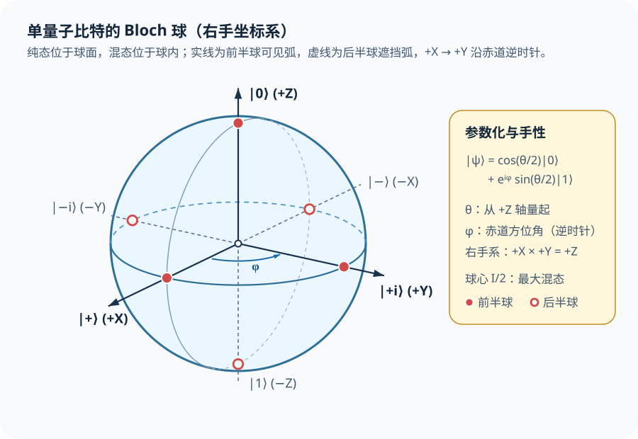

02｜单量子比特：状态、相位、旋转与测量
一个经典比特只有两个离散取值：0 0 0 1 1 1 0 0 0 1 1 1 θ / 2 \theta/2 θ /2 2 π 2\pi 2 π
为了让你一路算下来有“摸得着”的手感，本章选定一个贯穿始终的标杆态 ：
∣ ψ ⟩ = 3 2 ∣ 0 ⟩ + i 2 ∣ 1 ⟩ .
|\psi\rangle = \frac{\sqrt{3}}{2}|0\rangle + \frac{i}{2}|1\rangle.
∣ ψ ⟩ = 2 3 ∣0 ⟩ + 2 i ∣1 ⟩ . 它既有不相等的振幅大小，又带着虚数单位 i i i X / Y / Z X/Y/Z X / Y / Z
读本章只需先掌握第 01 章：零基础数学工具 里的复数模平方、二维列向量和 2 × 2 2\times 2 2 × 2 量子力学 Q1：从实验认识量子态 ；读完本章后，量子力学 Q2 会把这里的门矩阵与物理可观测量、哈密顿量和时间演化接通，第 03 章 再迈向多比特与纠缠。文中标有“进阶回看”的小节，第一遍阅读时可以先跳过，等你熟悉了主干再回来细算。
1. 量子态不是一枚藏起来的经典硬币
1.1 计算基、复振幅与归一化
先在二维复向量空间 C 2 \mathbb{C}^2 C 2
∣ 0 ⟩ = [ 1 0 ] , ∣ 1 ⟩ = [ 0 1 ] .
|0\rangle = \begin{bmatrix} 1 \\ 0 \end{bmatrix},
\qquad
|1\rangle = \begin{bmatrix} 0 \\ 1 \end{bmatrix}.
∣0 ⟩ = [ 1 0 ] , ∣1 ⟩ = [ 0 1 ] . 它们叫作计算基 （computational basis）。这里的 0 0 0 1 1 1 并不是 说量子比特在被测量之前，心里已经偷偷选好了 0 0 0 1 1 1
把这两个基态分别乘上复数 α , β ∈ C \alpha, \beta \in \mathbb{C} α , β ∈ C 纯态 （pure state）：
∣ ψ ⟩ = α ∣ 0 ⟩ + β ∣ 1 ⟩ = [ α β ] , ∣ α ∣ 2 + ∣ β ∣ 2 = 1.
|\psi\rangle = \alpha|0\rangle + \beta|1\rangle = \begin{bmatrix} \alpha \\ \beta \end{bmatrix},
\qquad
|\alpha|^2 + |\beta|^2 = 1.
∣ ψ ⟩ = α ∣0 ⟩ + β ∣1 ⟩ = [ α β ] , ∣ α ∣ 2 + ∣ β ∣ 2 = 1. 这里的复数 α \alpha α β \beta β 振幅 （amplitude）。它们满足的约束 ∣ α ∣ 2 + ∣ β ∣ 2 = 1 |\alpha|^2 + |\beta|^2 = 1 ∣ α ∣ 2 + ∣ β ∣ 2 = 1 归一化条件 ，其中 ∣ z ∣ 2 = z ∗ z |z|^2 = z^* z ∣ z ∣ 2 = z ∗ z z z z 混态 （mixed state）。
怎样把这两个复数和实验计数联系起来？量子力学给出了一条独立的物理输入——Born 规则 （它无法仅从列向量加法推导出来，而是由实验确立的测量规律）：
当单量子比特处于归一化纯态 ∣ ψ ⟩ = α ∣ 0 ⟩ + β ∣ 1 ⟩ |\psi\rangle = \alpha|0\rangle + \beta|1\rangle ∣ ψ ⟩ = α ∣0 ⟩ + β ∣1 ⟩ { ∣ 0 ⟩ , ∣ 1 ⟩ } \{|0\rangle, |1\rangle\} { ∣0 ⟩ , ∣1 ⟩} 0 0 0
p ( 0 ) = ∣ α ∣ 2 = α ∗ α , p(0) = |\alpha|^2 = \alpha^*\alpha, p ( 0 ) = ∣ α ∣ 2 = α ∗ α , 报告结果 1 1 1
p ( 1 ) = ∣ β ∣ 2 = β ∗ β . p(1) = |\beta|^2 = \beta^*\beta. p ( 1 ) = ∣ β ∣ 2 = β ∗ β .
归一化条件 ∣ α ∣ 2 + ∣ β ∣ 2 = 1 |\alpha|^2 + |\beta|^2 = 1 ∣ α ∣ 2 + ∣ β ∣ 2 = 1 p ( 0 ) + p ( 1 ) = 1 p(0) + p(1) = 1 p ( 0 ) + p ( 1 ) = 1
拿我们的标杆态 ∣ ψ ⟩ = 3 2 ∣ 0 ⟩ + i 2 ∣ 1 ⟩ |\psi\rangle = \frac{\sqrt{3}}{2}|0\rangle + \frac{i}{2}|1\rangle ∣ ψ ⟩ = 2 3 ∣0 ⟩ + 2 i ∣1 ⟩
检验总概率：3 4 + 1 4 = 1 \frac{3}{4} + \frac{1}{4} = 1 4 3 + 4 1 = 1 绝对不能 直接把复数平方，否则会误算出 ( i / 2 ) 2 = − 1 / 4 (i/2)^2 = -1/4 ( i /2 ) 2 = − 1/4
顺手小检验 ：给定 ∣ χ ⟩ = 3 5 ∣ 0 ⟩ + 4 5 ∣ 1 ⟩ |\chi\rangle = \frac{3}{5}|0\rangle + \frac{4}{5}|1\rangle ∣ χ ⟩ = 5 3 ∣0 ⟩ + 5 4 ∣1 ⟩ ( 3 / 5 ) 2 + ( 4 / 5 ) 2 = 9 / 25 + 16 / 25 = 1 (3/5)^2 + (4/5)^2 = 9/25 + 16/25 = 1 ( 3/5 ) 2 + ( 4/5 ) 2 = 9/25 + 16/25 = 1 0 0 0 9 / 25 9/25 9/25 1 1 1 16 / 25 16/25 16/25
1.2 同样的 50/50 概率，为什么不是同一个状态？
很多人刚学到叠加态时，会自然产生一个疑问：如果有一个态
∣ + ⟩ = ∣ 0 ⟩ + ∣ 1 ⟩ 2 = 1 2 [ 1 1 ] ,
|+\rangle = \frac{|0\rangle + |1\rangle}{\sqrt{2}} = \frac{1}{\sqrt{2}}\begin{bmatrix} 1 \\ 1 \end{bmatrix},
∣ + ⟩ = 2 ∣0 ⟩ + ∣1 ⟩ = 2 1 [ 1 1 ] , 在计算基测它，得 0 0 0 1 1 1 ∣ 1 / 2 ∣ 2 = 1 / 2 |1/\sqrt{2}|^2 = 1/2 ∣1/ 2 ∣ 2 = 1/2 ∣ 0 ⟩ |0\rangle ∣0 ⟩ ∣ 1 ⟩ |1\rangle ∣1 ⟩ 0 0 0 1 1 1
如果只允许 在计算基 { ∣ 0 ⟩ , ∣ 1 ⟩ } \{|0\rangle, |1\rangle\} { ∣0 ⟩ , ∣1 ⟩} ∣ + ⟩ |+\rangle ∣ + ⟩
∣ − ⟩ = ∣ 0 ⟩ − ∣ 1 ⟩ 2 = 1 2 [ 1 − 1 ] .
|-\rangle = \frac{|0\rangle - |1\rangle}{\sqrt{2}} = \frac{1}{\sqrt{2}}\begin{bmatrix} 1 \\ -1 \end{bmatrix}.
∣ − ⟩ = 2 ∣0 ⟩ − ∣1 ⟩ = 2 1 [ 1 − 1 ] . 容易核对 ⟨ + ∣ − ⟩ = 1 2 ( 1 ⋅ 1 + 1 ⋅ ( − 1 ) ) = 0 \langle + | - \rangle = \frac{1}{2}(1\cdot 1 + 1\cdot(-1)) = 0 ⟨ + ∣ − ⟩ = 2 1 ( 1 ⋅ 1 + 1 ⋅ ( − 1 )) = 0 1 1 1 { ∣ + ⟩ , ∣ − ⟩ } \{|+\rangle, |-\rangle\} { ∣ + ⟩ , ∣ − ⟩} C 2 \mathbb{C}^2 C 2 X X X X X X + + +
情况甲（每次都制备纯态 ∣ + ⟩ |+\rangle ∣ + ⟩ ：
结果 + + + ⟨ + ∣ + ⟩ \langle + | + \rangle ⟨ + ∣ + ⟩
⟨ + ∣ + ⟩ = 1 2 [ 1 1 ] 1 2 [ 1 1 ] = 1 + 1 2 = 1 , p 甲 ( + ) = ∣ 1 ∣ 2 = 1.
\langle + | + \rangle = \frac{1}{\sqrt{2}}\begin{bmatrix} 1 & 1 \end{bmatrix}\frac{1}{\sqrt{2}}\begin{bmatrix} 1 \\ 1 \end{bmatrix} = \frac{1 + 1}{2} = 1,
\qquad
p_{\text{甲}}(+) = |1|^2 = 1.
⟨ + ∣ + ⟩ = 2 1 [ 1 1 ] 2 1 [ 1 1 ] = 2 1 + 1 = 1 , p 甲 ( + ) = ∣1 ∣ 2 = 1. 也就是说，每一次都必然测到 + + + ，完全没有任何随机性！
情况乙（抛均匀硬币，一半概率送来 ∣ 0 ⟩ |0\rangle ∣0 ⟩ ∣ 1 ⟩ |1\rangle ∣1 ⟩ ：
先算两种经典分支各自在 X X X + + +
⟨ + ∣ 0 ⟩ = 1 2 [ 1 1 ] [ 1 0 ] = 1 2 ⟹ ∣ ⟨ + ∣ 0 ⟩ ∣ 2 = 1 2 ,
\langle + | 0 \rangle = \frac{1}{\sqrt{2}}\begin{bmatrix} 1 & 1 \end{bmatrix}\begin{bmatrix} 1 \\ 0 \end{bmatrix} = \frac{1}{\sqrt{2}}
\implies
|\langle + | 0 \rangle|^2 = \frac{1}{2},
⟨ + ∣0 ⟩ = 2 1 [ 1 1 ] [ 1 0 ] = 2 1 ⟹ ∣ ⟨ + ∣0 ⟩ ∣ 2 = 2 1 , ⟨ + ∣ 1 ⟩ = 1 2 [ 1 1 ] [ 0 1 ] = 1 2 ⟹ ∣ ⟨ + ∣ 1 ⟩ ∣ 2 = 1 2 .
\langle + | 1 \rangle = \frac{1}{\sqrt{2}}\begin{bmatrix} 1 & 1 \end{bmatrix}\begin{bmatrix} 0 \\ 1 \end{bmatrix} = \frac{1}{\sqrt{2}}
\implies
|\langle + | 1 \rangle|^2 = \frac{1}{2}.
⟨ + ∣1 ⟩ = 2 1 [ 1 1 ] [ 0 1 ] = 2 1 ⟹ ∣ ⟨ + ∣1 ⟩ ∣ 2 = 2 1 . 再按抛硬币的先验概率各占 1 / 2 1/2 1/2
p 乙 ( + ) = 1 2 ⋅ 1 2 + 1 2 ⋅ 1 2 = 1 2 .
p_{\text{乙}}(+) = \frac{1}{2}\cdot\frac{1}{2} + \frac{1}{2}\cdot\frac{1}{2} = \frac{1}{2}.
p 乙 ( + ) = 2 1 ⋅ 2 1 + 2 1 ⋅ 2 1 = 2 1 . 无论你换到计算基还是 X X X + + + − - −
把两组对比结果定格在一张表里：
这张表把量子叠加 和经典无知 的分界摆得明明白白：纯态 ∣ + ⟩ |+\rangle ∣ + ⟩ 0 0 0 1 1 1 X X X X X X + + + 单靠一次测量 仍无法百分之百认出未知来源——因为混态也有 1 / 2 1/2 1/2 + + +
2. 全局相位与相对相位：哪种相位能被看见？
一个非零复数可以写成极坐标 r e i γ r e^{i\gamma} r e iγ r > 0 r > 0 r > 0 γ ∈ R \gamma \in \mathbb{R} γ ∈ R ∣ r e i γ ∣ 2 = r 2 |r e^{i\gamma}|^2 = r^2 ∣ r e iγ ∣ 2 = r 2 整体共有的相位看不见，分量之间的相位差看得见。
2.1 全局相位：整体乘上 e i γ e^{i\gamma} e iγ
把整个态矢量的每一个分量 同时乘上同一个单位复数 e i γ e^{i\gamma} e iγ γ ∈ R \gamma \in \mathbb{R} γ ∈ R ∣ e i γ ∣ = 1 |e^{i\gamma}| = 1 ∣ e iγ ∣ = 1
∣ ϕ ⟩ = e i γ ∣ ψ ⟩ = ( e i γ α ) ∣ 0 ⟩ + ( e i γ β ) ∣ 1 ⟩ .
|\phi\rangle = e^{i\gamma}|\psi\rangle = (e^{i\gamma}\alpha)|0\rangle + (e^{i\gamma}\beta)|1\rangle.
∣ ϕ ⟩ = e iγ ∣ ψ ⟩ = ( e iγ α ) ∣0 ⟩ + ( e iγ β ) ∣1 ⟩ . 这个共同因子 e i γ e^{i\gamma} e iγ 全局相位 （global phase）。现在检验它对任意 测量方向 ∣ x ⟩ ∈ C 2 |x\rangle \in \mathbb{C}^2 ∣ x ⟩ ∈ C 2 ∥ ∣ x ⟩ ∥ = 1 \| |x\rangle \| = 1 ∥∣ x ⟩ ∥ = 1
∣ ⟨ x ∣ ϕ ⟩ ∣ 2 = ∣ ⟨ x ∣ ( e i γ ∣ ψ ⟩ ) ⟩ ∣ 2 = ∣ e i γ ⟨ x ∣ ψ ⟩ ∣ 2 = ∣ e i γ ∣ 2 ∣ ⟨ x ∣ ψ ⟩ ∣ 2 = 1 ⋅ ∣ ⟨ x ∣ ψ ⟩ ∣ 2 = ∣ ⟨ x ∣ ψ ⟩ ∣ 2 .
|\langle x | \phi \rangle|^2
= |\langle x | (e^{i\gamma}|\psi\rangle) \rangle|^2
= |e^{i\gamma}\langle x | \psi \rangle|^2
= |e^{i\gamma}|^2 \, |\langle x | \psi \rangle|^2
= 1 \cdot |\langle x | \psi \rangle|^2
= |\langle x | \psi \rangle|^2.
∣ ⟨ x ∣ ϕ ⟩ ∣ 2 = ∣ ⟨ x ∣ ( e iγ ∣ ψ ⟩)⟩ ∣ 2 = ∣ e iγ ⟨ x ∣ ψ ⟩ ∣ 2 = ∣ e iγ ∣ 2 ∣ ⟨ x ∣ ψ ⟩ ∣ 2 = 1 ⋅ ∣ ⟨ x ∣ ψ ⟩ ∣ 2 = ∣ ⟨ x ∣ ψ ⟩ ∣ 2 . 拿具体数字试一下：令 ∣ ϕ ⟩ = i ∣ ψ ⟩ |\phi\rangle = i|\psi\rangle ∣ ϕ ⟩ = i ∣ ψ ⟩ γ = π / 2 \gamma = \pi/2 γ = π /2 U U U i i i U ∣ ϕ ⟩ = i ( U ∣ ψ ⟩ ) U|\phi\rangle = i(U|\psi\rangle) U ∣ ϕ ⟩ = i ( U ∣ ψ ⟩) ∣ i ∣ 2 = 1 |i|^2 = 1 ∣ i ∣ 2 = 1 ∣ ψ ⟩ |\psi\rangle ∣ ψ ⟩ e i γ ∣ ψ ⟩ e^{i\gamma}|\psi\rangle e iγ ∣ ψ ⟩ 同一个物理纯态 。
这里顺手埋一个重要伏笔：上面的结论要求 e i γ e^{i\gamma} e iγ 整个系统的所有分支 上。如果某个相位因子只乘在多比特受控操作或干涉仪的其中一条分支 上，它相对于另一条分支就变成了可观测的相位差——第 5.3 节里，我们会用受控 2 π 2\pi 2 π
2.2 相对相位与干涉：怎样把看不见的符号变成确定的 0 0 0 1 1 1
回看 ∣ + ⟩ = ∣ 0 ⟩ + ∣ 1 ⟩ 2 |+\rangle = \frac{|0\rangle + |1\rangle}{\sqrt{2}} ∣ + ⟩ = 2 ∣0 ⟩ + ∣1 ⟩ ∣ − ⟩ = ∣ 0 ⟩ − ∣ 1 ⟩ 2 |-\rangle = \frac{|0\rangle - |1\rangle}{\sqrt{2}} ∣ − ⟩ = 2 ∣0 ⟩ − ∣1 ⟩ ( 1 / 2 , 1 / 2 ) (1/2, 1/2) ( 1/2 , 1/2 ) ∣ 1 ⟩ |1\rangle ∣1 ⟩ − 1 = e i π -1 = e^{i\pi} − 1 = e iπ ∣ 0 ⟩ |0\rangle ∣0 ⟩ 相对相位 （relative phase）。
要让相对相位在计算基里显形，最经典的做法是让态经过一次 Hadamard 门 （记作 H H H H ∣ 0 ⟩ = ∣ + ⟩ H|0\rangle = |+\rangle H ∣0 ⟩ = ∣ + ⟩ H ∣ 1 ⟩ = ∣ − ⟩ H|1\rangle = |-\rangle H ∣1 ⟩ = ∣ − ⟩ H ∣ + ⟩ H|+\rangle H ∣ + ⟩ H ∣ − ⟩ H|-\rangle H ∣ − ⟩
H ∣ + ⟩ = H ( ∣ 0 ⟩ + ∣ 1 ⟩ 2 ) = H ∣ 0 ⟩ + H ∣ 1 ⟩ 2 = ∣ + ⟩ + ∣ − ⟩ 2 = 1 2 ( ∣ 0 ⟩ + ∣ 1 ⟩ 2 + ∣ 0 ⟩ − ∣ 1 ⟩ 2 ) = 2 ∣ 0 ⟩ 2 = ∣ 0 ⟩ .
\begin{aligned}
H|+\rangle
&= H\!\left(\frac{|0\rangle + |1\rangle}{\sqrt{2}}\right)
= \frac{H|0\rangle + H|1\rangle}{\sqrt{2}}
= \frac{|+\rangle + |-\rangle}{\sqrt{2}} \\
&= \frac{1}{\sqrt{2}}\left(\frac{|0\rangle + |1\rangle}{\sqrt{2}} + \frac{|0\rangle - |1\rangle}{\sqrt{2}}\right)
= \frac{2|0\rangle}{2}
= |0\rangle.
\end{aligned}
H ∣ + ⟩ = H ( 2 ∣0 ⟩ + ∣1 ⟩ ) = 2 H ∣0 ⟩ + H ∣1 ⟩ = 2 ∣ + ⟩ + ∣ − ⟩ = 2 1 ( 2 ∣0 ⟩ + ∣1 ⟩ + 2 ∣0 ⟩ − ∣1 ⟩ ) = 2 2∣0 ⟩ = ∣0 ⟩ . 完全照样展开 H ∣ − ⟩ H|-\rangle H ∣ − ⟩
H ∣ − ⟩ = ∣ + ⟩ − ∣ − ⟩ 2 = 1 2 ( ∣ 0 ⟩ + ∣ 1 ⟩ 2 − ∣ 0 ⟩ − ∣ 1 ⟩ 2 ) = 2 ∣ 1 ⟩ 2 = ∣ 1 ⟩ .
\begin{aligned}
H|-\rangle
&= \frac{|+\rangle - |-\rangle}{\sqrt{2}}
= \frac{1}{\sqrt{2}}\left(\frac{|0\rangle + |1\rangle}{\sqrt{2}} - \frac{|0\rangle - |1\rangle}{\sqrt{2}}\right)
= \frac{2|1\rangle}{2}
= |1\rangle.
\end{aligned}
H ∣ − ⟩ = 2 ∣ + ⟩ − ∣ − ⟩ = 2 1 ( 2 ∣0 ⟩ + ∣1 ⟩ − 2 ∣0 ⟩ − ∣1 ⟩ ) = 2 2∣1 ⟩ = ∣1 ⟩ . 看清括号里发生了什么：算 H ∣ + ⟩ H|+\rangle H ∣ + ⟩ ∣ 0 ⟩ |0\rangle ∣0 ⟩ ∣ 1 ⟩ |1\rangle ∣1 ⟩ H ∣ − ⟩ H|-\rangle H ∣ − ⟩ ∣ 0 ⟩ |0\rangle ∣0 ⟩ ∣ 1 ⟩ |1\rangle ∣1 ⟩ H H H 0 0 0 1 1 1
推广到一般相对相位 ϕ ∈ [ 0 , 2 π ) \phi \in [0, 2\pi) ϕ ∈ [ 0 , 2 π ) ∣ 0 ⟩ |0\rangle ∣0 ⟩ H H H ∣ 0 ⟩ + ∣ 1 ⟩ 2 \frac{|0\rangle+|1\rangle}{\sqrt{2}} 2 ∣0 ⟩ + ∣1 ⟩ ∣ 1 ⟩ |1\rangle ∣1 ⟩ e i ϕ e^{i\phi} e i ϕ ∣ 0 ⟩ + e i ϕ ∣ 1 ⟩ 2 \frac{|0\rangle + e^{i\phi}|1\rangle}{\sqrt{2}} 2 ∣0 ⟩ + e i ϕ ∣1 ⟩ H H H
H ( ∣ 0 ⟩ + e i ϕ ∣ 1 ⟩ 2 ) = 1 + e i ϕ 2 ∣ 0 ⟩ + 1 − e i ϕ 2 ∣ 1 ⟩ .
H\!\left(\frac{|0\rangle + e^{i\phi}|1\rangle}{\sqrt{2}}\right)
= \frac{1 + e^{i\phi}}{2}|0\rangle + \frac{1 - e^{i\phi}}{2}|1\rangle.
H ( 2 ∣0 ⟩ + e i ϕ ∣1 ⟩ ) = 2 1 + e i ϕ ∣0 ⟩ + 2 1 − e i ϕ ∣1 ⟩ . 用欧拉公式 e i ϕ = cos ϕ + i sin ϕ e^{i\phi} = \cos\phi + i\sin\phi e i ϕ = cos ϕ + i sin ϕ 0 0 0
p ( 0 ) = ∣ 1 + e i ϕ 2 ∣ 2 = ( 1 + cos ϕ ) 2 + sin 2 ϕ 4 = 1 + 2 cos ϕ + cos 2 ϕ + sin 2 ϕ 4 = 1 + cos ϕ 2 = cos 2 ( ϕ 2 ) .
p(0) = \left|\frac{1 + e^{i\phi}}{2}\right|^2
= \frac{(1 + \cos\phi)^2 + \sin^2\phi}{4}
= \frac{1 + 2\cos\phi + \cos^2\phi + \sin^2\phi}{4}
= \frac{1 + \cos\phi}{2}
= \cos^2\!\left(\frac{\phi}{2}\right).
p ( 0 ) = 2 1 + e i ϕ 2 = 4 ( 1 + cos ϕ ) 2 + sin 2 ϕ = 4 1 + 2 cos ϕ + cos 2 ϕ + sin 2 ϕ = 2 1 + cos ϕ = cos 2 ( 2 ϕ ) . 随着相对相位 ϕ \phi ϕ 0 0 0 π \pi π 0 0 0 1 1 1 0 0 0 ϕ = 2 π / 3 \phi = 2\pi/3 ϕ = 2 π /3 cos 2 ( π / 3 ) = 1 / 4 \cos^2(\pi/3) = 1/4 cos 2 ( π /3 ) = 1/4 合成音频体验 听一听相位差为 0 0 0 2 π / 3 2\pi/3 2 π /3 π \pi π
3. Bloch 球：把单量子比特画成三维球面
计算基概率 p ( 0 ) = ∣ α ∣ 2 p(0)=|\alpha|^2 p ( 0 ) = ∣ α ∣ 2 p ( 1 ) = ∣ β ∣ 2 p(1)=|\beta|^2 p ( 1 ) = ∣ β ∣ 2 大小 ，却丢掉了它们之间的相对相位 。有没有办法用一张立体几何图，把任意单量子比特纯态的大小和相对相位同时画出来？这就是量子计算里最常用的几何地图——Bloch 球 （Bloch sphere）。
3.1 从四个实数到两个球面角：半角 θ / 2 \theta/2 θ /2
先数一数一个一般纯态 ∣ ψ ⟩ = α ∣ 0 ⟩ + β ∣ 1 ⟩ ∈ C 2 |\psi\rangle = \alpha|0\rangle + \beta|1\rangle \in \mathbb{C}^2 ∣ ψ ⟩ = α ∣0 ⟩ + β ∣1 ⟩ ∈ C 2
α = r 0 e i γ 0 , β = r 1 e i γ 1 , r 0 , r 1 ≥ 0 , γ 0 , γ 1 ∈ [ 0 , 2 π ) .
\alpha = r_0 e^{i\gamma_0}, \qquad \beta = r_1 e^{i\gamma_1},
\qquad r_0, r_1 \ge 0,\quad \gamma_0, \gamma_1 \in [0, 2\pi).
α = r 0 e i γ 0 , β = r 1 e i γ 1 , r 0 , r 1 ≥ 0 , γ 0 , γ 1 ∈ [ 0 , 2 π ) . 最初这里有 4 个实数 ( r 0 , r 1 , γ 0 , γ 1 ) (r_0, r_1, \gamma_0, \gamma_1) ( r 0 , r 1 , γ 0 , γ 1 )
归一化消去 1 维 ：r 0 2 + r 1 2 = 1 r_0^2 + r_1^2 = 1 r 0 2 + r 1 2 = 1 r 0 , r 1 ≥ 0 r_0, r_1 \ge 0 r 0 , r 1 ≥ 0 1 1 1 θ / 2 \theta/2 θ /2
r 0 = cos θ 2 , r 1 = sin θ 2 , θ ∈ [ 0 , π ] .
r_0 = \cos\frac{\theta}{2}, \qquad r_1 = \sin\frac{\theta}{2}, \qquad \theta \in [0, \pi].
r 0 = cos 2 θ , r 1 = sin 2 θ , θ ∈ [ 0 , π ] . 因为 θ / 2 ∈ [ 0 , π / 2 ] \theta/2 \in [0, \pi/2] θ /2 ∈ [ 0 , π /2 ] cos ( θ / 2 ) ≥ 0 \cos(\theta/2) \ge 0 cos ( θ /2 ) ≥ 0 sin ( θ / 2 ) ≥ 0 \sin(\theta/2) \ge 0 sin ( θ /2 ) ≥ 0
去掉全局相位再消去 1 维 ：当 α ≠ 0 \alpha \ne 0 α = 0 e i γ 0 e^{i\gamma_0} e i γ 0 φ = ( γ 1 − γ 0 ) m o d 2 π ∈ [ 0 , 2 π ) \varphi = (\gamma_1 - \gamma_0) \bmod 2\pi \in [0, 2\pi) φ = ( γ 1 − γ 0 ) mod 2 π ∈ [ 0 , 2 π )
∣ ψ ( θ , φ ) ⟩ = cos θ 2 ∣ 0 ⟩ + e i φ sin θ 2 ∣ 1 ⟩ , θ ∈ [ 0 , π ] , φ ∈ [ 0 , 2 π ) .
|\psi(\theta, \varphi)\rangle = \cos\frac{\theta}{2}|0\rangle + e^{i\varphi}\sin\frac{\theta}{2}|1\rangle,
\qquad
\theta \in [0, \pi],\quad \varphi \in [0, 2\pi).
∣ ψ ( θ , φ )⟩ = cos 2 θ ∣0 ⟩ + e i φ sin 2 θ ∣1 ⟩ , θ ∈ [ 0 , π ] , φ ∈ [ 0 , 2 π ) . 检查两个极点的边界情形：若 β = 0 \beta = 0 β = 0 θ = 0 \theta = 0 θ = 0 ∣ 0 ⟩ |0\rangle ∣0 ⟩ α = 0 \alpha = 0 α = 0 θ = π \theta = \pi θ = π e i φ ∣ 1 ⟩ e^{i\varphi}|1\rangle e i φ ∣1 ⟩ ∣ 1 ⟩ |1\rangle ∣1 ⟩ θ = 0 \theta = 0 θ = 0 θ = π \theta = \pi θ = π φ \varphi φ
剩下的两个角 ( θ , φ ) (\theta, \varphi) ( θ , φ ) S 2 S^2 S 2 Bloch 向量 ：
r ⃗ = ( r x , r y , r z ) = ( sin θ cos φ , sin θ sin φ , cos θ ) ∈ R 3 , ∣ r ⃗ ∣ = 1.
\vec{r} = (r_x, r_y, r_z) = (\sin\theta\cos\varphi,\; \sin\theta\sin\varphi,\; \cos\theta) \in \mathbb{R}^3,
\qquad |\vec{r}| = 1.
r = ( r x , r y , r z ) = ( sin θ cos φ , sin θ sin φ , cos θ ) ∈ R 3 , ∣ r ∣ = 1. 为什么公式里偏偏要写半角 θ / 2 \theta/2 θ /2 θ \theta θ 答案藏在“正交态的对跖几何”里（也正好接上 Q1 第 4.3 节 自旋-1 / 2 1/2 1/2 180 ∘ 180^\circ 18 0 ∘ C 2 \mathbb{C}^2 C 2 ∣ 0 ⟩ |0\rangle ∣0 ⟩ ∣ 1 ⟩ |1\rangle ∣1 ⟩ π / 2 \pi/2 π /2 90 ∘ 90^\circ 9 0 ∘ ∣ 0 ⟩ |0\rangle ∣0 ⟩ ( 0 , 0 , + 1 ) (0,0,+1) ( 0 , 0 , + 1 ) ∣ 1 ⟩ |1\rangle ∣1 ⟩ ( 0 , 0 , − 1 ) (0,0,-1) ( 0 , 0 , − 1 ) 穿过球心的一对对跖点 ，三维夹角拉大成了整整 π \pi π 180 ∘ 180^\circ 18 0 ∘
这种“夹角翻倍”对任意一对正交态 都成立：∣ + ⟩ |+\rangle ∣ + ⟩ + x +x + x ∣ − ⟩ |-\rangle ∣ − ⟩ − x -x − x ∣ + i ⟩ |{+i}\rangle ∣ + i ⟩ + y +y + y ∣ − i ⟩ |{-i}\rangle ∣ − i ⟩ − y -y − y ∣ ψ 1 ⟩ |\psi_1\rangle ∣ ψ 1 ⟩ ∣ ψ 2 ⟩ |\psi_2\rangle ∣ ψ 2 ⟩ r ⃗ 1 \vec{r}_1 r 1 r ⃗ 2 \vec{r}_2 r 2 三维空间夹角 为 γ ∈ [ 0 , π ] \gamma \in [0, \pi] γ ∈ [ 0 , π ] γ \gamma γ arccos ( r ⃗ 1 ⋅ r ⃗ 2 ) \arccos(\vec{r}_1\cdot\vec{r}_2) arccos ( r 1 ⋅ r 2 ) 并不是 极角之差 θ 1 − θ 2 \theta_1 - \theta_2 θ 1 − θ 2 ∣ + ⟩ |+\rangle ∣ + ⟩ ∣ + i ⟩ |{+i}\rangle ∣ + i ⟩ 0 0 0 γ = π / 2 \gamma = \pi/2 γ = π /2
∣ ⟨ ψ 1 ∣ ψ 2 ⟩ ∣ 2 = 1 + r ⃗ 1 ⋅ r ⃗ 2 2 = 1 + cos γ 2 = cos 2 ( γ 2 ) .
|\langle \psi_1 | \psi_2 \rangle|^2 = \frac{1 + \vec{r}_1 \cdot \vec{r}_2}{2} = \frac{1 + \cos\gamma}{2} = \cos^2\!\left(\frac{\gamma}{2}\right).
∣ ⟨ ψ 1 ∣ ψ 2 ⟩ ∣ 2 = 2 1 + r 1 ⋅ r 2 = 2 1 + cos γ = cos 2 ( 2 γ ) . 检验两个极端情形：当两态重合时 γ = 0 \gamma = 0 γ = 0 cos 2 ( 0 ) = 1 \cos^2(0) = 1 cos 2 ( 0 ) = 1 0 0 0 γ / 2 = π / 2 \gamma/2 = \pi/2 γ /2 = π /2 γ = π \gamma = \pi γ = π θ / 2 \theta/2 θ /2
3.2 六个轴点、图示与布居/相干的几何含义
把坐标轴的六个端点整理成速查表。这里引入 Y Y Y
∣ + i ⟩ : = ∣ 0 ⟩ + i ∣ 1 ⟩ 2 , ∣ − i ⟩ : = ∣ 0 ⟩ − i ∣ 1 ⟩ 2 .
|{+i}\rangle := \frac{|0\rangle + i|1\rangle}{\sqrt{2}},
\qquad
|{-i}\rangle := \frac{|0\rangle - i|1\rangle}{\sqrt{2}}.
∣ + i ⟩ := 2 ∣0 ⟩ + i ∣1 ⟩ , ∣ − i ⟩ := 2 ∣0 ⟩ − i ∣1 ⟩ . 对照下图把这六个轴点记牢。请务必记住一条直觉边界：Bloch 球的三个坐标 ( r x , r y , r z ) (r_x, r_y, r_z) ( r x , r y , r z ) ( x , y , z ) (x, y, z) ( x , y , z ) ，球上的箭头也不是一颗在实验室里旋转的小钢珠。

放大查看 ↗ Bloch 球的六个轴点：纯态位于单位球面，混态位于球体内部；三个无量纲坐标对应 Pauli 期望值而非空间位置 （可打开原尺寸 Bloch 球图 清晰查看全部标签。）
用 ∣ + ⟩ |+\rangle ∣ + ⟩ ∣ − ⟩ |-\rangle ∣ − ⟩ ∣ + ⟩ |+\rangle ∣ + ⟩ 1 / 2 1/\sqrt{2} 1/ 2 θ = π / 2 \theta = \pi/2 θ = π /2 φ = 0 \varphi = 0 φ = 0 ( 1 , 0 , 0 ) (1, 0, 0) ( 1 , 0 , 0 ) ∣ − ⟩ |-\rangle ∣ − ⟩ ∣ 1 ⟩ |1\rangle ∣1 ⟩ − 1 = e i π -1 = e^{i\pi} − 1 = e iπ θ \theta θ π / 2 \pi/2 π /2 φ \varphi φ π \pi π ( − 1 , 0 , 0 ) (-1, 0, 0) ( − 1 , 0 , 0 )
细心的读者会问：既然球面 ∣ r ⃗ ∣ = 1 |\vec{r}| = 1 ∣ r ∣ = 1 纯态 ，那空心球体里面 （∣ r ⃗ ∣ < 1 |\vec{r}| < 1 ∣ r ∣ < 1 混态 ！如果用 2 × 2 2\times 2 2 × 2 ρ \rho ρ σ ⃗ = ( X , Y , Z ) \vec{\sigma} = (X, Y, Z) σ = ( X , Y , Z ) X , Y , Z X, Y, Z X , Y , Z
ρ = 1 2 ( I + r ⃗ ⋅ σ ⃗ ) = 1 2 [ 1 + r z r x − i r y r x + i r y 1 − r z ] , ∣ r ⃗ ∣ ≤ 1.
\rho = \frac{1}{2}(I + \vec{r}\cdot\vec{\sigma})
= \frac{1}{2}\begin{bmatrix} 1 + r_z & r_x - i r_y \\ r_x + i r_y & 1 - r_z \end{bmatrix},
\qquad |\vec{r}| \le 1.
ρ = 2 1 ( I + r ⋅ σ ) = 2 1 [ 1 + r z r x + i r y r x − i r y 1 − r z ] , ∣ r ∣ ≤ 1. 把一般纯态 ∣ ψ ⟩ = α ∣ 0 ⟩ + β ∣ 1 ⟩ |\psi\rangle = \alpha|0\rangle + \beta|1\rangle ∣ ψ ⟩ = α ∣0 ⟩ + β ∣1 ⟩ ∣ ψ ⟩ ⟨ ψ ∣ |\psi\rangle\langle\psi| ∣ ψ ⟩ ⟨ ψ ∣
∣ ψ ⟩ ⟨ ψ ∣ = [ α β ] [ α ∗ β ∗ ] = [ ∣ α ∣ 2 α β ∗ α ∗ β ∣ β ∣ 2 ] = 1 2 [ 1 + r z r x − i r y r x + i r y 1 − r z ] .
|\psi\rangle\langle\psi|
= \begin{bmatrix} \alpha \\ \beta \end{bmatrix}\begin{bmatrix} \alpha^* & \beta^* \end{bmatrix}
= \begin{bmatrix} |\alpha|^2 & \alpha\beta^* \\ \alpha^*\beta & |\beta|^2 \end{bmatrix}
= \frac{1}{2}\begin{bmatrix} 1 + r_z & r_x - i r_y \\ r_x + i r_y & 1 - r_z \end{bmatrix}.
∣ ψ ⟩ ⟨ ψ ∣ = [ α β ] [ α ∗ β ∗ ] = [ ∣ α ∣ 2 α ∗ β α β ∗ ∣ β ∣ 2 ] = 2 1 [ 1 + r z r x + i r y r x − i r y 1 − r z ] . 这张对照表能帮你一眼看穿全书后面反复出现的噪声几何：
球面 ∣ r ⃗ ∣ = 1 |\vec{r}| = 1 ∣ r ∣ = 1 ：纯态（相干项模长达到给定纬度下的最大值 ρ 00 ρ 11 \sqrt{\rho_{00}\rho_{11}} ρ 00 ρ 11 ∣ + ⟩ |+\rangle ∣ + ⟩ ( 1 , 0 , 0 ) (1,0,0) ( 1 , 0 , 0 ) 球内 0 < ∣ r ⃗ ∣ < 1 0 < |\vec{r}| < 1 0 < ∣ r ∣ < 1 ：部分混合态（例如纯退相位噪声只把非对角相干元按比例压小，几何上就是把 Bloch 向量水平拉向 z z z r z r_z r z 球心 r ⃗ = ( 0 , 0 , 0 ) \vec{r} = (0,0,0) r = ( 0 , 0 , 0 ) ：最大混合态 ρ = I / 2 \rho = I/2 ρ = I /2 ∣ 0 ⟩ |0\rangle ∣0 ⟩ ∣ 1 ⟩ |1\rangle ∣1 ⟩ ∣ + ⟩ |+\rangle ∣ + ⟩ z z z r z = 0 r_z = 0 r z = 0 0 0 0 1 / 2 1/2 1/2
为什么合法单比特密度矩阵恰好填满整个实心单位球、而一旦跑到球外 ∣ r ⃗ ∣ > 1 |\vec{r}| > 1 ∣ r ∣ > 1 第 05 章：混态、噪声与量子信道 给出 ρ = 1 2 ( I + r ⃗ ⋅ σ ⃗ ) \rho = \frac{1}{2}(I + \vec{r}\cdot\vec{\sigma}) ρ = 2 1 ( I + r ⋅ σ ) ∣ r ⃗ ∣ ≤ 1 ⟺ ρ ⪰ 0 |\vec{r}| \le 1 \iff \rho \succeq 0 ∣ r ∣ ≤ 1 ⟺ ρ ⪰ 0
最后交代 Bloch 球的适用范围：它只能完整表示单个 量子比特。当两个量子比特处于可分乘积态时，可以各自画一颗小球；可一旦进入第 03 章 的纠缠态（如 Bell 态），两个单比特各自的局部 Bloch 向量都会缩回球心 0 ⃗ \vec{0} 0
4. Pauli 门、Hadamard 门与从振幅计算 Bloch 坐标
如果说列向量 ∣ ψ ⟩ ∈ C 2 |\psi\rangle \in \mathbb{C}^2 ∣ ψ ⟩ ∈ C 2 单量子比特门 就是作用在列向量上的 2 × 2 2\times 2 2 × 2 U U U 1 1 1 酉矩阵 （unitary matrix），满足
U † U = U U † = I ,
U^\dagger U = U U^\dagger = I,
U † U = U U † = I , 其中 U † U^\dagger U † U U U 画量子线路图时，时间从左向右流逝；写矩阵乘法时，最靠右的矩阵最先作用在列向量上。 也就是说，先施加门 A A A B B B
B ( A ∣ ψ ⟩ ) = ( B A ) ∣ ψ ⟩ .
B(A|\psi\rangle) = (BA)|\psi\rangle.
B ( A ∣ ψ ⟩) = ( B A ) ∣ ψ ⟩ . 4.1 四个最基本的单比特门：X , Y , Z , H X, Y, Z, H X , Y , Z , H
在计算基 { ∣ 0 ⟩ , ∣ 1 ⟩ } \{|0\rangle, |1\rangle\} { ∣0 ⟩ , ∣1 ⟩} Pauli 矩阵 X , Y , Z X, Y, Z X , Y , Z σ x , σ y , σ z \sigma_x, \sigma_y, \sigma_z σ x , σ y , σ z σ 0 = I \sigma_0 = I σ 0 = I Hadamard 门 H H H
X = [ 0 1 1 0 ] , Y = [ 0 − i i 0 ] , Z = [ 1 0 0 − 1 ] , H = 1 2 [ 1 1 1 − 1 ] .
X = \begin{bmatrix} 0 & 1 \\ 1 & 0 \end{bmatrix},
\qquad
Y = \begin{bmatrix} 0 & -i \\ i & 0 \end{bmatrix},
\qquad
Z = \begin{bmatrix} 1 & 0 \\ 0 & -1 \end{bmatrix},
\qquad
H = \frac{1}{\sqrt{2}}\begin{bmatrix} 1 & 1 \\ 1 & -1 \end{bmatrix}.
X = [ 0 1 1 0 ] , Y = [ 0 i − i 0 ] , Z = [ 1 0 0 − 1 ] , H = 2 1 [ 1 1 1 − 1 ] . 这四个矩阵有一个共同的好性质：它们既是酉矩阵（U † U = I U^\dagger U = I U † U = I U † = U U^\dagger = U U † = U X 2 = Y 2 = Z 2 = H 2 = I X^2 = Y^2 = Z^2 = H^2 = I X 2 = Y 2 = Z 2 = H 2 = I
X X X ∣ 0 ⟩ |0\rangle ∣0 ⟩ ∣ 1 ⟩ |1\rangle ∣1 ⟩ ∣ 1 ⟩ |1\rangle ∣1 ⟩ ∣ 0 ⟩ |0\rangle ∣0 ⟩ x x x π \pi π
Z Z Z ∣ 0 ⟩ |0\rangle ∣0 ⟩ ∣ 1 ⟩ |1\rangle ∣1 ⟩ Z ∣ 1 ⟩ = − ∣ 1 ⟩ Z|1\rangle = -|1\rangle Z ∣1 ⟩ = − ∣1 ⟩ Z ∣ + ⟩ = ∣ − ⟩ Z|+\rangle = |-\rangle Z ∣ + ⟩ = ∣ − ⟩ Z ∣ − ⟩ = ∣ + ⟩ Z|-\rangle = |+\rangle Z ∣ − ⟩ = ∣ + ⟩ z z z π \pi π
Y Y Y ∣ 0 ⟩ |0\rangle ∣0 ⟩ i ∣ 1 ⟩ i|1\rangle i ∣1 ⟩ ∣ 1 ⟩ |1\rangle ∣1 ⟩ − i ∣ 0 ⟩ -i|0\rangle − i ∣0 ⟩ X Z XZ XZ Z X ZX ZX i i i Y = i X Z = − i Z X Y = iXZ = -iZX Y = i XZ = − i ZX Y = i Z X Y = iZX Y = i ZX
X Z = [ 0 − 1 1 0 ] , Z X = [ 0 1 − 1 0 ] = − X Z , i X Z = i [ 0 − 1 1 0 ] = [ 0 − i i 0 ] = Y .
XZ = \begin{bmatrix} 0 & -1 \\ 1 & 0 \end{bmatrix},
\qquad
ZX = \begin{bmatrix} 0 & 1 \\ -1 & 0 \end{bmatrix} = -XZ,
\qquad
iXZ = i\begin{bmatrix} 0 & -1 \\ 1 & 0 \end{bmatrix} = \begin{bmatrix} 0 & -i \\ i & 0 \end{bmatrix} = Y.
XZ = [ 0 1 − 1 0 ] , ZX = [ 0 − 1 1 0 ] = − XZ , i XZ = i [ 0 1 − 1 0 ] = [ 0 i − i 0 ] = Y . 三个 Pauli 矩阵遵循整洁的循环乘法律 与反对易律 ：
X Y = i Z , Y Z = i X , Z X = i Y , X Y + Y X = Y Z + Z Y = Z X + X Z = 0.
XY = iZ,\quad YZ = iX,\quad ZX = iY,
\qquad
XY + YX = YZ + ZY = ZX + XZ = 0.
X Y = i Z , Y Z = i X , ZX = iY , X Y + Y X = Y Z + Z Y = ZX + XZ = 0. H H H Z Z Z X X X
H ∣ 0 ⟩ = 1 2 [ 1 1 1 − 1 ] [ 1 0 ] = 1 2 [ 1 ⋅ 1 + 1 ⋅ 0 1 ⋅ 1 + ( − 1 ) ⋅ 0 ] = 1 2 [ 1 1 ] = ∣ + ⟩ ,
H|0\rangle
= \frac{1}{\sqrt{2}}\begin{bmatrix} 1 & 1 \\ 1 & -1 \end{bmatrix}\begin{bmatrix} 1 \\ 0 \end{bmatrix}
= \frac{1}{\sqrt{2}}\begin{bmatrix} 1\cdot 1 + 1\cdot 0 \\ 1\cdot 1 + (-1)\cdot 0 \end{bmatrix}
= \frac{1}{\sqrt{2}}\begin{bmatrix} 1 \\ 1 \end{bmatrix}
= |+\rangle,
H ∣0 ⟩ = 2 1 [ 1 1 1 − 1 ] [ 1 0 ] = 2 1 [ 1 ⋅ 1 + 1 ⋅ 0 1 ⋅ 1 + ( − 1 ) ⋅ 0 ] = 2 1 [ 1 1 ] = ∣ + ⟩ , H ∣ 1 ⟩ = 1 2 [ 1 1 1 − 1 ] [ 0 1 ] = 1 2 [ 1 ⋅ 0 + 1 ⋅ 1 1 ⋅ 0 + ( − 1 ) ⋅ 1 ] = 1 2 [ 1 − 1 ] = ∣ − ⟩ .
H|1\rangle
= \frac{1}{\sqrt{2}}\begin{bmatrix} 1 & 1 \\ 1 & -1 \end{bmatrix}\begin{bmatrix} 0 \\ 1 \end{bmatrix}
= \frac{1}{\sqrt{2}}\begin{bmatrix} 1\cdot 0 + 1\cdot 1 \\ 1\cdot 0 + (-1)\cdot 1 \end{bmatrix}
= \frac{1}{\sqrt{2}}\begin{bmatrix} 1 \\ -1 \end{bmatrix}
= |-\rangle.
H ∣1 ⟩ = 2 1 [ 1 1 1 − 1 ] [ 0 1 ] = 2 1 [ 1 ⋅ 0 + 1 ⋅ 1 1 ⋅ 0 + ( − 1 ) ⋅ 1 ] = 2 1 [ 1 − 1 ] = ∣ − ⟩ .
再算一个在量子电路里反复出现的恒等式：H Z H HZH H Z H Z H ZH Z H
Z H = 1 2 [ 1 0 0 − 1 ] [ 1 1 1 − 1 ] = 1 2 [ 1 1 − 1 1 ] ,
ZH = \frac{1}{\sqrt{2}}\begin{bmatrix} 1 & 0 \\ 0 & -1 \end{bmatrix}\begin{bmatrix} 1 & 1 \\ 1 & -1 \end{bmatrix}
= \frac{1}{\sqrt{2}}\begin{bmatrix} 1 & 1 \\ -1 & 1 \end{bmatrix},
Z H = 2 1 [ 1 0 0 − 1 ] [ 1 1 1 − 1 ] = 2 1 [ 1 − 1 1 1 ] , 再左乘 H H H
H Z H = 1 2 [ 1 1 1 − 1 ] [ 1 1 − 1 1 ] = 1 2 [ 1 ⋅ 1 + 1 ⋅ ( − 1 ) 1 ⋅ 1 + 1 ⋅ 1 1 ⋅ 1 + ( − 1 ) ⋅ ( − 1 ) 1 ⋅ 1 + ( − 1 ) ⋅ 1 ] = 1 2 [ 0 2 2 0 ] = [ 0 1 1 0 ] = X .
HZH = \frac{1}{2}\begin{bmatrix} 1 & 1 \\ 1 & -1 \end{bmatrix}\begin{bmatrix} 1 & 1 \\ -1 & 1 \end{bmatrix}
= \frac{1}{2}\begin{bmatrix} 1\cdot 1 + 1\cdot(-1) & 1\cdot 1 + 1\cdot 1 \\ 1\cdot 1 + (-1)\cdot(-1) & 1\cdot 1 + (-1)\cdot 1 \end{bmatrix}
= \frac{1}{2}\begin{bmatrix} 0 & 2 \\ 2 & 0 \end{bmatrix}
= \begin{bmatrix} 0 & 1 \\ 1 & 0 \end{bmatrix} = X.
H Z H = 2 1 [ 1 1 1 − 1 ] [ 1 − 1 1 1 ] = 2 1 [ 1 ⋅ 1 + 1 ⋅ ( − 1 ) 1 ⋅ 1 + ( − 1 ) ⋅ ( − 1 ) 1 ⋅ 1 + 1 ⋅ 1 1 ⋅ 1 + ( − 1 ) ⋅ 1 ] = 2 1 [ 0 2 2 0 ] = [ 0 1 1 0 ] = X . 用它作用在 ∣ 0 ⟩ |0\rangle ∣0 ⟩ ∣ 0 ⟩ → H ∣ + ⟩ → Z ∣ − ⟩ → H ∣ 1 ⟩ |0\rangle \xrightarrow{H} |+\rangle \xrightarrow{Z} |-\rangle \xrightarrow{H} |1\rangle ∣0 ⟩ H ∣ + ⟩ Z ∣ − ⟩ H ∣1 ⟩ Z Z Z H H H X X X H H H x x x z z z x ^ + z ^ 2 \frac{\hat{x}+\hat{z}}{\sqrt{2}} 2 x ^ + z ^ π \pi π Z Z Z X X X H Z H = X HZH = X H Z H = X H X H = Z HXH = Z H X H = Z Y Y Y H Y H = − Y HYH = -Y H Y H = − Y
Pauli 正交基与任意 2 × 2 2\times 2 2 × 2
仔细看四个矩阵 { σ 0 , σ 1 , σ 2 , σ 3 } = { I , X , Y , Z } \{\sigma_0, \sigma_1, \sigma_2, \sigma_3\} = \{I, X, Y, Z\} { σ 0 , σ 1 , σ 2 , σ 3 } = { I , X , Y , Z } Tr ( I ) = 2 \operatorname{Tr}(I) = 2 Tr ( I ) = 2 Tr ( X ) = Tr ( Y ) = Tr ( Z ) = 0 \operatorname{Tr}(X) = \operatorname{Tr}(Y) = \operatorname{Tr}(Z) = 0 Tr ( X ) = Tr ( Y ) = Tr ( Z ) = 0 迹正交关系 ：
Tr ( σ μ σ ν ) = 2 δ μ ν ( μ , ν ∈ { 0 , 1 , 2 , 3 } ) .
\operatorname{Tr}(\sigma_\mu \sigma_\nu) = 2\delta_{\mu\nu}
\qquad (\mu, \nu \in \{0, 1, 2, 3\}).
Tr ( σ μ σ ν ) = 2 δ μν ( μ , ν ∈ { 0 , 1 , 2 , 3 }) . 核验非常干脆：μ = ν \mu = \nu μ = ν σ μ 2 = I \sigma_\mu^2 = I σ μ 2 = I 2 2 2 μ ≠ ν \mu \ne \nu μ = ν I I I X , Y X, Y X , Y Z Z Z 0 0 0 ± i \pm i ± i 0 0 0
因此，{ I , X , Y , Z } \{I, X, Y, Z\} { I , X , Y , Z } 2 × 2 2\times 2 2 × 2 2 × 2 2\times 2 2 × 2 A A A
A = c 0 I + c x X + c y Y + c z Z , c μ = 1 2 Tr ( A σ μ ) ∈ R .
A = c_0 I + c_x X + c_y Y + c_z Z,
\qquad
c_\mu = \frac{1}{2}\operatorname{Tr}(A\sigma_\mu) \in \mathbb R.
A = c 0 I + c x X + c y Y + c z Z , c μ = 2 1 Tr ( A σ μ ) ∈ R . 把它立刻套用到满足 Tr ( ρ ) = 1 \operatorname{Tr}(\rho) = 1 Tr ( ρ ) = 1 ρ \rho ρ c 0 = 1 2 Tr ( ρ ) = 1 2 c_0 = \frac{1}{2}\operatorname{Tr}(\rho) = \frac{1}{2} c 0 = 2 1 Tr ( ρ ) = 2 1 c j = 1 2 Tr ( ρ σ j ) = 1 2 r j c_j = \frac{1}{2}\operatorname{Tr}(\rho \sigma_j) = \frac{1}{2}r_j c j = 2 1 Tr ( ρ σ j ) = 2 1 r j ρ = 1 2 ( I + r ⃗ ⋅ σ ⃗ ) \rho = \frac{1}{2}(I + \vec{r}\cdot\vec{\sigma}) ρ = 2 1 ( I + r ⋅ σ )
4.2 零跳步算例：从振幅算 Bloch 坐标、兑现态重叠公式与各轴概率
第 3 节提到，Bloch 坐标 ( r x , r y , r z ) (r_x, r_y, r_z) ( r x , r y , r z ) X , Y , Z X, Y, Z X , Y , Z 期望值 （expectation value）⟨ X ⟩ , ⟨ Y ⟩ , ⟨ Z ⟩ \langle X\rangle, \langle Y\rangle, \langle Z\rangle ⟨ X ⟩ , ⟨ Y ⟩ , ⟨ Z ⟩ X , Y X, Y X , Y Z Z Z + 1 +1 + 1 − 1 -1 − 1 p ( + 1 ) − p ( − 1 ) p(+1) - p(-1) p ( + 1 ) − p ( − 1 ) ∣ ψ ⟩ |\psi\rangle ∣ ψ ⟩ M M M ⟨ ψ ∣ M ∣ ψ ⟩ = Tr ( M ∣ ψ ⟩ ⟨ ψ ∣ ) \langle\psi|M|\psi\rangle = \operatorname{Tr}(M|\psi\rangle\langle\psi|) ⟨ ψ ∣ M ∣ ψ ⟩ = Tr ( M ∣ ψ ⟩ ⟨ ψ ∣ )
对一般纯态 ∣ ψ ⟩ = [ α , β ] T |\psi\rangle = [\alpha, \beta]^T ∣ ψ ⟩ = [ α , β ] T ⟨ ψ ∣ = [ α ∗ , β ∗ ] \langle\psi| = [\alpha^*, \beta^*] ⟨ ψ ∣ = [ α ∗ , β ∗ ]
X ∣ ψ ⟩ = [ 0 1 1 0 ] [ α β ] = [ β α ] , Y ∣ ψ ⟩ = [ 0 − i i 0 ] [ α β ] = [ − i β i α ] , Z ∣ ψ ⟩ = [ 1 0 0 − 1 ] [ α β ] = [ α − β ] .
X|\psi\rangle = \begin{bmatrix} 0 & 1 \\ 1 & 0 \end{bmatrix}\begin{bmatrix} \alpha \\ \beta \end{bmatrix} = \begin{bmatrix} \beta \\ \alpha \end{bmatrix},
\qquad
Y|\psi\rangle = \begin{bmatrix} 0 & -i \\ i & 0 \end{bmatrix}\begin{bmatrix} \alpha \\ \beta \end{bmatrix} = \begin{bmatrix} -i\beta \\ i\alpha \end{bmatrix},
\qquad
Z|\psi\rangle = \begin{bmatrix} 1 & 0 \\ 0 & -1 \end{bmatrix}\begin{bmatrix} \alpha \\ \beta \end{bmatrix} = \begin{bmatrix} \alpha \\ -\beta \end{bmatrix}.
X ∣ ψ ⟩ = [ 0 1 1 0 ] [ α β ] = [ β α ] , Y ∣ ψ ⟩ = [ 0 i − i 0 ] [ α β ] = [ − i β i α ] , Z ∣ ψ ⟩ = [ 1 0 0 − 1 ] [ α β ] = [ α − β ] . 再用 1 × 2 1\times 2 1 × 2 ⟨ ψ ∣ = [ α ∗ , β ∗ ] \langle\psi| = [\alpha^*, \beta^*] ⟨ ψ ∣ = [ α ∗ , β ∗ ]
r x = ⟨ ψ ∣ X ∣ ψ ⟩ = α ∗ β + β ∗ α = α ∗ β + ( α ∗ β ) ∗ = 2 Re ( α ∗ β ) , r y = ⟨ ψ ∣ Y ∣ ψ ⟩ = − i α ∗ β + i β ∗ α = α ∗ β − ( α ∗ β ) ∗ i = 2 Im ( α ∗ β ) , r z = ⟨ ψ ∣ Z ∣ ψ ⟩ = α ∗ α − β ∗ β = ∣ α ∣ 2 − ∣ β ∣ 2 .
\begin{aligned}
r_x = \langle\psi|X|\psi\rangle &= \alpha^*\beta + \beta^*\alpha = \alpha^*\beta + (\alpha^*\beta)^* = 2\operatorname{Re}(\alpha^*\beta), \\
r_y = \langle\psi|Y|\psi\rangle &= -i\alpha^*\beta + i\beta^*\alpha = \frac{\alpha^*\beta - (\alpha^*\beta)^*}{i} = 2\operatorname{Im}(\alpha^*\beta), \\
r_z = \langle\psi|Z|\psi\rangle &= \alpha^*\alpha - \beta^*\beta = |\alpha|^2 - |\beta|^2.
\end{aligned}
r x = ⟨ ψ ∣ X ∣ ψ ⟩ r y = ⟨ ψ ∣ Y ∣ ψ ⟩ r z = ⟨ ψ ∣ Z ∣ ψ ⟩ = α ∗ β + β ∗ α = α ∗ β + ( α ∗ β ) ∗ = 2 Re ( α ∗ β ) , = − i α ∗ β + i β ∗ α = i α ∗ β − ( α ∗ β ) ∗ = 2 Im ( α ∗ β ) , = α ∗ α − β ∗ β = ∣ α ∣ 2 − ∣ β ∣ 2 . 顺手验算第 3.1 节的球面公式：把 α = cos ( θ / 2 ) \alpha = \cos(\theta/2) α = cos ( θ /2 ) β = e i φ sin ( θ / 2 ) = ( cos φ + i sin φ ) sin ( θ / 2 ) \beta = e^{i\varphi}\sin(\theta/2) = (\cos\varphi + i\sin\varphi)\sin(\theta/2) β = e i φ sin ( θ /2 ) = ( cos φ + i sin φ ) sin ( θ /2 )
α ∗ β = cos θ 2 sin θ 2 ( cos φ + i sin φ ) = 1 2 sin θ ( cos φ + i sin φ ) ,
\alpha^*\beta = \cos\frac{\theta}{2}\sin\frac{\theta}{2}(\cos\varphi + i\sin\varphi) = \frac{1}{2}\sin\theta\,(\cos\varphi + i\sin\varphi),
α ∗ β = cos 2 θ sin 2 θ ( cos φ + i sin φ ) = 2 1 sin θ ( cos φ + i sin φ ) , 于是 r x = sin θ cos φ r_x = \sin\theta\cos\varphi r x = sin θ cos φ r y = sin θ sin φ r_y = \sin\theta\sin\varphi r y = sin θ sin φ r z = cos 2 ( θ / 2 ) − sin 2 ( θ / 2 ) = cos θ r_z = \cos^2(\theta/2) - \sin^2(\theta/2) = \cos\theta r z = cos 2 ( θ /2 ) − sin 2 ( θ /2 ) = cos θ
兑现第 3.1 节的承诺：三行零跳步证出态重叠公式
现在手握 Pauli 迹正交关系，我们可以直接证明第 3.1 节写出的态重叠公式。设任意两个归一化纯态 ∣ ψ 1 ⟩ , ∣ ψ 2 ⟩ |\psi_1\rangle, |\psi_2\rangle ∣ ψ 1 ⟩ , ∣ ψ 2 ⟩ ρ k = ∣ ψ k ⟩ ⟨ ψ k ∣ = 1 2 ( I + r ⃗ k ⋅ σ ⃗ ) \rho_k = |\psi_k\rangle\langle\psi_k| = \frac{1}{2}(I + \vec{r}_k\cdot\vec{\sigma}) ρ k = ∣ ψ k ⟩ ⟨ ψ k ∣ = 2 1 ( I + r k ⋅ σ ) k = 1 , 2 k=1,2 k = 1 , 2
Tr ( ρ 1 ρ 2 ) = Tr ( ∣ ψ 1 ⟩ ⟨ ψ 1 ∣ ψ 2 ⟩ ⟨ ψ 2 ∣ ) = ⟨ ψ 1 ∣ ψ 2 ⟩ Tr ( ∣ ψ 1 ⟩ ⟨ ψ 2 ∣ ) = ⟨ ψ 1 ∣ ψ 2 ⟩ ⟨ ψ 2 ∣ ψ 1 ⟩ = ∣ ⟨ ψ 1 ∣ ψ 2 ⟩ ∣ 2 .
\operatorname{Tr}(\rho_1\rho_2)
= \operatorname{Tr}\bigl(|\psi_1\rangle\langle\psi_1|\psi_2\rangle\langle\psi_2|\bigr)
= \langle\psi_1|\psi_2\rangle\operatorname{Tr}\bigl(|\psi_1\rangle\langle\psi_2|\bigr)
= \langle\psi_1|\psi_2\rangle\langle\psi_2|\psi_1\rangle
= |\langle\psi_1|\psi_2\rangle|^2.
Tr ( ρ 1 ρ 2 ) = Tr ( ∣ ψ 1 ⟩ ⟨ ψ 1 ∣ ψ 2 ⟩ ⟨ ψ 2 ∣ ) = ⟨ ψ 1 ∣ ψ 2 ⟩ Tr ( ∣ ψ 1 ⟩ ⟨ ψ 2 ∣ ) = ⟨ ψ 1 ∣ ψ 2 ⟩ ⟨ ψ 2 ∣ ψ 1 ⟩ = ∣ ⟨ ψ 1 ∣ ψ 2 ⟩ ∣ 2 . 另一方面，把两个 Pauli 展开相乘并代入 Tr ( I ) = 2 \operatorname{Tr}(I)=2 Tr ( I ) = 2 Tr ( σ j ) = 0 \operatorname{Tr}(\sigma_j)=0 Tr ( σ j ) = 0 Tr ( σ j σ k ) = 2 δ j k \operatorname{Tr}(\sigma_j\sigma_k)=2\delta_{jk} Tr ( σ j σ k ) = 2 δ jk
Tr ( ρ 1 ρ 2 ) = 1 4 Tr [ ( I + r ⃗ 1 ⋅ σ ⃗ ) ( I + r ⃗ 2 ⋅ σ ⃗ ) ] = 1 4 [ Tr ( I ) + ∑ j ∈ { x , y , z } ( r 1 j + r 2 j ) Tr ( σ j ) + ∑ j , k ∈ { x , y , z } r 1 j r 2 k Tr ( σ j σ k ) ] = 1 4 ( 2 + 0 + 2 ∑ j ∈ { x , y , z } r 1 j r 2 j ) = 1 + r ⃗ 1 ⋅ r ⃗ 2 2 = 1 + cos γ 2 = cos 2 ( γ 2 ) ,
\begin{aligned}
\operatorname{Tr}(\rho_1\rho_2)
&= \frac{1}{4}\operatorname{Tr}\!\left[(I + \vec{r}_1\cdot\vec{\sigma})(I + \vec{r}_2\cdot\vec{\sigma})\right] \\
&= \frac{1}{4}\left[\operatorname{Tr}(I) + \sum_{j\in\{x,y,z\}}(r_{1j}+r_{2j})\operatorname{Tr}(\sigma_j) + \sum_{j,k\in\{x,y,z\}} r_{1j}r_{2k}\operatorname{Tr}(\sigma_j\sigma_k)\right] \\
&= \frac{1}{4}\left(2 + 0 + 2\sum_{j\in\{x,y,z\}} r_{1j}r_{2j}\right)
= \frac{1 + \vec{r}_1\cdot\vec{r}_2}{2}
= \frac{1 + \cos\gamma}{2}
= \cos^2\!\left(\frac{\gamma}{2}\right),
\end{aligned}
Tr ( ρ 1 ρ 2 ) = 4 1 Tr [ ( I + r 1 ⋅ σ ) ( I + r 2 ⋅ σ ) ] = 4 1 Tr ( I ) + j ∈ { x , y , z } ∑ ( r 1 j + r 2 j ) Tr ( σ j ) + j , k ∈ { x , y , z } ∑ r 1 j r 2 k Tr ( σ j σ k ) = 4 1 2 + 0 + 2 j ∈ { x , y , z } ∑ r 1 j r 2 j = 2 1 + r 1 ⋅ r 2 = 2 1 + cos γ = cos 2 ( 2 γ ) , 其中 γ ∈ [ 0 , π ] \gamma \in [0,\pi] γ ∈ [ 0 , π ] r ⃗ 1 \vec{r}_1 r 1 r ⃗ 2 \vec{r}_2 r 2 ∣ + ⟩ |+\rangle ∣ + ⟩ r ⃗ 1 = ( 1 , 0 , 0 ) \vec{r}_1=(1,0,0) r 1 = ( 1 , 0 , 0 ) ∣ + i ⟩ |{+i}\rangle ∣ + i ⟩ r ⃗ 2 = ( 0 , 1 , 0 ) \vec{r}_2=(0,1,0) r 2 = ( 0 , 1 , 0 ) θ = π / 2 \theta=\pi/2 θ = π /2 θ 1 − θ 2 = 0 \theta_1-\theta_2=0 θ 1 − θ 2 = 0 r ⃗ 1 ⋅ r ⃗ 2 = 0 \vec{r}_1\cdot\vec{r}_2 = 0 r 1 ⋅ r 2 = 0 γ = π / 2 \gamma=\pi/2 γ = π /2 1 + 0 2 = 1 2 \frac{1+0}{2} = \frac{1}{2} 2 1 + 0 = 2 1
标杆态三路径交叉核验
现在代入我们的标杆态 ∣ ψ ⟩ = 3 2 ∣ 0 ⟩ + i 2 ∣ 1 ⟩ |\psi\rangle = \frac{\sqrt{3}}{2}|0\rangle + \frac{i}{2}|1\rangle ∣ ψ ⟩ = 2 3 ∣0 ⟩ + 2 i ∣1 ⟩
求交叉项 ：α ∗ = 3 2 \alpha^* = \frac{\sqrt{3}}{2} α ∗ = 2 3 β = i 2 \beta = \frac{i}{2} β = 2 i
α ∗ β = 3 2 ⋅ i 2 = 0 + i 3 4 .
\alpha^*\beta = \frac{\sqrt{3}}{2}\cdot\frac{i}{2} = 0 + i\frac{\sqrt{3}}{4}.
α ∗ β = 2 3 ⋅ 2 i = 0 + i 4 3 . 读出三个 Bloch 坐标 ：
r x = 2 ⋅ 0 = 0 , r y = 2 ⋅ 3 4 = 3 2 , r z = 3 4 − 1 4 = 1 2 .
r_x = 2\cdot 0 = 0,
\qquad
r_y = 2\cdot\frac{\sqrt{3}}{4} = \frac{\sqrt{3}}{2},
\qquad
r_z = \frac{3}{4} - \frac{1}{4} = \frac{1}{2}.
r x = 2 ⋅ 0 = 0 , r y = 2 ⋅ 4 3 = 2 3 , r z = 4 3 − 4 1 = 2 1 . 所以标杆态的 Bloch 向量是 r ⃗ = ( 0 , 3 2 , 1 2 ) \vec{r} = \left(0, \frac{\sqrt{3}}{2}, \frac{1}{2}\right) r = ( 0 , 2 3 , 2 1 ) ∣ r ⃗ ∣ 2 = 0 2 + ( 3 2 ) 2 + ( 1 2 ) 2 = 3 4 + 1 4 = 1 |\vec{r}|^2 = 0^2 + \left(\frac{\sqrt{3}}{2}\right)^2 + \left(\frac{1}{2}\right)^2 = \frac{3}{4} + \frac{1}{4} = 1 ∣ r ∣ 2 = 0 2 + ( 2 3 ) 2 + ( 2 1 ) 2 = 4 3 + 4 1 = 1 θ = π / 3 , φ = π / 2 \theta = \pi/3, \varphi = \pi/2 θ = π /3 , φ = π /2
用独立路径交叉核对 Y Y Y ：
路径一（从 Bloch 坐标与重叠公式直读） ：记 Y Y Y + 1 +1 + 1 − 1 -1 − 1 p + , p − p_+, p_- p + , p − p + + p − = 1 p_+ + p_- = 1 p + + p − = 1 r y = p + − p − = 2 p + − 1 r_y = p_+ - p_- = 2p_+ - 1 r y = p + − p − = 2 p + − 1 r ⃗ ψ = ( 0 , 3 2 , 1 2 ) \vec{r}_\psi = (0, \frac{\sqrt{3}}{2}, \frac{1}{2}) r ψ = ( 0 , 2 3 , 2 1 ) r ⃗ + i = ( 0 , 1 , 0 ) \vec{r}_{+i} = (0, 1, 0) r + i = ( 0 , 1 , 0 ) r ⃗ ψ ⋅ r ⃗ + i = 3 2 \vec{r}_\psi\cdot\vec{r}_{+i} = \frac{\sqrt{3}}{2} r ψ ⋅ r + i = 2 3 γ = π / 6 \gamma = \pi/6 γ = π /6
p + = 1 + r y 2 = 1 + 3 / 2 2 = 2 + 3 4 = cos 2 ( π 12 ) ≈ 0.933013.
p_+ = \frac{1 + r_y}{2} = \frac{1 + \sqrt{3}/2}{2} = \frac{2 + \sqrt{3}}{4} = \cos^2\!\left(\frac{\pi}{12}\right) \approx 0.933013.
p + = 2 1 + r y = 2 1 + 3 /2 = 4 2 + 3 = cos 2 ( 12 π ) ≈ 0.933013. 路径二（直接算内积模平方） ：Y = + 1 Y = +1 Y = + 1 ∣ + i ⟩ = ∣ 0 ⟩ + i ∣ 1 ⟩ 2 |{+i}\rangle = \frac{|0\rangle + i|1\rangle}{\sqrt{2}} ∣ + i ⟩ = 2 ∣0 ⟩ + i ∣1 ⟩ i i i − i -i − i ⟨ + i ∣ = 1 2 [ 1 , − i ] \langle{+i}| = \frac{1}{\sqrt{2}}[1, -i] ⟨ + i ∣ = 2 1 [ 1 , − i ]
⟨ + i ∣ ψ ⟩ = 1 2 [ 1 − i ] [ 3 / 2 i / 2 ] = 3 + ( − i ) ( i ) 2 2 = 3 + 1 2 2 ,
\langle{+i}|\psi\rangle
= \frac{1}{\sqrt{2}}\begin{bmatrix} 1 & -i \end{bmatrix}\begin{bmatrix} \sqrt{3}/2 \\ i/2 \end{bmatrix}
= \frac{\sqrt{3} + (-i)(i)}{2\sqrt{2}}
= \frac{\sqrt{3} + 1}{2\sqrt{2}},
⟨ + i ∣ ψ ⟩ = 2 1 [ 1 − i ] [ 3 /2 i /2 ] = 2 2 3 + ( − i ) ( i ) = 2 2 3 + 1 , 取模平方：
p + = ∣ ⟨ + i ∣ ψ ⟩ ∣ 2 = ( 3 + 1 ) 2 8 = 3 + 2 3 + 1 8 = 2 + 3 4 ≈ 0.933013.
p_+ = |\langle{+i}|\psi\rangle|^2 = \frac{(\sqrt{3} + 1)^2}{8} = \frac{3 + 2\sqrt{3} + 1}{8} = \frac{2 + \sqrt{3}}{4} \approx 0.933013.
p + = ∣ ⟨ + i ∣ ψ ⟩ ∣ 2 = 8 ( 3 + 1 ) 2 = 8 3 + 2 3 + 1 = 4 2 + 3 ≈ 0.933013.
两条独立路径算出的精确根式一模一样。假如在路径二里忘了给左矢分量取复共轭，误写成 1 2 [ 1 , i ] \frac{1}{\sqrt{2}}[1, i] 2 1 [ 1 , i ] 3 − 1 \sqrt{3} - 1 3 − 1 2 − 3 4 ≈ 0.067 \frac{2-\sqrt{3}}{4} \approx 0.067 4 2 − 3 ≈ 0.067
5. 旋转门、相位门 S , T S, T S , T
前面介绍的 X , Y , Z , H X, Y, Z, H X , Y , Z , H π \pi π ∣ 0 ⟩ |0\rangle ∣0 ⟩ ∣ ψ ⟩ = 3 2 ∣ 0 ⟩ + i 2 ∣ 1 ⟩ |\psi\rangle = \frac{\sqrt{3}}{2}|0\rangle + \frac{i}{2}|1\rangle ∣ ψ ⟩ = 2 3 ∣0 ⟩ + 2 i ∣1 ⟩ 旋转门 （rotation gate）。
5.1 绕坐标轴旋转：R x ( θ ) R_x(\theta) R x ( θ ) R y ( θ ) R_y(\theta) R y ( θ ) R z ( φ ) R_z(\varphi) R z ( φ )
绕 Bloch 球 x , y , z x, y, z x , y , z θ \theta θ { ∣ 0 ⟩ , ∣ 1 ⟩ } \{|0\rangle, |1\rangle\} { ∣0 ⟩ , ∣1 ⟩} 2 × 2 2\times 2 2 × 2
R x ( θ ) = [ cos θ 2 − i sin θ 2 − i sin θ 2 cos θ 2 ] , R y ( θ ) = [ cos θ 2 − sin θ 2 sin θ 2 cos θ 2 ] , R z ( φ ) = [ e − i φ / 2 0 0 e i φ / 2 ] .
R_x(\theta) = \begin{bmatrix} \cos\frac{\theta}{2} & -i\sin\frac{\theta}{2} \\ -i\sin\frac{\theta}{2} & \cos\frac{\theta}{2} \end{bmatrix},
\qquad
R_y(\theta) = \begin{bmatrix} \cos\frac{\theta}{2} & -\sin\frac{\theta}{2} \\ \sin\frac{\theta}{2} & \cos\frac{\theta}{2} \end{bmatrix},
\qquad
R_z(\varphi) = \begin{bmatrix} e^{-i\varphi/2} & 0 \\ 0 & e^{i\varphi/2} \end{bmatrix}.
R x ( θ ) = [ cos 2 θ − i sin 2 θ − i sin 2 θ cos 2 θ ] , R y ( θ ) = [ cos 2 θ sin 2 θ − sin 2 θ cos 2 θ ] , R z ( φ ) = [ e − i φ /2 0 0 e i φ /2 ] . 三个矩阵各自都可以按行手算，立刻看到它们在 Bloch 球上做了什么：
绕 y y y R y ( θ ) R_y(\theta) R y ( θ ) （实矩阵，负责改变极角 θ \theta θ ∣ 0 ⟩ = [ 1 , 0 ] T |0\rangle = [1, 0]^T ∣0 ⟩ = [ 1 , 0 ] T
R y ( θ ) ∣ 0 ⟩ = [ cos ( θ / 2 ) − sin ( θ / 2 ) sin ( θ / 2 ) cos ( θ / 2 ) ] [ 1 0 ] = cos θ 2 ∣ 0 ⟩ + sin θ 2 ∣ 1 ⟩ .
R_y(\theta)|0\rangle
= \begin{bmatrix} \cos(\theta/2) & -\sin(\theta/2) \\ \sin(\theta/2) & \cos(\theta/2) \end{bmatrix}\begin{bmatrix} 1 \\ 0 \end{bmatrix}
= \cos\frac{\theta}{2}|0\rangle + \sin\frac{\theta}{2}|1\rangle.
R y ( θ ) ∣0 ⟩ = [ cos ( θ /2 ) sin ( θ /2 ) − sin ( θ /2 ) cos ( θ /2 ) ] [ 1 0 ] = cos 2 θ ∣0 ⟩ + sin 2 θ ∣1 ⟩ . 取 θ = π / 2 \theta = \pi/2 θ = π /2 cos ( π / 4 ) = sin ( π / 4 ) = 1 / 2 \cos(\pi/4) = \sin(\pi/4) = 1/\sqrt{2} cos ( π /4 ) = sin ( π /4 ) = 1/ 2 ∣ + ⟩ |+\rangle ∣ + ⟩ θ = π \theta = \pi θ = π cos ( π / 2 ) = 0 , sin ( π / 2 ) = 1 \cos(\pi/2) = 0, \sin(\pi/2) = 1 cos ( π /2 ) = 0 , sin ( π /2 ) = 1 ∣ 1 ⟩ |1\rangle ∣1 ⟩ α = cos ( θ / 2 ) , β = sin ( θ / 2 ) \alpha = \cos(\theta/2), \beta = \sin(\theta/2) α = cos ( θ /2 ) , β = sin ( θ /2 )
r x = 2 cos θ 2 sin θ 2 = sin θ , r y = 0 , r z = cos 2 θ 2 − sin 2 θ 2 = cos θ .
r_x = 2\cos\frac{\theta}{2}\sin\frac{\theta}{2} = \sin\theta,
\qquad
r_y = 0,
\qquad
r_z = \cos^2\frac{\theta}{2} - \sin^2\frac{\theta}{2} = \cos\theta.
r x = 2 cos 2 θ sin 2 θ = sin θ , r y = 0 , r z = cos 2 2 θ − sin 2 2 θ = cos θ . 虽然矩阵里写的是半角 θ / 2 \theta/2 θ /2 ( 0 , 0 , 1 ) (0,0,1) ( 0 , 0 , 1 ) + y +y + y θ \theta θ
绕 x x x R x ( θ ) R_x(\theta) R x ( θ ) ：
取 θ = π / 2 \theta = \pi/2 θ = π /2 ∣ 0 ⟩ |0\rangle ∣0 ⟩
R x ( π 2 ) ∣ 0 ⟩ = [ 1 / 2 − i / 2 − i / 2 1 / 2 ] [ 1 0 ] = ∣ 0 ⟩ − i ∣ 1 ⟩ 2 = ∣ − i ⟩ .
R_x\!\left(\frac{\pi}{2}\right)|0\rangle
= \begin{bmatrix} 1/\sqrt{2} & -i/\sqrt{2} \\ -i/\sqrt{2} & 1/\sqrt{2} \end{bmatrix}\begin{bmatrix} 1 \\ 0 \end{bmatrix}
= \frac{|0\rangle - i|1\rangle}{\sqrt{2}}
= |{-i}\rangle.
R x ( 2 π ) ∣0 ⟩ = [ 1/ 2 − i / 2 − i / 2 1/ 2 ] [ 1 0 ] = 2 ∣0 ⟩ − i ∣1 ⟩ = ∣ − i ⟩ . 它的 Bloch 坐标是 ( 0 , − 1 , 0 ) (0, -1, 0) ( 0 , − 1 , 0 ) + x +x + x + z +z + z − y -y − y
绕 z z z R z ( φ ) R_z(\varphi) R z ( φ ) （对角矩阵，只改方位角 φ \varphi φ ∣ + ⟩ = 1 2 [ 1 , 1 ] T |+\rangle = \frac{1}{\sqrt{2}}[1, 1]^T ∣ + ⟩ = 2 1 [ 1 , 1 ] T
R z ( φ ) ∣ + ⟩ = [ e − i φ / 2 0 0 e i φ / 2 ] 1 2 [ 1 1 ] = e − i φ / 2 ∣ 0 ⟩ + e i φ / 2 ∣ 1 ⟩ 2 = e − i φ / 2 ∣ 0 ⟩ + e i φ ∣ 1 ⟩ 2 .
R_z(\varphi)|+\rangle
= \begin{bmatrix} e^{-i\varphi/2} & 0 \\ 0 & e^{i\varphi/2} \end{bmatrix}\frac{1}{\sqrt{2}}\begin{bmatrix} 1 \\ 1 \end{bmatrix}
= \frac{e^{-i\varphi/2}|0\rangle + e^{i\varphi/2}|1\rangle}{\sqrt{2}}
= e^{-i\varphi/2}\,\frac{|0\rangle + e^{i\varphi}|1\rangle}{\sqrt{2}}.
R z ( φ ) ∣ + ⟩ = [ e − i φ /2 0 0 e i φ /2 ] 2 1 [ 1 1 ] = 2 e − i φ /2 ∣0 ⟩ + e i φ /2 ∣1 ⟩ = e − i φ /2 2 ∣0 ⟩ + e i φ ∣1 ⟩ . 提出来的 e − i φ / 2 e^{-i\varphi/2} e − i φ /2 ∣ 1 ⟩ |1\rangle ∣1 ⟩ ∣ 0 ⟩ |0\rangle ∣0 ⟩ e i φ e^{i\varphi} e i φ + z +z + z φ \varphi φ R z ( π / 2 ) ∣ + ⟩ R_z(\pi/2)|+\rangle R z ( π /2 ) ∣ + ⟩ ∣ + i ⟩ |{+i}\rangle ∣ + i ⟩ R z ( π ) ∣ + ⟩ R_z(\pi)|+\rangle R z ( π ) ∣ + ⟩ ∣ − ⟩ |-\rangle ∣ − ⟩ 1 1 1 R z ( φ ) R_z(\varphi) R z ( φ )
简记预告 ：借助第 01 章的矩阵指数，上面三个旋转门还可以统一简写为 R x ( θ ) = e − i θ X / 2 R_x(\theta) = e^{-i\theta X/2} R x ( θ ) = e − i θX /2 R y ( θ ) = e − i θ Y / 2 R_y(\theta) = e^{-i\theta Y/2} R y ( θ ) = e − i θ Y /2 R z ( φ ) = e − i φ Z / 2 R_z(\varphi) = e^{-i\varphi Z/2} R z ( φ ) = e − i φZ /2 n ^ \hat{n} n ^ θ \theta θ R n ^ ( θ ) = e − i θ ( n ^ ⋅ σ ⃗ ) / 2 R_{\hat{n}}(\theta) = e^{-i\theta(\hat{n}\cdot\vec{\sigma})/2} R n ^ ( θ ) = e − i θ ( n ^ ⋅ σ ) /2
5.2 相位门 S S S T T T
在量子电路和容错纠错里，有两个绕 z z z 相位门 S S S （phase gate，转 π / 2 \pi/2 π /2 T T T π / 8 \pi/8 π /8 π / 4 \pi/4 π /4 { ∣ 0 ⟩ , ∣ 1 ⟩ } \{|0\rangle, |1\rangle\} { ∣0 ⟩ , ∣1 ⟩}
S = [ 1 0 0 i ] = e i π / 4 R z ( π 2 ) , T = [ 1 0 0 e i π / 4 ] = e i π / 8 R z ( π 4 ) .
S = \begin{bmatrix} 1 & 0 \\ 0 & i \end{bmatrix} = e^{i\pi/4} R_z\!\left(\frac{\pi}{2}\right),
\qquad
T = \begin{bmatrix} 1 & 0 \\ 0 & e^{i\pi/4} \end{bmatrix} = e^{i\pi/8} R_z\!\left(\frac{\pi}{4}\right).
S = [ 1 0 0 i ] = e iπ /4 R z ( 2 π ) , T = [ 1 0 0 e iπ /4 ] = e iπ /8 R z ( 4 π ) . 核对全局相位换算只需把指数乘进对角线：
e i π / 4 R z ( π 2 ) = e i π / 4 [ e − i π / 4 0 0 e i π / 4 ] = [ 1 0 0 e i π / 2 ] = [ 1 0 0 i ] = S ,
e^{i\pi/4} R_z\!\left(\frac{\pi}{2}\right)
= e^{i\pi/4}\begin{bmatrix} e^{-i\pi/4} & 0 \\ 0 & e^{i\pi/4} \end{bmatrix}
= \begin{bmatrix} 1 & 0 \\ 0 & e^{i\pi/2} \end{bmatrix}
= \begin{bmatrix} 1 & 0 \\ 0 & i \end{bmatrix} = S,
e iπ /4 R z ( 2 π ) = e iπ /4 [ e − iπ /4 0 0 e iπ /4 ] = [ 1 0 0 e iπ /2 ] = [ 1 0 0 i ] = S , e i π / 8 R z ( π 4 ) = e i π / 8 [ e − i π / 8 0 0 e i π / 8 ] = [ 1 0 0 e i π / 4 ] = T .
e^{i\pi/8} R_z\!\left(\frac{\pi}{4}\right)
= e^{i\pi/8}\begin{bmatrix} e^{-i\pi/8} & 0 \\ 0 & e^{i\pi/8} \end{bmatrix}
= \begin{bmatrix} 1 & 0 \\ 0 & e^{i\pi/4} \end{bmatrix} = T.
e iπ /8 R z ( 4 π ) = e iπ /8 [ e − iπ /8 0 0 e iπ /8 ] = [ 1 0 0 e iπ /4 ] = T . 它们的逆门（共轭转置）同样是对角矩阵：S † = d i a g ( 1 , − i ) S^\dagger = \mathrm{diag}(1, -i) S † = diag ( 1 , − i ) T † = d i a g ( 1 , e − i π / 4 ) T^\dagger = \mathrm{diag}(1, e^{-i\pi/4}) T † = diag ( 1 , e − iπ /4 )
T 2 = [ 1 0 0 e i π / 2 ] = S , S 2 = [ 1 0 0 i 2 ] = [ 1 0 0 − 1 ] = Z .
T^2 = \begin{bmatrix} 1 & 0 \\ 0 & e^{i\pi/2} \end{bmatrix} = S,
\qquad
S^2 = \begin{bmatrix} 1 & 0 \\ 0 & i^2 \end{bmatrix} = \begin{bmatrix} 1 & 0 \\ 0 & -1 \end{bmatrix} = Z.
T 2 = [ 1 0 0 e iπ /2 ] = S , S 2 = [ 1 0 0 i 2 ] = [ 1 0 0 − 1 ] = Z . 下面这张对照图把第 5.1 节的“态空间半角 θ / 2 \theta/2 θ /2 θ \theta θ 2 π 2\pi 2 π T , S , Z T, S, Z T , S , Z
放大查看 ↗ 半角旋转几何与赤道相位门对照：态空间矩阵以半角 θ/2 演化，在三维 Bloch 球上对应整角 θ 的旋转，转满 2π 回到原球面点却给态矢量乘上负号 −1（旋转矩阵变为 −I）；右图展示 R_z(φ) 与 T、S、Z 在赤道面的角度递进 （可打开原尺寸旋转半角几何图 细看角度标注与轨迹。）
有了 R y R_y R y S S S ∣ ψ ⟩ = 3 2 ∣ 0 ⟩ + i 2 ∣ 1 ⟩ |\psi\rangle = \frac{\sqrt{3}}{2}|0\rangle + \frac{i}{2}|1\rangle ∣ ψ ⟩ = 2 3 ∣0 ⟩ + 2 i ∣1 ⟩ ∣ 0 ⟩ |0\rangle ∣0 ⟩ R y ( π / 3 ) R_y(\pi/3) R y ( π /3 ) S S S
∣ 0 ⟩ → R y ( π / 3 ) cos π 6 ∣ 0 ⟩ + sin π 6 ∣ 1 ⟩ = 3 2 ∣ 0 ⟩ + 1 2 ∣ 1 ⟩ → S 3 2 ∣ 0 ⟩ + i 2 ∣ 1 ⟩ = ∣ ψ ⟩ .
|0\rangle
\xrightarrow{\;R_y(\pi/3)\;}
\cos\frac{\pi}{6}|0\rangle + \sin\frac{\pi}{6}|1\rangle
= \frac{\sqrt{3}}{2}|0\rangle + \frac{1}{2}|1\rangle
\xrightarrow{\;S\;}
\frac{\sqrt{3}}{2}|0\rangle + \frac{i}{2}|1\rangle
= |\psi\rangle.
∣0 ⟩ R y ( π /3 ) cos 6 π ∣0 ⟩ + sin 6 π ∣1 ⟩ = 2 3 ∣0 ⟩ + 2 1 ∣1 ⟩ S 2 3 ∣0 ⟩ + 2 i ∣1 ⟩ = ∣ ψ ⟩ . 第 8 节做态层析时，实验电路制备目标态用的正是这条 S R y ( π / 3 ) ∣ 0 ⟩ S R_y(\pi/3)|0\rangle S R y ( π /3 ) ∣0 ⟩
把全书最常用的 9 个单量子比特门汇总到一张速查表里，方便随时翻阅（表中第三列的矩阵指数与任意轴记号 R n ^ ( θ ) R_{\hat{n}}(\theta) R n ^ ( θ ) 第 04 章 ，我们还会进一步说明为什么 { H , S } \{H, S\} { H , S } T T T
5.3 进阶回看：矩阵指数、S U ( 2 ) → S O ( 3 ) \mathrm{SU}(2)\to\mathrm{SO}(3) SU ( 2 ) → SO ( 3 ) 2 π 2\pi 2 π
1. 绕任意单位轴 n ^ \hat{n} n ^
n ^ = ( n x , n y , n z ) ∈ R 3 \hat{n} = (n_x, n_y, n_z) \in \mathbb{R}^3 n ^ = ( n x , n y , n z ) ∈ R 3 n x 2 + n y 2 + n z 2 = 1 n_x^2 + n_y^2 + n_z^2 = 1 n x 2 + n y 2 + n z 2 = 1 A : = n ^ ⋅ σ ⃗ = n x X + n y Y + n z Z A := \hat{n}\cdot\vec{\sigma} = n_x X + n_y Y + n_z Z A := n ^ ⋅ σ = n x X + n y Y + n z Z X 2 = Y 2 = Z 2 = I X^2=Y^2=Z^2=I X 2 = Y 2 = Z 2 = I X Y + Y X = Y Z + Z Y = Z X + X Z = 0 XY+YX = YZ+ZY = ZX+XZ = 0 X Y + Y X = Y Z + Z Y = ZX + XZ = 0 A 2 A^2 A 2
A 2 = ( n x X + n y Y + n z Z ) 2 = ( n x 2 + n y 2 + n z 2 ) I = I .
A^2 = (n_x X + n_y Y + n_z Z)^2 = (n_x^2 + n_y^2 + n_z^2)I = I.
A 2 = ( n x X + n y Y + n z Z ) 2 = ( n x 2 + n y 2 + n z 2 ) I = I . 绕轴 n ^ \hat{n} n ^ θ \theta θ R n ^ ( θ ) : = e − i ( θ / 2 ) A R_{\hat{n}}(\theta) := e^{-i(\theta/2)A} R n ^ ( θ ) := e − i ( θ /2 ) A ∑ n = 0 ∞ ( − i θ / 2 ) n n ! A n \sum_{n=0}^{\infty} \frac{(-i\theta/2)^n}{n!} A^n ∑ n = 0 ∞ n ! ( − i θ /2 ) n A n A 2 = I A^2 = I A 2 = I I I I A A A
R n ^ ( θ ) = e − i θ 2 ( n ^ ⋅ σ ⃗ ) = I ∑ m = 0 ∞ ( − 1 ) m ( θ / 2 ) 2 m ( 2 m ) ! − i ( n ^ ⋅ σ ⃗ ) ∑ m = 0 ∞ ( − 1 ) m ( θ / 2 ) 2 m + 1 ( 2 m + 1 ) ! = cos θ 2 I − i sin θ 2 ( n ^ ⋅ σ ⃗ ) .
\begin{aligned}
R_{\hat{n}}(\theta) = e^{-i\frac{\theta}{2}(\hat{n}\cdot\vec{\sigma})}
&= I\sum_{m=0}^{\infty}\frac{(-1)^m (\theta/2)^{2m}}{(2m)!}
- i(\hat{n}\cdot\vec{\sigma})\sum_{m=0}^{\infty}\frac{(-1)^m (\theta/2)^{2m+1}}{(2m+1)!} \\
&= \cos\frac{\theta}{2}\,I - i\sin\frac{\theta}{2}\,(\hat{n}\cdot\vec{\sigma}).
\end{aligned}
R n ^ ( θ ) = e − i 2 θ ( n ^ ⋅ σ ) = I m = 0 ∑ ∞ ( 2 m )! ( − 1 ) m ( θ /2 ) 2 m − i ( n ^ ⋅ σ ) m = 0 ∑ ∞ ( 2 m + 1 )! ( − 1 ) m ( θ /2 ) 2 m + 1 = cos 2 θ I − i sin 2 θ ( n ^ ⋅ σ ) . 顺手拿 y y y n ^ = ( 0 , 1 , 0 ) \hat{n}=(0,1,0) n ^ = ( 0 , 1 , 0 ) c = cos ( θ / 2 ) , s = sin ( θ / 2 ) c = \cos(\theta/2),\; s = \sin(\theta/2) c = cos ( θ /2 ) , s = sin ( θ /2 )
R y ( θ ) = c I − i s Y = [ c 0 0 c ] − i s [ 0 − i i 0 ] = [ c 0 0 c ] + [ 0 − s s 0 ] = [ c − s s c ] ,
R_y(\theta) = cI - isY
= \begin{bmatrix} c & 0 \\ 0 & c \end{bmatrix} - is\begin{bmatrix} 0 & -i \\ i & 0 \end{bmatrix}
= \begin{bmatrix} c & 0 \\ 0 & c \end{bmatrix} + \begin{bmatrix} 0 & -s \\ s & 0 \end{bmatrix}
= \begin{bmatrix} c & -s \\ s & c \end{bmatrix},
R y ( θ ) = c I − i s Y = [ c 0 0 c ] − i s [ 0 i − i 0 ] = [ c 0 0 c ] + [ 0 s − s 0 ] = [ c s − s c ] , 与第 5.1 节的矩阵逐格相同。
2. 零跳步共轭推导：S U ( 2 ) → S O ( 3 ) \mathrm{SU}(2) \to \mathrm{SO}(3) SU ( 2 ) → SO ( 3 )
当旋转门 U = R n ^ ( θ ) U = R_{\hat{n}}(\theta) U = R n ^ ( θ ) ρ = 1 2 ( I + r ⃗ ⋅ σ ⃗ ) \rho = \frac{1}{2}(I + \vec{r}\cdot\vec{\sigma}) ρ = 2 1 ( I + r ⋅ σ ) U ρ U † = 1 2 ( I + U ( r ⃗ ⋅ σ ⃗ ) U † ) U\rho U^\dagger = \frac{1}{2}\bigl(I + U(\vec{r}\cdot\vec{\sigma})U^\dagger\bigr) U ρ U † = 2 1 ( I + U ( r ⋅ σ ) U † ) 半角 θ / 2 \theta/2 θ /2 整角 θ \theta θ
第一步：先拿最具体的 R z ( ϕ ) R_z(\phi) R z ( ϕ ) X , Y , Z X, Y, Z X , Y , Z
记 c = cos ( ϕ / 2 ) , s = sin ( ϕ / 2 ) c = \cos(\phi/2),\; s = \sin(\phi/2) c = cos ( ϕ /2 ) , s = sin ( ϕ /2 ) R z ( ϕ ) = c I − i s Z R_z(\phi) = cI - isZ R z ( ϕ ) = c I − i s Z R z ( ϕ ) † = c I + i s Z R_z(\phi)^\dagger = cI + isZ R z ( ϕ ) † = c I + i s Z X Z = − Z X XZ = -ZX XZ = − ZX X X X Z Z Z Z Z Z X ( c I + i s Z ) = ( c I − i s Z ) X X(cI + isZ) = (cI - isZ)X X ( c I + i s Z ) = ( c I − i s Z ) X
R z ( ϕ ) X R z ( ϕ ) † = ( c I − i s Z ) X ( c I + i s Z ) = ( c I − i s Z ) 2 X = [ ( c 2 − s 2 ) I − 2 i c s Z ] X = ( cos ϕ I − i sin ϕ Z ) X = cos ϕ X − i sin ϕ ( i Y ) = cos ϕ X + sin ϕ Y ,
\begin{aligned}
R_z(\phi)\, X\, R_z(\phi)^\dagger
&= (cI - isZ)\, X\, (cI + isZ) \\
&= (cI - isZ)^2 X \\
&= \bigl[(c^2 - s^2)I - 2ics\,Z\bigr] X \\
&= (\cos\phi\, I - i\sin\phi\, Z) X \\
&= \cos\phi\, X - i\sin\phi\,(iY) \\
&= \cos\phi\, X + \sin\phi\, Y,
\end{aligned}
R z ( ϕ ) X R z ( ϕ ) † = ( c I − i s Z ) X ( c I + i s Z ) = ( c I − i s Z ) 2 X = [ ( c 2 − s 2 ) I − 2 i cs Z ] X = ( cos ϕ I − i sin ϕ Z ) X = cos ϕ X − i sin ϕ ( iY ) = cos ϕ X + sin ϕ Y , 其中倒数第二步用到了 Z X = i Y ZX = iY ZX = iY c 2 − s 2 = cos ϕ , 2 c s = sin ϕ c^2 - s^2 = \cos\phi,\; 2cs = \sin\phi c 2 − s 2 = cos ϕ , 2 cs = sin ϕ Y Z = − Z Y YZ = -ZY Y Z = − Z Y Z Y = − i X ZY = -iX Z Y = − i X
R z ( ϕ ) Y R z ( ϕ ) † = ( cos ϕ I − i sin ϕ Z ) Y = cos ϕ Y − i sin ϕ ( − i X ) = − sin ϕ X + cos ϕ Y ,
\begin{aligned}
R_z(\phi)\, Y\, R_z(\phi)^\dagger
&= (\cos\phi\, I - i\sin\phi\, Z) Y \\
&= \cos\phi\, Y - i\sin\phi\,(-iX) \\
&= -\sin\phi\, X + \cos\phi\, Y,
\end{aligned}
R z ( ϕ ) Y R z ( ϕ ) † = ( cos ϕ I − i sin ϕ Z ) Y = cos ϕ Y − i sin ϕ ( − i X ) = − sin ϕ X + cos ϕ Y , 而 Z Z Z R z ( ϕ ) R_z(\phi) R z ( ϕ ) R z ( ϕ ) Z R z ( ϕ ) † = Z R_z(\phi)\, Z\, R_z(\phi)^\dagger = Z R z ( ϕ ) Z R z ( ϕ ) † = Z r ⃗ ⋅ σ ⃗ = r x X + r y Y + r z Z \vec{r}\cdot\vec{\sigma} = r_x X + r_y Y + r_z Z r ⋅ σ = r x X + r y Y + r z Z
R z ( ϕ ) ( r ⃗ ⋅ σ ⃗ ) R z ( ϕ ) † = r x ( cos ϕ X + sin ϕ Y ) + r y ( − sin ϕ X + cos ϕ Y ) + r z Z = ( r x cos ϕ − r y sin ϕ ) X + ( r x sin ϕ + r y cos ϕ ) Y + r z Z = ( R S O ( 3 ) , z ( ϕ ) r ⃗ ) ⋅ σ ⃗ ,
\begin{aligned}
R_z(\phi)\,(\vec{r}\cdot\vec{\sigma})\,R_z(\phi)^\dagger
&= r_x(\cos\phi\, X + \sin\phi\, Y) + r_y(-\sin\phi\, X + \cos\phi\, Y) + r_z Z \\
&= (r_x\cos\phi - r_y\sin\phi)X + (r_x\sin\phi + r_y\cos\phi)Y + r_z Z \\
&= \bigl(R_{\mathrm{SO}(3),z}(\phi)\,\vec{r}\bigr)\cdot\vec{\sigma},
\end{aligned}
R z ( ϕ ) ( r ⋅ σ ) R z ( ϕ ) † = r x ( cos ϕ X + sin ϕ Y ) + r y ( − sin ϕ X + cos ϕ Y ) + r z Z = ( r x cos ϕ − r y sin ϕ ) X + ( r x sin ϕ + r y cos ϕ ) Y + r z Z = ( R SO ( 3 ) , z ( ϕ ) r ) ⋅ σ , 这里 R S O ( 3 ) , z ( ϕ ) = [ cos ϕ − sin ϕ 0 sin ϕ cos ϕ 0 0 0 1 ] R_{\mathrm{SO}(3),z}(\phi) = \begin{bmatrix}\cos\phi & -\sin\phi & 0 \\ \sin\phi & \cos\phi & 0 \\ 0 & 0 & 1\end{bmatrix} R SO ( 3 ) , z ( ϕ ) = cos ϕ sin ϕ 0 − sin ϕ cos ϕ 0 0 0 1 + z +z + z 整角 ϕ \phi ϕ ϕ / 2 \phi/2 ϕ /2 ϕ \phi ϕ R z ( ϕ ) R_z(\phi) R z ( ϕ ) R z ( ϕ ) † R_z(\phi)^\dagger R z ( ϕ ) † ( c I − i s Z ) 2 = cos ϕ I − i sin ϕ Z (cI - isZ)^2 = \cos\phi\, I - i\sin\phi\, Z ( c I − i s Z ) 2 = cos ϕ I − i sin ϕ Z
第二步：四行推广到任意轴 n ^ \hat{n} n ^
把 Pauli 乘法 X 2 = Y 2 = Z 2 = I X^2=Y^2=Z^2=I X 2 = Y 2 = Z 2 = I X Y = i Z = − Y X XY=iZ=-YX X Y = i Z = − Y X σ j σ k = δ j k I + i ∑ l ε j k l σ l \sigma_j\sigma_k = \delta_{jk}I + i\sum_l \varepsilon_{jkl}\sigma_l σ j σ k = δ jk I + i ∑ l ε jk l σ l j , k , l ∈ { x , y , z } j,k,l \in \{x,y,z\} j , k , l ∈ { x , y , z } δ j k \delta_{jk} δ jk ε j k l \varepsilon_{jkl} ε jk l ( j , k , l ) (j,k,l) ( j , k , l ) ( x , y , z ) (x,y,z) ( x , y , z ) ( x , y , z ) , ( y , z , x ) , ( z , x , y ) (x,y,z),(y,z,x),(z,x,y) ( x , y , z ) , ( y , z , x ) , ( z , x , y ) + 1 +1 + 1 ( x , z , y ) , ( z , y , x ) , ( y , x , z ) (x,z,y),(z,y,x),(y,x,z) ( x , z , y ) , ( z , y , x ) , ( y , x , z ) − 1 -1 − 1 0 0 0 a ⃗ , b ⃗ ∈ R 3 \vec{a}, \vec{b} \in \mathbb{R}^3 a , b ∈ R 3 a ⃗ ⋅ b ⃗ = ∑ j a j b j \vec{a}\cdot\vec{b}=\sum_j a_j b_j a ⋅ b = ∑ j a j b j ( a ⃗ × b ⃗ ) l = ∑ j , k ε j k l a j b k (\vec{a}\times\vec{b})_l = \sum_{j,k}\varepsilon_{jkl}a_j b_k ( a × b ) l = ∑ j , k ε jk l a j b k Pauli 矢量积恒等式 ：
( a ⃗ ⋅ σ ⃗ ) ( b ⃗ ⋅ σ ⃗ ) = ∑ j , k a j b k σ j σ k = ∑ j , k a j b k ( δ j k I + i ∑ l ε j k l σ l ) = ( a ⃗ ⋅ b ⃗ ) I + i ( a ⃗ × b ⃗ ) ⋅ σ ⃗ .
\begin{aligned}
(\vec{a}\cdot\vec{\sigma})(\vec{b}\cdot\vec{\sigma})
&= \sum_{j,k} a_j b_k\,\sigma_j\sigma_k
= \sum_{j,k} a_j b_k\!\left(\delta_{jk}I + i\sum_l \varepsilon_{jkl}\sigma_l\right) \\
&= (\vec{a}\cdot\vec{b})I + i(\vec{a}\times\vec{b})\cdot\vec{\sigma}.
\end{aligned}
( a ⋅ σ ) ( b ⋅ σ ) = j , k ∑ a j b k σ j σ k = j , k ∑ a j b k ( δ jk I + i l ∑ ε jk l σ l ) = ( a ⋅ b ) I + i ( a × b ) ⋅ σ . 把 Bloch 向量 r ⃗ \vec{r} r n ^ \hat{n} n ^ n ^ \hat{n} n ^ r ⃗ = r ⃗ ∥ + r ⃗ ⊥ \vec{r} = \vec{r}_\parallel + \vec{r}_\perp r = r ∥ + r ⊥ r ⃗ ∥ = ( n ^ ⋅ r ⃗ ) n ^ \vec{r}_\parallel = (\hat{n}\cdot\vec{r})\hat{n} r ∥ = ( n ^ ⋅ r ) n ^ r ⃗ ⊥ = r ⃗ − ( n ^ ⋅ r ⃗ ) n ^ \vec{r}_\perp = \vec{r} - (\hat{n}\cdot\vec{r})\hat{n} r ⊥ = r − ( n ^ ⋅ r ) n ^ n ^ ⋅ r ⃗ ⊥ = 0 \hat{n}\cdot\vec{r}_\perp = 0 n ^ ⋅ r ⊥ = 0
平行分量 ：r ⃗ ∥ ⋅ σ ⃗ \vec{r}_\parallel\cdot\vec{\sigma} r ∥ ⋅ σ n ^ ⋅ σ ⃗ \hat{n}\cdot\vec{\sigma} n ^ ⋅ σ R n ^ ( θ ) R_{\hat{n}}(\theta) R n ^ ( θ ) r ⃗ ∥ ⋅ σ ⃗ \vec{r}_\parallel\cdot\vec{\sigma} r ∥ ⋅ σ 垂直分量 ：因为 n ^ ⋅ r ⃗ ⊥ = 0 \hat{n}\cdot\vec{r}_\perp = 0 n ^ ⋅ r ⊥ = 0 ( n ^ ⋅ σ ⃗ ) ( r ⃗ ⊥ ⋅ σ ⃗ ) = i ( n ^ × r ⃗ ⊥ ) ⋅ σ ⃗ = − ( r ⃗ ⊥ ⋅ σ ⃗ ) ( n ^ ⋅ σ ⃗ ) (\hat{n}\cdot\vec{\sigma})(\vec{r}_\perp\cdot\vec{\sigma}) = i(\hat{n}\times\vec{r}_\perp)\cdot\vec{\sigma} = -(\vec{r}_\perp\cdot\vec{\sigma})(\hat{n}\cdot\vec{\sigma}) ( n ^ ⋅ σ ) ( r ⊥ ⋅ σ ) = i ( n ^ × r ⊥ ) ⋅ σ = − ( r ⊥ ⋅ σ ) ( n ^ ⋅ σ ) n ^ × r ⃗ ⊥ = n ^ × r ⃗ \hat{n}\times\vec{r}_\perp = \hat{n}\times\vec{r} n ^ × r ⊥ = n ^ × r
R n ^ ( θ ) ( r ⃗ ⊥ ⋅ σ ⃗ ) R n ^ ( θ ) † = [ cos θ I − i sin θ ( n ^ ⋅ σ ⃗ ) ] ( r ⃗ ⊥ ⋅ σ ⃗ ) = cos θ ( r ⃗ ⊥ ⋅ σ ⃗ ) − i sin θ [ i ( n ^ × r ⃗ ⊥ ) ⋅ σ ⃗ ] = [ cos θ r ⃗ ⊥ + sin θ ( n ^ × r ⃗ ) ] ⋅ σ ⃗ .
\begin{aligned}
R_{\hat{n}}(\theta)\,(\vec{r}_\perp\cdot\vec{\sigma})\,R_{\hat{n}}(\theta)^\dagger
&= \bigl[\cos\theta\,I - i\sin\theta\,(\hat{n}\cdot\vec{\sigma})\bigr](\vec{r}_\perp\cdot\vec{\sigma}) \\
&= \cos\theta\,(\vec{r}_\perp\cdot\vec{\sigma}) - i\sin\theta\,\bigl[i(\hat{n}\times\vec{r}_\perp)\cdot\vec{\sigma}\bigr] \\
&= \bigl[\cos\theta\,\vec{r}_\perp + \sin\theta\,(\hat{n}\times\vec{r})\bigr]\cdot\vec{\sigma}.
\end{aligned}
R n ^ ( θ ) ( r ⊥ ⋅ σ ) R n ^ ( θ ) † = [ cos θ I − i sin θ ( n ^ ⋅ σ ) ] ( r ⊥ ⋅ σ ) = cos θ ( r ⊥ ⋅ σ ) − i sin θ [ i ( n ^ × r ⊥ ) ⋅ σ ] = [ cos θ r ⊥ + sin θ ( n ^ × r ) ] ⋅ σ . 把平行与垂直两支加回一起，读出系数即精确导出三维几何里的 Rodrigues 旋转公式 ：
r ⃗ ′ = ( n ^ ⋅ r ⃗ ) n ^ + cos θ [ r ⃗ − ( n ^ ⋅ r ⃗ ) n ^ ] + sin θ ( n ^ × r ⃗ ) .
\vec{r}' = (\hat{n}\cdot\vec{r})\hat{n} + \cos\theta\,[\vec{r} - (\hat{n}\cdot\vec{r})\hat{n}] + \sin\theta\,(\hat{n}\times\vec{r}).
r ′ = ( n ^ ⋅ r ) n ^ + cos θ [ r − ( n ^ ⋅ r ) n ^ ] + sin θ ( n ^ × r ) . 第三步：核验 2 对 1 映射核 { + I , − I } \{+I, -I\} { + I , − I }
特殊酉群 S U ( 2 ) \mathrm{SU}(2) SU ( 2 ) U † U = I U^\dagger U = I U † U = I det U = 1 \det U = 1 det U = 1 2 × 2 2\times 2 2 × 2 R n ^ ( θ ) R_{\hat{n}}(\theta) R n ^ ( θ ) cos 2 θ 2 + sin 2 θ 2 = 1 \cos^2\frac{\theta}{2} + \sin^2\frac{\theta}{2} = 1 cos 2 2 θ + sin 2 2 θ = 1 U ∈ S U ( 2 ) U \in \mathrm{SU}(2) U ∈ SU ( 2 ) U U U − U -U − U
( − U ) ( r ⃗ ⋅ σ ⃗ ) ( − U ) † = ( − 1 ) 2 U ( r ⃗ ⋅ σ ⃗ ) U † = U ( r ⃗ ⋅ σ ⃗ ) U † .
(-U)(\vec{r}\cdot\vec{\sigma})(-U)^\dagger = (-1)^2\, U(\vec{r}\cdot\vec{\sigma})U^\dagger = U(\vec{r}\cdot\vec{\sigma})U^\dagger.
( − U ) ( r ⋅ σ ) ( − U ) † = ( − 1 ) 2 U ( r ⋅ σ ) U † = U ( r ⋅ σ ) U † . 反之，若某个 U ∈ S U ( 2 ) U\in\mathrm{SU}(2) U ∈ SU ( 2 ) r ⃗ \vec{r} r U σ j U † = σ j U\sigma_j U^\dagger = \sigma_j U σ j U † = σ j j = x , y , z j=x,y,z j = x , y , z U U U U = c I U = cI U = c I det U = c 2 = 1 \det U = c^2 = 1 det U = c 2 = 1 c = ± 1 c = \pm 1 c = ± 1 S O ( 3 ) \mathrm{SO}(3) SO ( 3 ) { + I , − I } \{+I, -I\} { + I , − I } S U ( 2 ) \mathrm{SU}(2) SU ( 2 ) + U +U + U − U -U − U R n ^ ( θ ) R_{\hat{n}}(\theta) R n ^ ( θ ) R n ^ ( θ + 2 π ) = − R n ^ ( θ ) R_{\hat{n}}(\theta + 2\pi) = -R_{\hat{n}}(\theta) R n ^ ( θ + 2 π ) = − R n ^ ( θ ) 2 对 1 双重覆盖 （double cover）。
3. 算例：转满 2 π 2\pi 2 π − I -I − I
把 θ = 2 π \theta = 2\pi θ = 2 π R n ^ ( θ ) R_{\hat{n}}(\theta) R n ^ ( θ ) cos π = − 1 \cos\pi = -1 cos π = − 1 sin π = 0 \sin\pi = 0 sin π = 0
R n ^ ( 2 π ) = − I , R n ^ ( 4 π ) = + I .
R_{\hat{n}}(2\pi) = -I, \qquad R_{\hat{n}}(4\pi) = +I.
R n ^ ( 2 π ) = − I , R n ^ ( 4 π ) = + I . Bloch 球上的箭头转了一整圈 2 π 2\pi 2 π − I -I − I 4 π 4\pi 4 π + I +I + I − I ∣ ψ ⟩ = − ∣ ψ ⟩ -I|\psi\rangle = -|\psi\rangle − I ∣ ψ ⟩ = − ∣ ψ ⟩ 可千万别因此以为“R z ( 2 π ) = − I R_z(2\pi) = -I R z ( 2 π ) = − I
考虑一个最简单的两比特实验（沿用全书高位在左的大端序 ∣ q C q T ⟩ |q_C q_T\rangle ∣ q C q T ⟩ C C C ∣ + ⟩ C = ∣ 0 ⟩ C + ∣ 1 ⟩ C 2 |+\rangle_C = \frac{|0\rangle_C + |1\rangle_C}{\sqrt{2}} ∣ + ⟩ C = 2 ∣0 ⟩ C + ∣1 ⟩ C T T T ∣ ψ ⟩ T |\psi\rangle_T ∣ ψ ⟩ T 受控 R z ( 2 π ) R_z(2\pi) R z ( 2 π ) ：当控制位为 ∣ 0 ⟩ C |0\rangle_C ∣0 ⟩ C I I I ∣ 1 ⟩ C |1\rangle_C ∣1 ⟩ C R z ( 2 π ) = − I R_z(2\pi) = -I R z ( 2 π ) = − I
∣ + ⟩ C ∣ ψ ⟩ T = ∣ 0 ⟩ C ∣ ψ ⟩ T + ∣ 1 ⟩ C ∣ ψ ⟩ T 2 → c - R z ( 2 π ) ∣ 0 ⟩ C ( I ∣ ψ ⟩ T ) + ∣ 1 ⟩ C ( R z ( 2 π ) ∣ ψ ⟩ T ) 2 = ∣ 0 ⟩ C ∣ ψ ⟩ T + ∣ 1 ⟩ C ( − ∣ ψ ⟩ T ) 2 = ∣ 0 ⟩ C − ∣ 1 ⟩ C 2 ∣ ψ ⟩ T = ∣ − ⟩ C ∣ ψ ⟩ T .
\begin{aligned}
|+\rangle_C |\psi\rangle_T
&= \frac{|0\rangle_C |\psi\rangle_T + |1\rangle_C |\psi\rangle_T}{\sqrt{2}} \\
&\xrightarrow{\;\mathrm{c}\text{-}R_z(2\pi)\;}
\frac{|0\rangle_C (I|\psi\rangle_T) + |1\rangle_C (R_z(2\pi)|\psi\rangle_T)}{\sqrt{2}} \\
&= \frac{|0\rangle_C |\psi\rangle_T + |1\rangle_C (-|\psi\rangle_T)}{\sqrt{2}}
= \frac{|0\rangle_C - |1\rangle_C}{\sqrt{2}} |\psi\rangle_T
= |-\rangle_C |\psi\rangle_T.
\end{aligned}
∣ + ⟩ C ∣ ψ ⟩ T = 2 ∣0 ⟩ C ∣ ψ ⟩ T + ∣1 ⟩ C ∣ ψ ⟩ T c - R z ( 2 π ) 2 ∣0 ⟩ C ( I ∣ ψ ⟩ T ) + ∣1 ⟩ C ( R z ( 2 π ) ∣ ψ ⟩ T ) = 2 ∣0 ⟩ C ∣ ψ ⟩ T + ∣1 ⟩ C ( − ∣ ψ ⟩ T ) = 2 ∣0 ⟩ C − ∣1 ⟩ C ∣ ψ ⟩ T = ∣ − ⟩ C ∣ ψ ⟩ T . 目标比特 T T T C C C ∣ + ⟩ C |+\rangle_C ∣ + ⟩ C ∣ − ⟩ C |-\rangle_C ∣ − ⟩ C H H H
如果目标上挂的是受控 I I I H ∣ + ⟩ C = ∣ 0 ⟩ C H|+\rangle_C = |0\rangle_C H ∣ + ⟩ C = ∣0 ⟩ C 100% 概率得 0 0 0 ；
如果目标上挂的是受控 R z ( 2 π ) R_z(2\pi) R z ( 2 π ) H ∣ − ⟩ C = ∣ 1 ⟩ C H|-\rangle_C = |1\rangle_C H ∣ − ⟩ C = ∣1 ⟩ C 100% 概率得 1 1 1 ！
一条受控分支上的 − I -I − I 相对相位 ，进而转化成确定性的实验差异。这一现象正是第 04 章 里相位回踢 （phase kickback）的原型，也在硬件编译中提醒我们：把两个只差全局相位的单比特门（例如 R x ( π / 2 ) R_x(\pi/2) R x ( π /2 ) S X = e i π / 4 R x ( π / 2 ) \mathrm{SX} = e^{i\pi/4}R_x(\pi/2) SX = e iπ /4 R x ( π /2 )
5.4 进阶回看：单比特通用欧拉分解（ZYZ 证明与 XYX / ZXZ 对照）
面对无穷多种可能的 2 × 2 2\times 2 2 × 2 ZYZ 欧拉分解定理 （Nielsen & Chuang §4.2）：
对任意单比特酉矩阵 U ∈ U ( 2 ) U \in \mathrm{U}(2) U ∈ U ( 2 ) δ , α , γ ∈ R \delta, \alpha, \gamma \in \mathbb{R} δ , α , γ ∈ R β ∈ [ 0 , π ] \beta \in [0, \pi] β ∈ [ 0 , π ]
U = e i δ R z ( α ) R y ( β ) R z ( γ ) . U = e^{i\delta} R_z(\alpha)\, R_y(\beta)\, R_z(\gamma). U = e i δ R z ( α ) R y ( β ) R z ( γ ) .
（记号说明：本章与第 14 章 §2.1 统一采用“全局相位记作 δ \delta δ α , β , γ \alpha, \beta, \gamma α , β , γ e i α R z ( β ) R y ( γ ) R z ( δ ) e^{i\alpha} R_z(\beta) R_y(\gamma) R_z(\delta) e i α R z ( β ) R y ( γ ) R z ( δ )
几何直觉就像拨动地球仪：无论你想把地球仪转到哪个朝向，都只需先绕南北极转一下经度（R z ( γ ) R_z(\gamma) R z ( γ ) R y ( β ) R_y(\beta) R y ( β ) R z ( α ) R_z(\alpha) R z ( α )
6 行零跳步构造性证明
先展开右端目标形态 ：直接把三个 2 × 2 2\times 2 2 × 2
e i δ R z ( α ) R y ( β ) R z ( γ ) = e i δ [ e − i ( α + γ ) / 2 cos β 2 − e − i ( α − γ ) / 2 sin β 2 e i ( α − γ ) / 2 sin β 2 e i ( α + γ ) / 2 cos β 2 ] .
e^{i\delta} R_z(\alpha) R_y(\beta) R_z(\gamma)
= e^{i\delta}\begin{bmatrix}
e^{-i(\alpha+\gamma)/2}\cos\frac{\beta}{2} & -e^{-i(\alpha-\gamma)/2}\sin\frac{\beta}{2} \\
e^{i(\alpha-\gamma)/2}\sin\frac{\beta}{2} & e^{i(\alpha+\gamma)/2}\cos\frac{\beta}{2}
\end{bmatrix}.
e i δ R z ( α ) R y ( β ) R z ( γ ) = e i δ [ e − i ( α + γ ) /2 cos 2 β e i ( α − γ ) /2 sin 2 β − e − i ( α − γ ) /2 sin 2 β e i ( α + γ ) /2 cos 2 β ] . 用酉性参数化第一列 ：任取 U = [ u 00 u 01 u 10 u 11 ] ∈ U ( 2 ) U = \begin{bmatrix} u_{00} & u_{01} \\ u_{10} & u_{11} \end{bmatrix} \in \mathrm{U}(2) U = [ u 00 u 10 u 01 u 11 ] ∈ U ( 2 ) U † U = I U^\dagger U = I U † U = I ∣ u 00 ∣ 2 + ∣ u 10 ∣ 2 = 1 |u_{00}|^2 + |u_{10}|^2 = 1 ∣ u 00 ∣ 2 + ∣ u 10 ∣ 2 = 1 β ∈ [ 0 , π ] \beta \in [0, \pi] β ∈ [ 0 , π ] cos ( β / 2 ) ≥ 0 , sin ( β / 2 ) ≥ 0 \cos(\beta/2) \ge 0,\; \sin(\beta/2) \ge 0 cos ( β /2 ) ≥ 0 , sin ( β /2 ) ≥ 0 ϕ 00 , ϕ 10 \phi_{00}, \phi_{10} ϕ 00 , ϕ 10 u 00 = e i ϕ 00 cos β 2 u_{00} = e^{i\phi_{00}}\cos\frac{\beta}{2} u 00 = e i ϕ 00 cos 2 β u 10 = e i ϕ 10 sin β 2 u_{10} = e^{i\phi_{10}}\sin\frac{\beta}{2} u 10 = e i ϕ 10 sin 2 β
用两列正交与第二列归一锁定后两格 ：由 ∣ u 01 ∣ 2 + ∣ u 11 ∣ 2 = 1 |u_{01}|^2 + |u_{11}|^2 = 1 ∣ u 01 ∣ 2 + ∣ u 11 ∣ 2 = 1 u 00 ∗ u 01 + u 10 ∗ u 11 = 0 u_{00}^* u_{01} + u_{10}^* u_{11} = 0 u 00 ∗ u 01 + u 10 ∗ u 11 = 0 ∣ u 01 ∣ = sin β 2 |u_{01}| = \sin\frac{\beta}{2} ∣ u 01 ∣ = sin 2 β ∣ u 11 ∣ = cos β 2 |u_{11}| = \cos\frac{\beta}{2} ∣ u 11 ∣ = cos 2 β 0 < β < π 0 < \beta < \pi 0 < β < π u 01 = − e i ϕ 01 sin β 2 u_{01} = -e^{i\phi_{01}}\sin\frac{\beta}{2} u 01 = − e i ϕ 01 sin 2 β u 11 = e i ϕ 11 cos β 2 u_{11} = e^{i\phi_{11}}\cos\frac{\beta}{2} u 11 = e i ϕ 11 cos 2 β − e i ( ϕ 01 − ϕ 00 ) + e i ( ϕ 11 − ϕ 10 ) = 0 -e^{i(\phi_{01}-\phi_{00})} + e^{i(\phi_{11}-\phi_{10})} = 0 − e i ( ϕ 01 − ϕ 00 ) + e i ( ϕ 11 − ϕ 10 ) = 0
ϕ 00 + ϕ 11 ≡ ϕ 01 + ϕ 10 ( m o d 2 π ) .
\phi_{00} + \phi_{11} \equiv \phi_{01} + \phi_{10} \pmod{2\pi}.
ϕ 00 + ϕ 11 ≡ ϕ 01 + ϕ 10 ( mod 2 π ) . 直接解出四个实角并逐格回验 ：令
δ = ϕ 00 + ϕ 11 2 , α = ϕ 10 − ϕ 00 , γ = ϕ 11 − ϕ 10 .
\delta = \frac{\phi_{00} + \phi_{11}}{2},
\qquad
\alpha = \phi_{10} - \phi_{00},
\qquad
\gamma = \phi_{11} - \phi_{10}.
δ = 2 ϕ 00 + ϕ 11 , α = ϕ 10 − ϕ 00 , γ = ϕ 11 − ϕ 10 . 核对全部四格相位 ：
( 0 , 0 ) (0,0) ( 0 , 0 ) δ − α + γ 2 = ϕ 00 + ϕ 11 2 − ϕ 11 − ϕ 00 2 = ϕ 00 \delta - \frac{\alpha+\gamma}{2} = \frac{\phi_{00}+\phi_{11}}{2} - \frac{\phi_{11}-\phi_{00}}{2} = \phi_{00} δ − 2 α + γ = 2 ϕ 00 + ϕ 11 − 2 ϕ 11 − ϕ 00 = ϕ 00 ( 1 , 1 ) (1,1) ( 1 , 1 ) δ + α + γ 2 = ϕ 00 + ϕ 11 2 + ϕ 11 − ϕ 00 2 = ϕ 11 \delta + \frac{\alpha+\gamma}{2} = \frac{\phi_{00}+\phi_{11}}{2} + \frac{\phi_{11}-\phi_{00}}{2} = \phi_{11} δ + 2 α + γ = 2 ϕ 00 + ϕ 11 + 2 ϕ 11 − ϕ 00 = ϕ 11 ( 1 , 0 ) (1,0) ( 1 , 0 ) δ + α − γ 2 = ϕ 00 + ϕ 11 2 + 2 ϕ 10 − ϕ 00 − ϕ 11 2 = ϕ 10 \delta + \frac{\alpha-\gamma}{2} = \frac{\phi_{00}+\phi_{11}}{2} + \frac{2\phi_{10}-\phi_{00}-\phi_{11}}{2} = \phi_{10} δ + 2 α − γ = 2 ϕ 00 + ϕ 11 + 2 2 ϕ 10 − ϕ 00 − ϕ 11 = ϕ 10 ( 0 , 1 ) (0,1) ( 0 , 1 ) δ − α − γ 2 = ϕ 00 + ϕ 11 − ϕ 10 ≡ ϕ 01 ( m o d 2 π ) \delta - \frac{\alpha-\gamma}{2} = \phi_{00} + \phi_{11} - \phi_{10} \equiv \phi_{01} \pmod{2\pi} δ − 2 α − γ = ϕ 00 + ϕ 11 − ϕ 10 ≡ ϕ 01 ( mod 2 π )
检查两个万向节退化边界 ：当 β = 0 \beta = 0 β = 0 U = d i a g ( e i ϕ 00 , e i ϕ 11 ) = e i ( ϕ 00 + ϕ 11 ) / 2 R z ( ϕ 11 − ϕ 00 ) R y ( 0 ) R z ( 0 ) U = \mathrm{diag}(e^{i\phi_{00}}, e^{i\phi_{11}}) = e^{i(\phi_{00}+\phi_{11})/2} R_z(\phi_{11}-\phi_{00}) R_y(0) R_z(0) U = diag ( e i ϕ 00 , e i ϕ 11 ) = e i ( ϕ 00 + ϕ 11 ) /2 R z ( ϕ 11 − ϕ 00 ) R y ( 0 ) R z ( 0 ) α + γ \alpha+\gamma α + γ γ = 0 \gamma=0 γ = 0 β = π \beta = \pi β = π U = [ 0 − e i ϕ 01 e i ϕ 10 0 ] = e i ( ϕ 01 + ϕ 10 ) / 2 R z ( ϕ 10 − ϕ 01 ) R y ( π ) R z ( 0 ) U = \begin{bmatrix}0 & -e^{i\phi_{01}}\\ e^{i\phi_{10}} & 0\end{bmatrix} = e^{i(\phi_{01}+\phi_{10})/2} R_z(\phi_{10}-\phi_{01}) R_y(\pi) R_z(0) U = [ 0 e i ϕ 10 − e i ϕ 01 0 ] = e i ( ϕ 01 + ϕ 10 ) /2 R z ( ϕ 10 − ϕ 01 ) R y ( π ) R z ( 0 ) α − γ \alpha-\gamma α − γ γ = 0 \gamma=0 γ = 0
拿 Hadamard 门 H H H δ = π / 2 \delta = \pi/2 δ = π /2 α = 0 \alpha = 0 α = 0 β = π / 2 \beta = \pi/2 β = π /2 γ = π \gamma = \pi γ = π
R y ( π 2 ) R z ( π ) = 1 2 [ 1 − 1 1 1 ] [ − i 0 0 i ] = 1 2 [ − i − i − i i ] = − i ⋅ 1 2 [ 1 1 1 − 1 ] = − i H .
R_y\!\left(\frac{\pi}{2}\right) R_z(\pi)
= \frac{1}{\sqrt{2}}\begin{bmatrix} 1 & -1 \\ 1 & 1 \end{bmatrix}
\begin{bmatrix} -i & 0 \\ 0 & i \end{bmatrix}
= \frac{1}{\sqrt{2}}\begin{bmatrix} -i & -i \\ -i & i \end{bmatrix}
= -i \cdot \frac{1}{\sqrt{2}}\begin{bmatrix} 1 & 1 \\ 1 & -1 \end{bmatrix}
= -i H.
R y ( 2 π ) R z ( π ) = 2 1 [ 1 1 − 1 1 ] [ − i 0 0 i ] = 2 1 [ − i − i − i i ] = − i ⋅ 2 1 [ 1 1 1 − 1 ] = − i H . 再乘上全局相位 e i π / 2 = i e^{i\pi/2} = i e iπ /2 = i i ( − i ) = 1 i(-i) = 1 i ( − i ) = 1 H = e i π / 2 R z ( 0 ) R y ( π / 2 ) R z ( π ) H = e^{i\pi/2} R_z(0) R_y(\pi/2) R_z(\pi) H = e iπ /2 R z ( 0 ) R y ( π /2 ) R z ( π )
XYX 与 ZXZ 欧拉分解对照
只要给 ZYZ 分解两边套一层固定单比特共轭，两行就能派生出另外两种硬件极常用的欧拉分解：
XYX 分解 ：把任意 U ∈ U ( 2 ) U\in\mathrm{U}(2) U ∈ U ( 2 ) U ′ = H U H U' = H U H U ′ = H U H U ′ U' U ′ H U H = e i δ ′ R z ( α ′ ) R y ( β ′ ) R z ( γ ′ ) H U H = e^{i\delta'} R_z(\alpha') R_y(\beta') R_z(\gamma') H U H = e i δ ′ R z ( α ′ ) R y ( β ′ ) R z ( γ ′ ) H H H H 2 = I H^2 = I H 2 = I H R z ( θ ) H = R x ( θ ) H R_z(\theta) H = R_x(\theta) H R z ( θ ) H = R x ( θ ) H Z H = X HZH=X H Z H = X H R y ( θ ) H = R y ( − θ ) H R_y(\theta) H = R_y(-\theta) H R y ( θ ) H = R y ( − θ ) H Y H = − Y HYH=-Y H Y H = − Y
U = e i δ ′ R x ( α ′ ) R y ( − β ′ ) R x ( γ ′ ) ,
U = e^{i\delta'} R_x(\alpha')\, R_y(-\beta')\, R_x(\gamma'),
U = e i δ ′ R x ( α ′ ) R y ( − β ′ ) R x ( γ ′ ) , 重记 δ = δ ′ , α = α ′ , β = − β ′ , γ = γ ′ \delta=\delta',\;\alpha=\alpha',\;\beta=-\beta',\;\gamma=\gamma' δ = δ ′ , α = α ′ , β = − β ′ , γ = γ ′ e i δ R x ( α ) R y ( β ) R x ( γ ) e^{i\delta} R_x(\alpha) R_y(\beta) R_x(\gamma) e i δ R x ( α ) R y ( β ) R x ( γ )
ZXZ 分解 ：由 S † Y S = X S^\dagger Y S = X S † Y S = X d i a g ( 1 , − i ) ⋅ Y ⋅ d i a g ( 1 , i ) = X \mathrm{diag}(1,-i)\cdot Y\cdot\mathrm{diag}(1,i) = X diag ( 1 , − i ) ⋅ Y ⋅ diag ( 1 , i ) = X S † R y ( β ) S = R x ( β ) S^\dagger R_y(\beta) S = R_x(\beta) S † R y ( β ) S = R x ( β ) S † R z ( θ ) S = R z ( θ ) S^\dagger R_z(\theta) S = R_z(\theta) S † R z ( θ ) S = R z ( θ ) S U S † S U S^\dagger S U S † S † ( ⋅ ) S S^\dagger(\cdot)S S † ( ⋅ ) S
U = e i δ R z ( α ) R x ( β ) R z ( γ ) .
U = e^{i\delta} R_z(\alpha)\, R_x(\beta)\, R_z(\gamma).
U = e i δ R z ( α ) R x ( β ) R z ( γ ) . 例如 Hadamard 门在 ZXZ 下写成对称的 H = e i π / 2 R z ( π / 2 ) R x ( π / 2 ) R z ( π / 2 ) H = e^{i\pi/2} R_z(\pi/2)\, R_x(\pi/2)\, R_z(\pi/2) H = e iπ /2 R z ( π /2 ) R x ( π /2 ) R z ( π /2 )
把三种通用单比特分解收进一张对照表：
在真实超导硬件上，第 14 章 §2.1 会进一步展示怎样用几乎零耗时的“虚拟 Z Z Z R x ( π / 2 ) R_x(\pi/2) R x ( π /2 )
6. 投影测量（PVM）、Born 规则与测量后状态
第 1 节我们只说了计算基测量的结果概率。实际实验里，测量至少同时涉及两个彼此独立的问题：得到某个结果的概率有多大？ 以及 测完之后，这个量子比特变成了什么状态？ 在理想投影测量 （projective measurement，常缩写为 PVM ）模型里，我们把这两种问题拆开，拿标杆态 ∣ ψ ⟩ = 3 2 ∣ 0 ⟩ + i 2 ∣ 1 ⟩ |\psi\rangle = \frac{\sqrt{3}}{2}|0\rangle + \frac{i}{2}|1\rangle ∣ ψ ⟩ = 2 3 ∣0 ⟩ + 2 i ∣1 ⟩
6.1 已知结果：概率与条件后态
计算基对应的两个投影算符 （projector）是外积矩阵：
P 0 = ∣ 0 ⟩ ⟨ 0 ∣ = [ 1 0 0 0 ] , P 1 = ∣ 1 ⟩ ⟨ 1 ∣ = [ 0 0 0 1 ] .
P_0 = |0\rangle\langle 0| = \begin{bmatrix} 1 & 0 \\ 0 & 0 \end{bmatrix},
\qquad
P_1 = |1\rangle\langle 1| = \begin{bmatrix} 0 & 0 \\ 0 & 1 \end{bmatrix}.
P 0 = ∣0 ⟩ ⟨ 0∣ = [ 1 0 0 0 ] , P 1 = ∣1 ⟩ ⟨ 1∣ = [ 0 0 0 1 ] . 它们的作用非常直观：P 0 P_0 P 0 P 1 P_1 P 1 ∣ ψ ⟩ = [ 3 / 2 , i / 2 ] T |\psi\rangle = [\sqrt{3}/2,\, i/2]^T ∣ ψ ⟩ = [ 3 /2 , i /2 ] T
P 0 ∣ ψ ⟩ = [ 3 / 2 0 ] , P 1 ∣ ψ ⟩ = [ 0 i / 2 ] .
P_0|\psi\rangle = \begin{bmatrix} \sqrt{3}/2 \\ 0 \end{bmatrix},
\qquad
P_1|\psi\rangle = \begin{bmatrix} 0 \\ i/2 \end{bmatrix}.
P 0 ∣ ψ ⟩ = [ 3 /2 0 ] , P 1 ∣ ψ ⟩ = [ 0 i /2 ] . 请注意这两个输出列向量此时尚未归一化 ，而它们各自的长度平方恰好就是对应结果的出现概率：
p ( 0 ) = ∥ P 0 ∣ ψ ⟩ ∥ 2 = ∣ 3 2 ∣ 2 + 0 2 = 3 4 , p ( 1 ) = ∥ P 1 ∣ ψ ⟩ ∥ 2 = 0 2 + ∣ i 2 ∣ 2 = 1 4 .
p(0) = \| P_0|\psi\rangle \|^2 = \left|\frac{\sqrt{3}}{2}\right|^2 + 0^2 = \frac{3}{4},
\qquad
p(1) = \| P_1|\psi\rangle \|^2 = 0^2 + \left|\frac{i}{2}\right|^2 = \frac{1}{4}.
p ( 0 ) = ∥ P 0 ∣ ψ ⟩ ∥ 2 = 2 3 2 + 0 2 = 4 3 , p ( 1 ) = ∥ P 1 ∣ ψ ⟩ ∥ 2 = 0 2 + 2 i 2 = 4 1 . 如果你亲眼看到了测量记录 ，那么对应结果的条件后态 （post-measurement conditional state）就是把该未归一化向量除以它自己的长度 p ( k ) \sqrt{p(k)} p ( k )
初学者容易把“概率 1 / 4 1/4 1/4 ∣ 1 ⟩ |1\rangle ∣1 ⟩ 1 4 ∣ 1 ⟩ \frac{1}{4}|1\rangle 4 1 ∣1 ⟩ 既然已经知道它发生了 ，接下来继续操作时系统处在什么归一化态”。
6.2 丢弃或未记录结果：为什么不能随便挑一个分支
现在换一种信息情境：测量仪器确实工作了，但显示屏坏了，或者实验脚本忘了把测量结果存盘。这时我们不能凭空假装结果是 0 0 0 ∣ 0 ⟩ |0\rangle ∣0 ⟩ ∣ 1 ⟩ |1\rangle ∣1 ⟩ 2 × 2 2\times 2 2 × 2 密度矩阵 （density matrix）按各自发生概率做经典混合。
先写出测量前输入纯态 ∣ ψ ⟩ |\psi\rangle ∣ ψ ⟩ ρ = ∣ ψ ⟩ ⟨ ψ ∣ \rho = |\psi\rangle\langle\psi| ρ = ∣ ψ ⟩ ⟨ ψ ∣ 2 × 2 2\times 2 2 × 2
ρ = ∣ ψ ⟩ ⟨ ψ ∣ = [ 3 / 2 i / 2 ] [ 3 / 2 − i / 2 ] = [ 3 / 4 − i 3 / 4 i 3 / 4 1 / 4 ] .
\rho = |\psi\rangle\langle\psi|
= \begin{bmatrix} \sqrt{3}/2 \\ i/2 \end{bmatrix}
\begin{bmatrix} \sqrt{3}/2 & -i/2 \end{bmatrix}
= \begin{bmatrix} 3/4 & -i\sqrt{3}/4 \\ i\sqrt{3}/4 & 1/4 \end{bmatrix}.
ρ = ∣ ψ ⟩ ⟨ ψ ∣ = [ 3 /2 i /2 ] [ 3 /2 − i /2 ] = [ 3/4 i 3 /4 − i 3 /4 1/4 ] . 做完计算基投影测量并丢弃结果后，系统以概率 3 / 4 3/4 3/4 ∣ 0 ⟩ ⟨ 0 ∣ |0\rangle\langle 0| ∣0 ⟩ ⟨ 0∣ 1 / 4 1/4 1/4 ∣ 1 ⟩ ⟨ 1 ∣ |1\rangle\langle 1| ∣1 ⟩ ⟨ 1∣ 非选择后态 （non-selective post-measurement state）是
ρ ′ = 3 4 ∣ 0 ⟩ ⟨ 0 ∣ + 1 4 ∣ 1 ⟩ ⟨ 1 ∣ = [ 3 / 4 0 0 1 / 4 ] .
\rho' = \frac{3}{4}|0\rangle\langle 0| + \frac{1}{4}|1\rangle\langle 1|
= \begin{bmatrix} 3/4 & 0 \\ 0 & 1/4 \end{bmatrix}.
ρ ′ = 4 3 ∣0 ⟩ ⟨ 0∣ + 4 1 ∣1 ⟩ ⟨ 1∣ = [ 3/4 0 0 1/4 ] . 把 ρ \rho ρ ρ ′ \rho' ρ ′ 3 / 4 3/4 3/4 1 / 4 1/4 1/4 ∓ i 3 / 4 \mp i\sqrt{3}/4 ∓ i 3 /4 0 0 0 做了测量却不看结果 （相干性已被破坏，变为 ρ ′ \rho' ρ ′ 根本没有测量 （相干性完好保留，仍是 ρ \rho ρ
6.3 换基测量：X X X Y Y Y
1. 在 X X X
问一个量子比特在 X X X { ∣ + ⟩ , ∣ − ⟩ } \{|+\rangle, |-\rangle\} { ∣ + ⟩ , ∣ − ⟩} 0 , 1 0, 1 0 , 1 + , − +, - + , − P + = ∣ + ⟩ ⟨ + ∣ P_+ = |+\rangle\langle +| P + = ∣ + ⟩ ⟨ + ∣ P − = ∣ − ⟩ ⟨ − P_- = |-\rangle\langle - P − = ∣ − ⟩ ⟨ − ∣ ψ ⟩ = 3 2 ∣ 0 ⟩ + i 2 ∣ 1 ⟩ |\psi\rangle = \frac{\sqrt{3}}{2}|0\rangle + \frac{i}{2}|1\rangle ∣ ψ ⟩ = 2 3 ∣0 ⟩ + 2 i ∣1 ⟩
⟨ + ∣ ψ ⟩ = 1 2 [ 1 1 ] [ 3 / 2 i / 2 ] = 3 + i 2 2 , p ( + ) = ∣ 3 + i 2 2 ∣ 2 = ( 3 ) 2 + 1 2 8 = 4 8 = 1 2 ,
\langle + | \psi \rangle
= \frac{1}{\sqrt{2}}\begin{bmatrix} 1 & 1 \end{bmatrix}\begin{bmatrix} \sqrt{3}/2 \\ i/2 \end{bmatrix}
= \frac{\sqrt{3} + i}{2\sqrt{2}},
\qquad
p(+) = \left|\frac{\sqrt{3} + i}{2\sqrt{2}}\right|^2 = \frac{(\sqrt{3})^2 + 1^2}{8} = \frac{4}{8} = \frac{1}{2},
⟨ + ∣ ψ ⟩ = 2 1 [ 1 1 ] [ 3 /2 i /2 ] = 2 2 3 + i , p ( + ) = 2 2 3 + i 2 = 8 ( 3 ) 2 + 1 2 = 8 4 = 2 1 , ⟨ − ∣ ψ ⟩ = 1 2 [ 1 − 1 ] [ 3 / 2 i / 2 ] = 3 − i 2 2 , p ( − ) = ∣ 3 − i 2 2 ∣ 2 = ( 3 ) 2 + ( − 1 ) 2 8 = 4 8 = 1 2 .
\langle - | \psi \rangle
= \frac{1}{\sqrt{2}}\begin{bmatrix} 1 & -1 \end{bmatrix}\begin{bmatrix} \sqrt{3}/2 \\ i/2 \end{bmatrix}
= \frac{\sqrt{3} - i}{2\sqrt{2}},
\qquad
p(-) = \left|\frac{\sqrt{3} - i}{2\sqrt{2}}\right|^2 = \frac{(\sqrt{3})^2 + (-1)^2}{8} = \frac{4}{8} = \frac{1}{2}.
⟨ − ∣ ψ ⟩ = 2 1 [ 1 − 1 ] [ 3 /2 i /2 ] = 2 2 3 − i , p ( − ) = 2 2 3 − i 2 = 8 ( 3 ) 2 + ( − 1 ) 2 = 8 4 = 2 1 . 检查总概率：1 / 2 + 1 / 2 = 1 1/2 + 1/2 = 1 1/2 + 1/2 = 1 r x = 0 r_x = 0 r x = 0 + + + X X X ∣ + ⟩ |+\rangle ∣ + ⟩ − - − ∣ − ⟩ |-\rangle ∣ − ⟩
ρ X ′ = 1 2 ∣ + ⟩ ⟨ + ∣ + 1 2 ∣ − ⟩ ⟨ − ∣ = 1 2 ⋅ 1 2 [ 1 1 1 1 ] + 1 2 ⋅ 1 2 [ 1 − 1 − 1 1 ] = [ 1 / 2 0 0 1 / 2 ] = I 2 .
\rho'_X = \frac{1}{2}|+\rangle\langle +| + \frac{1}{2}|-\rangle\langle -|
= \frac{1}{2}\cdot\frac{1}{2}\begin{bmatrix} 1 & 1 \\ 1 & 1 \end{bmatrix}
+ \frac{1}{2}\cdot\frac{1}{2}\begin{bmatrix} 1 & -1 \\ -1 & 1 \end{bmatrix}
= \begin{bmatrix} 1/2 & 0 \\ 0 & 1/2 \end{bmatrix}
= \frac{I}{2}.
ρ X ′ = 2 1 ∣ + ⟩ ⟨ + ∣ + 2 1 ∣ − ⟩ ⟨ − ∣ = 2 1 ⋅ 2 1 [ 1 1 1 1 ] + 2 1 ⋅ 2 1 [ 1 − 1 − 1 1 ] = [ 1/2 0 0 1/2 ] = 2 I . 在真实量子处理器上，硬件探测器通常只原生支持计算基（Z Z Z X X X H H H H ∣ + ⟩ = ∣ 0 ⟩ H|+\rangle = |0\rangle H ∣ + ⟩ = ∣0 ⟩ H ∣ − ⟩ = ∣ 1 ⟩ H|-\rangle = |1\rangle H ∣ − ⟩ = ∣1 ⟩ 0 就对应原本的 + + + 1 就对应原本的 − - − H H H ∣ 0 ⟩ |0\rangle ∣0 ⟩ ∣ 1 ⟩ |1\rangle ∣1 ⟩ ∣ ± ⟩ |\pm\rangle ∣ ± ⟩ X X X H H H
2. 在 Y Y Y S † S^\dagger S † H H H
同理，如果硬件只支持计算基读出，怎么把 Y Y Y { ∣ + i ⟩ , ∣ − i ⟩ } \{|{+i}\rangle, |{-i}\rangle\} { ∣ + i ⟩ , ∣ − i ⟩} { ∣ 0 ⟩ , ∣ 1 ⟩ } \{|0\rangle, |1\rangle\} { ∣0 ⟩ , ∣1 ⟩} U Y U_Y U Y U Y ∣ + i ⟩ = ∣ 0 ⟩ U_Y |{+i}\rangle = |0\rangle U Y ∣ + i ⟩ = ∣0 ⟩ U Y ∣ − i ⟩ = ∣ 1 ⟩ U_Y |{-i}\rangle = |1\rangle U Y ∣ − i ⟩ = ∣1 ⟩
第一步先用 S † = d i a g ( 1 , − i ) S^\dagger = \mathrm{diag}(1, -i) S † = diag ( 1 , − i ) i i i ：
S † ∣ + i ⟩ = [ 1 0 0 − i ] 1 2 [ 1 i ] = 1 2 [ 1 ( − i ) ( i ) ] = 1 2 [ 1 1 ] = ∣ + ⟩ ,
S^\dagger |{+i}\rangle
= \begin{bmatrix} 1 & 0 \\ 0 & -i \end{bmatrix}\frac{1}{\sqrt{2}}\begin{bmatrix} 1 \\ i \end{bmatrix}
= \frac{1}{\sqrt{2}}\begin{bmatrix} 1 \\ (-i)(i) \end{bmatrix}
= \frac{1}{\sqrt{2}}\begin{bmatrix} 1 \\ 1 \end{bmatrix}
= |+\rangle,
S † ∣ + i ⟩ = [ 1 0 0 − i ] 2 1 [ 1 i ] = 2 1 [ 1 ( − i ) ( i ) ] = 2 1 [ 1 1 ] = ∣ + ⟩ , 同理 S † ∣ − i ⟩ = ∣ − ⟩ S^\dagger |{-i}\rangle = |-\rangle S † ∣ − i ⟩ = ∣ − ⟩
第二步再施加 H H H { ∣ + ⟩ , ∣ − ⟩ } \{|+\rangle, |-\rangle\} { ∣ + ⟩ , ∣ − ⟩} { ∣ 0 ⟩ , ∣ 1 ⟩ } \{|0\rangle, |1\rangle\} { ∣0 ⟩ , ∣1 ⟩} ：
H ( S † ∣ + i ⟩ ) = H ∣ + ⟩ = ∣ 0 ⟩ , H ( S † ∣ − i ⟩ ) = H ∣ − ⟩ = ∣ 1 ⟩ .
H(S^\dagger |{+i}\rangle) = H|+\rangle = |0\rangle,
\qquad
H(S^\dagger |{-i}\rangle) = H|-\rangle = |1\rangle.
H ( S † ∣ + i ⟩) = H ∣ + ⟩ = ∣0 ⟩ , H ( S † ∣ − i ⟩) = H ∣ − ⟩ = ∣1 ⟩ .
按“电路从左向右、矩阵从右向左”的规则，线路顺序是先 S † S^\dagger S † H H H ，总前置矩阵是 U Y = H S † U_Y = H S^\dagger U Y = H S † ∣ ψ ⟩ = 3 2 ∣ 0 ⟩ + i 2 ∣ 1 ⟩ |\psi\rangle = \frac{\sqrt{3}}{2}|0\rangle + \frac{i}{2}|1\rangle ∣ ψ ⟩ = 2 3 ∣0 ⟩ + 2 i ∣1 ⟩
正确次序（先 S † S^\dagger S † H H H ：
先算 S † ∣ ψ ⟩ = [ 1 0 0 − i ] [ 3 / 2 i / 2 ] = [ 3 / 2 1 / 2 ] S^\dagger |\psi\rangle = \begin{bmatrix} 1 & 0 \\ 0 & -i \end{bmatrix}\begin{bmatrix} \sqrt{3}/2 \\ i/2 \end{bmatrix} = \begin{bmatrix} \sqrt{3}/2 \\ 1/2 \end{bmatrix} S † ∣ ψ ⟩ = [ 1 0 0 − i ] [ 3 /2 i /2 ] = [ 3 /2 1/2 ] H H H
H S † ∣ ψ ⟩ = 1 2 [ 1 1 1 − 1 ] [ 3 / 2 1 / 2 ] = 1 2 2 [ 3 + 1 3 − 1 ] .
H S^\dagger |\psi\rangle
= \frac{1}{\sqrt{2}}\begin{bmatrix} 1 & 1 \\ 1 & -1 \end{bmatrix}\begin{bmatrix} \sqrt{3}/2 \\ 1/2 \end{bmatrix}
= \frac{1}{2\sqrt{2}}\begin{bmatrix} \sqrt{3} + 1 \\ \sqrt{3} - 1 \end{bmatrix}.
H S † ∣ ψ ⟩ = 2 1 [ 1 1 1 − 1 ] [ 3 /2 1/2 ] = 2 2 1 [ 3 + 1 3 − 1 ] . 计算基测得 0（即 Y = + 1 Y=+1 Y = + 1
p 正确 ( 0 ) = ( 3 + 1 ) 2 8 = 2 + 3 4 ≈ 0.933013 ,
p_{\text{正确}}(0) = \frac{(\sqrt{3} + 1)^2}{8} = \frac{2 + \sqrt{3}}{4} \approx 0.933013,
p 正确 ( 0 ) = 8 ( 3 + 1 ) 2 = 4 2 + 3 ≈ 0.933013 , 与第 4.2 节两种独立方法算出的结果分毫不差！
常见写反错误（先 H H H S † S^\dagger S † S † H S^\dagger H S † H ：
先算 H ∣ ψ ⟩ = 1 2 2 [ 3 + i 3 − i ] H|\psi\rangle = \frac{1}{2\sqrt{2}}\begin{bmatrix} \sqrt{3} + i \\ \sqrt{3} - i \end{bmatrix} H ∣ ψ ⟩ = 2 2 1 [ 3 + i 3 − i ] S † = d i a g ( 1 , − i ) S^\dagger = \mathrm{diag}(1, -i) S † = diag ( 1 , − i )
S † H ∣ ψ ⟩ = 1 2 2 [ 3 + i − i ( 3 − i ) ] = 1 2 2 [ 3 + i − 1 − i 3 ] .
S^\dagger H |\psi\rangle
= \frac{1}{2\sqrt{2}}\begin{bmatrix} \sqrt{3} + i \\ -i(\sqrt{3} - i) \end{bmatrix}
= \frac{1}{2\sqrt{2}}\begin{bmatrix} \sqrt{3} + i \\ -1 - i\sqrt{3} \end{bmatrix}.
S † H ∣ ψ ⟩ = 2 2 1 [ 3 + i − i ( 3 − i ) ] = 2 2 1 [ 3 + i − 1 − i 3 ] . 因为 S † S^\dagger S † 0 和 1 的概率变成了
p 反序 ( 0 ) = ( 3 ) 2 + 1 2 8 = 1 2 = 0.5 , p 反序 ( 1 ) = ( − 1 ) 2 + ( − 3 ) 2 8 = 1 2 = 0.5.
p_{\text{反序}}(0) = \frac{(\sqrt{3})^2 + 1^2}{8} = \frac{1}{2} = 0.5,
\qquad
p_{\text{反序}}(1) = \frac{(-1)^2 + (-\sqrt{3})^2}{8} = \frac{1}{2} = 0.5.
p 反序 ( 0 ) = 8 ( 3 ) 2 + 1 2 = 2 1 = 0.5 , p 反序 ( 1 ) = 8 ( − 1 ) 2 + ( − 3 ) 2 = 2 1 = 0.5.
这个反例极具教学警示意义：把 S † S^\dagger S † H H H 1 1 1 0.933013 0.933013 0.933013 0.5 0.5 0.5
6.4 投影测量通式与理想模型的现实边界
把上面的例子写成一般投影测量的统一公式。若一组 2 × 2 2\times 2 2 × 2 { P k } \{P_k\} { P k } P k † = P k P_k^\dagger = P_k P k † = P k P k P l = δ k l P k P_k P_l = \delta_{kl} P_k P k P l = δ k l P k ∑ k P k = I \sum_k P_k = I ∑ k P k = I ∣ ψ ⟩ |\psi\rangle ∣ ψ ⟩
p ( k ) = ⟨ ψ ∣ P k ∣ ψ ⟩ = ∥ P k ∣ ψ ⟩ ∥ 2 , ∣ ψ k ⟩ = P k ∣ ψ ⟩ p ( k ) ( p ( k ) > 0 ) .
p(k) = \langle\psi| P_k |\psi\rangle = \| P_k |\psi\rangle \|^2,
\qquad
|\psi_k\rangle = \frac{P_k |\psi\rangle}{\sqrt{p(k)}} \quad (p(k) > 0).
p ( k ) = ⟨ ψ ∣ P k ∣ ψ ⟩ = ∥ P k ∣ ψ ⟩ ∥ 2 , ∣ ψ k ⟩ = p ( k ) P k ∣ ψ ⟩ ( p ( k ) > 0 ) . 其中第一个等号用到了 P k † P k = P k 2 = P k P_k^\dagger P_k = P_k^2 = P_k P k † P k = P k 2 = P k ρ \rho ρ
ρ ′ = ∑ k P k ρ P k .
\rho' = \sum_k P_k \rho P_k.
ρ ′ = k ∑ P k ρ P k . 这套理想投影模型在纸面上干净利落，但走入真实实验室后需要留心三点差距：第一，物理探测器直接输出的是微弱电压、光子计数或电荷脉冲，再经阈值判决报出 0 或 1，有限信噪比会造成标签误判；第二，物理读出过程本身可能诱发能级跃迁、向高能级泄漏，或者像单光子探测器那样直接把光子吸收销毁；第三，只有近似满足量子非破坏 （quantum non-demolition，简称 QND ）条件的读出，立即重测才会高概率重复原结果，并非所有硬件读出都自带 QND 性质。为了精确刻画这些更广泛的真实测量，我们来看下一节的广义测量框架。
7. 进阶回看：一般测量（POVM）、Naimark 扩张与量子仪器
在理想投影测量里，一个 d = 2 d=2 d = 2 { P k } \{P_k\} { P k }
图 1｜单量子比特测量模型的三层结构：投影测量、POVM 与量子仪器 · 横向较长时可在图内滚动 · 打开完整图 7.1 一般 POVM：从模糊读出、三态对称测量（Trine）到无错判别（USD）
如果我们只关心 每种测量结果 k k k p ( k ) p(k) p ( k ) 正算符值测量 （positive operator-valued measure，缩写 POVM ）。具体定义：在 d d d { E k } \{E_k\} { E k } 可以大于 维度 d d d
E k = E k † , E k ⪰ 0 （正半定，所有本征值非负） , ∑ k E k = I ,
E_k = E_k^\dagger, \qquad E_k \succeq 0\text{（正半定，所有本征值非负）}, \qquad \sum_k E_k = I,
E k = E k † , E k ⪰ 0 （正半定，所有本征值非负） , k ∑ E k = I , 那么对任意输入密度矩阵 ρ \rho ρ ρ = ∣ ψ ⟩ ⟨ ψ ∣ \rho = |\psi\rangle\langle\psi| ρ = ∣ ψ ⟩ ⟨ ψ ∣ k k k
p ( k ) = Tr ( E k ρ ) ( 纯态时等于 ⟨ ψ ∣ E k ∣ ψ ⟩ ) .
p(k) = \operatorname{Tr}(E_k \rho) \quad \bigl(\text{纯态时等于 }\langle\psi| E_k |\psi\rangle\bigr).
p ( k ) = Tr ( E k ρ ) ( 纯态时等于 ⟨ ψ ∣ E k ∣ ψ ⟩ ) . 正半定性保证每个 p ( k ) ≥ 0 p(k) \ge 0 p ( k ) ≥ 0 ∑ k E k = I \sum_k E_k = I ∑ k E k = I ∑ k p ( k ) = Tr ( ( ∑ k E k ) ρ ) = Tr ( ρ ) = 1 \sum_k p(k) = \operatorname{Tr}\!\bigl((\sum_k E_k)\rho\bigr) = \operatorname{Tr}(\rho) = 1 ∑ k p ( k ) = Tr ( ( ∑ k E k ) ρ ) = Tr ( ρ ) = 1
例 1：带错判的二元非投影 POVM
看一对最简单的对角 POVM 元素：
E 0 = [ 3 / 4 0 0 1 / 4 ] , E 1 = [ 1 / 4 0 0 3 / 4 ] .
E_0 = \begin{bmatrix} 3/4 & 0 \\ 0 & 1/4 \end{bmatrix},
\qquad
E_1 = \begin{bmatrix} 1/4 & 0 \\ 0 & 3/4 \end{bmatrix}.
E 0 = [ 3/4 0 0 1/4 ] , E 1 = [ 1/4 0 0 3/4 ] . 核对条件：两个矩阵的对角本征值都是 3 / 4 , 1 / 4 > 0 3/4, 1/4 > 0 3/4 , 1/4 > 0 E 0 + E 1 = I E_0 + E_1 = I E 0 + E 1 = I E 0 2 = d i a g ( 9 / 16 , 1 / 16 ) ≠ E 0 E_0^2 = \mathrm{diag}(9/16, 1/16) \ne E_0 E 0 2 = diag ( 9/16 , 1/16 ) = E 0 不是 投影矩阵。输入 ∣ 0 ⟩ |0\rangle ∣0 ⟩ 0 的概率是 ⟨ 0 ∣ E 0 ∣ 0 ⟩ = 3 / 4 \langle 0 | E_0 | 0 \rangle = 3/4 ⟨ 0∣ E 0 ∣0 ⟩ = 3/4 1 的概率是 ⟨ 0 ∣ E 1 ∣ 0 ⟩ = 1 / 4 \langle 0 | E_1 | 0 \rangle = 1/4 ⟨ 0∣ E 1 ∣0 ⟩ = 1/4 25 % 25\% 25% E k E_k E k 还无法判断 测完后量子比特处于什么状态。
例 2：实系数三态对称 Trine POVM——二维空间里严格击败任意投影测量
先看困惑 ：假设 Alice 等概率（各 1 / 3 1/3 1/3 x - z x\text{-}z x - z
∣ ψ 0 ⟩ = ∣ 0 ⟩ = [ 1 0 ] , ∣ ψ 1 ⟩ = − 1 2 ∣ 0 ⟩ + 3 2 ∣ 1 ⟩ , ∣ ψ 2 ⟩ = − 1 2 ∣ 0 ⟩ − 3 2 ∣ 1 ⟩ .
|\psi_0\rangle = |0\rangle = \begin{bmatrix} 1 \\ 0 \end{bmatrix},
\qquad
|\psi_1\rangle = -\frac{1}{2}|0\rangle + \frac{\sqrt{3}}{2}|1\rangle,
\qquad
|\psi_2\rangle = -\frac{1}{2}|0\rangle - \frac{\sqrt{3}}{2}|1\rangle.
∣ ψ 0 ⟩ = ∣0 ⟩ = [ 1 0 ] , ∣ ψ 1 ⟩ = − 2 1 ∣0 ⟩ + 2 3 ∣1 ⟩ , ∣ ψ 2 ⟩ = − 2 1 ∣0 ⟩ − 2 3 ∣1 ⟩ . 先算清它们的几何位置与两两重叠。代入第 4.2 节坐标公式 r x = 2 Re ( α ∗ β ) , r y = 0 , r z = ∣ α ∣ 2 − ∣ β ∣ 2 r_x = 2\operatorname{Re}(\alpha^*\beta),\; r_y = 0,\; r_z = |\alpha|^2 - |\beta|^2 r x = 2 Re ( α ∗ β ) , r y = 0 , r z = ∣ α ∣ 2 − ∣ β ∣ 2
r ⃗ 0 = ( 0 , 0 , 1 ) , r ⃗ 1 = ( − 3 2 , 0 , − 1 2 ) , r ⃗ 2 = ( + 3 2 , 0 , − 1 2 ) .
\vec{r}_0 = (0,\; 0,\; 1),
\qquad
\vec{r}_1 = \left(-\frac{\sqrt{3}}{2},\; 0,\; -\frac{1}{2}\right),
\qquad
\vec{r}_2 = \left(+\frac{\sqrt{3}}{2},\; 0,\; -\frac{1}{2}\right).
r 0 = ( 0 , 0 , 1 ) , r 1 = ( − 2 3 , 0 , − 2 1 ) , r 2 = ( + 2 3 , 0 , − 2 1 ) . 三支单位向量在 x - z x\text{-}z x - z 120 ∘ 120^\circ 12 0 ∘ 2 π / 3 2\pi/3 2 π /3 r ⃗ 0 + r ⃗ 1 + r ⃗ 2 = 0 ⃗ \vec{r}_0 + \vec{r}_1 + \vec{r}_2 = \vec{0} r 0 + r 1 + r 2 = 0 ∣ ⟨ ψ j ∣ ψ k ⟩ ∣ 2 = 1 + ( − 1 / 2 ) 2 = 1 4 |\langle\psi_j|\psi_k\rangle|^2 = \frac{1 + (-1/2)}{2} = \frac{1}{4} ∣ ⟨ ψ j ∣ ψ k ⟩ ∣ 2 = 2 1 + ( − 1/2 ) = 4 1 ⟨ ψ 0 ∣ ψ 1 ⟩ = ⟨ ψ 0 ∣ ψ 2 ⟩ = ⟨ ψ 1 ∣ ψ 2 ⟩ = − 1 / 2 \langle\psi_0|\psi_1\rangle = \langle\psi_0|\psi_2\rangle = \langle\psi_1|\psi_2\rangle = -1/2 ⟨ ψ 0 ∣ ψ 1 ⟩ = ⟨ ψ 0 ∣ ψ 2 ⟩ = ⟨ ψ 1 ∣ ψ 2 ⟩ = − 1/2 1 / 4 1/4 1/4
现在，Bob 想靠单次测量尽量猜中 Alice 到底发了哪一个态。如果用 3 元对称 Trine POVM ，令
E k = 2 3 ∣ ψ k ⟩ ⟨ ψ k ∣ = 1 3 ( I + r ⃗ k ⋅ σ ⃗ ) ( k = 0 , 1 , 2 ) .
E_k = \frac{2}{3}|\psi_k\rangle\langle\psi_k|
= \frac{1}{3}\bigl(I + \vec{r}_k\cdot\vec{\sigma}\bigr)
\qquad (k = 0, 1, 2).
E k = 3 2 ∣ ψ k ⟩ ⟨ ψ k ∣ = 3 1 ( I + r k ⋅ σ ) ( k = 0 , 1 , 2 ) . 把三个 2 × 2 2\times 2 2 × 2
E 0 = 2 3 [ 1 0 0 0 ] , E 1 = 2 3 [ 1 / 4 − 3 / 4 − 3 / 4 3 / 4 ] , E 2 = 2 3 [ 1 / 4 3 / 4 3 / 4 3 / 4 ] .
E_0 = \frac{2}{3}\begin{bmatrix} 1 & 0 \\ 0 & 0 \end{bmatrix},
\qquad
E_1 = \frac{2}{3}\begin{bmatrix} 1/4 & -\sqrt{3}/4 \\ -\sqrt{3}/4 & 3/4 \end{bmatrix},
\qquad
E_2 = \frac{2}{3}\begin{bmatrix} 1/4 & \sqrt{3}/4 \\ \sqrt{3}/4 & 3/4 \end{bmatrix}.
E 0 = 3 2 [ 1 0 0 0 ] , E 1 = 3 2 [ 1/4 − 3 /4 − 3 /4 3/4 ] , E 2 = 3 2 [ 1/4 3 /4 3 /4 3/4 ] .
正半定性 ：每个 E k E_k E k 2 / 3 2/3 2/3 2 / 3 2/3 2/3 0 0 0
完备性 ：逐格把三张矩阵相加——左上格 2 3 ( 1 + 1 4 + 1 4 ) = 1 \frac{2}{3}(1 + \frac{1}{4} + \frac{1}{4}) = 1 3 2 ( 1 + 4 1 + 4 1 ) = 1 2 3 ( 0 − 3 4 + 3 4 ) = 0 \frac{2}{3}(0 - \frac{\sqrt{3}}{4} + \frac{\sqrt{3}}{4}) = 0 3 2 ( 0 − 4 3 + 4 3 ) = 0 2 3 ( 0 + 3 4 + 3 4 ) = 1 \frac{2}{3}(0 + \frac{3}{4} + \frac{3}{4}) = 1 3 2 ( 0 + 4 3 + 4 3 ) = 1 E 0 + E 1 + E 2 = I E_0 + E_1 + E_2 = I E 0 + E 1 + E 2 = I ∑ k 1 3 ( I + r ⃗ k ⋅ σ ⃗ ) = I + 1 3 ( r ⃗ 0 + r ⃗ 1 + r ⃗ 2 ) ⋅ σ ⃗ = I \sum_k \frac{1}{3}(I + \vec{r}_k\cdot\vec{\sigma}) = I + \frac{1}{3}(\vec{r}_0+\vec{r}_1+\vec{r}_2)\cdot\vec{\sigma} = I ∑ k 3 1 ( I + r k ⋅ σ ) = I + 3 1 ( r 0 + r 1 + r 2 ) ⋅ σ = I
平均猜对概率 ：无论 Alice 发送哪个 ∣ ψ k ⟩ |\psi_k\rangle ∣ ψ k ⟩ k k k p ( k ∣ ψ k ) = 2 3 ∣ ⟨ ψ k ∣ ψ k ⟩ ∣ 2 = 2 3 p(k\mid\psi_k) = \frac{2}{3}|\langle\psi_k|\psi_k\rangle|^2 = \frac{2}{3} p ( k ∣ ψ k ) = 3 2 ∣ ⟨ ψ k ∣ ψ k ⟩ ∣ 2 = 3 2 2 3 ⋅ 1 4 = 1 6 \frac{2}{3}\cdot\frac{1}{4} = \frac{1}{6} 3 2 ⋅ 4 1 = 6 1 2 3 + 1 6 + 1 6 = 1 \frac{2}{3}+\frac{1}{6}+\frac{1}{6}=1 3 2 + 6 1 + 6 1 = 1
p succ Trine = 1 3 ( 2 3 + 2 3 + 2 3 ) = 2 3 ≈ 66.67 % .
p_{\text{succ}}^{\text{Trine}} = \frac{1}{3}\left(\frac{2}{3} + \frac{2}{3} + \frac{2}{3}\right) = \frac{2}{3} \approx 66.67\%.
p succ Trine = 3 1 ( 3 2 + 3 2 + 3 2 ) = 3 2 ≈ 66.67%.
为什么二维空间里任何 2 结果投影测量（PVM）都打不过它？ 零跳步算清上限：二维空间里的任意非平凡投影测量只有两个对跖投影方向 P ± = 1 2 ( I ± m ^ ⋅ σ ⃗ ) P_\pm = \frac{1}{2}(I \pm \hat{m}\cdot\vec{\sigma}) P ± = 2 1 ( I ± m ^ ⋅ σ ) ∣ m ^ ∣ = 1 |\hat{m}|=1 ∣ m ^ ∣ = 1 + + + 0、输出 − - − 1、永不猜 2；由三态对称性，任选两个标签上限完全相同）。于是平均猜对概率为
p succ PVM ( m ^ ) = 1 3 ⟨ ψ 0 ∣ P + ∣ ψ 0 ⟩ + 1 3 ⟨ ψ 1 ∣ P − ∣ ψ 1 ⟩ + 0 = 1 3 ⋅ 1 + m ^ ⋅ r ⃗ 0 2 + 1 3 ⋅ 1 − m ^ ⋅ r ⃗ 1 2 = 1 3 + 1 6 m ^ ⋅ ( r ⃗ 0 − r ⃗ 1 ) .
\begin{aligned}
p_{\text{succ}}^{\text{PVM}}(\hat{m})
&= \frac{1}{3}\langle\psi_0|P_+|\psi_0\rangle + \frac{1}{3}\langle\psi_1|P_-|\psi_1\rangle + 0 \\
&= \frac{1}{3}\cdot\frac{1 + \hat{m}\cdot\vec{r}_0}{2} + \frac{1}{3}\cdot\frac{1 - \hat{m}\cdot\vec{r}_1}{2} \\
&= \frac{1}{3} + \frac{1}{6}\,\hat{m}\cdot(\vec{r}_0 - \vec{r}_1).
\end{aligned}
p succ PVM ( m ^ ) = 3 1 ⟨ ψ 0 ∣ P + ∣ ψ 0 ⟩ + 3 1 ⟨ ψ 1 ∣ P − ∣ ψ 1 ⟩ + 0 = 3 1 ⋅ 2 1 + m ^ ⋅ r 0 + 3 1 ⋅ 2 1 − m ^ ⋅ r 1 = 3 1 + 6 1 m ^ ⋅ ( r 0 − r 1 ) . 算出差向量的长度：r ⃗ 0 − r ⃗ 1 = ( 3 2 , 0 , 3 2 ) \vec{r}_0 - \vec{r}_1 = \left(\frac{\sqrt{3}}{2},\; 0,\; \frac{3}{2}\right) r 0 − r 1 = ( 2 3 , 0 , 2 3 ) ∣ r ⃗ 0 − r ⃗ 1 ∣ = 3 4 + 9 4 = 3 |\vec{r}_0 - \vec{r}_1| = \sqrt{\frac{3}{4} + \frac{9}{4}} = \sqrt{3} ∣ r 0 − r 1 ∣ = 4 3 + 4 9 = 3 m ^ ⋅ ( r ⃗ 0 − r ⃗ 1 ) ≤ ∣ m ^ ∣ ∣ r ⃗ 0 − r ⃗ 1 ∣ = 3 \hat{m}\cdot(\vec{r}_0 - \vec{r}_1) \le |\hat{m}|\,|\vec{r}_0 - \vec{r}_1| = \sqrt{3} m ^ ⋅ ( r 0 − r 1 ) ≤ ∣ m ^ ∣ ∣ r 0 − r 1 ∣ = 3
p succ PVM, max = 1 3 + 3 6 = 2 + 3 6 ≈ 62.20 % < 2 3 ≈ 66.67 % !
p_{\text{succ}}^{\text{PVM, max}} = \frac{1}{3} + \frac{\sqrt{3}}{6} = \frac{2 + \sqrt{3}}{6} \approx 62.20\% < \frac{2}{3} \approx 66.67\%!
p succ PVM, max = 3 1 + 6 3 = 6 2 + 3 ≈ 62.20% < 3 2 ≈ 66.67% ! 哪怕只在单比特的二维空间里，3 元对称 POVM 也以 66.67 % 66.67\% 66.67% 62.20 % 62.20\% 62.20% E k ⊥ = 1 3 ( I − r ⃗ k ⋅ σ ⃗ ) E_k^\perp = \frac{1}{3}(I - \vec{r}_k\cdot\vec{\sigma}) E k ⊥ = 3 1 ( I − r k ⋅ σ ) ∣ ψ k ⟩ |\psi_k\rangle ∣ ψ k ⟩ k k k 0 0 0 练 02-B 亲手核验）。
例 3：非正交态的三元无错判别（USD-POVM）
先看困惑 ：现在假设 Alice 等概率地从两个非正交 纯态 ∣ 0 ⟩ |0\rangle ∣0 ⟩ ∣ + ⟩ |+\rangle ∣ + ⟩ ⟨ 0 ∣ + ⟩ = 1 / 2 ≠ 0 \langle 0 | + \rangle = 1/\sqrt{2} \ne 0 ⟨ 0∣ + ⟩ = 1/ 2 = 0 必然 存在把 ∣ 0 ⟩ |0\rangle ∣0 ⟩ ∣ + ⟩ |+\rangle ∣ + ⟩ ∣ + ⟩ |+\rangle ∣ + ⟩ ∣ 0 ⟩ |0\rangle ∣0 ⟩ 只要给出结论就百分之百零误判 ，代价仅仅是有时坦诚报告“这次无法判定（?）”？
用 3 结果 POVM 可以优雅地解决这个问题，这就是著名的无歧义态判别 （unambiguous state discrimination，简称 USD ）：
构造两个“零误报”结果 ：
结果 1 代表“必为 ∣ + ⟩ |+\rangle ∣ + ⟩ ∣ 0 ⟩ |0\rangle ∣0 ⟩ ⟨ 0 ∣ E 1 ∣ 0 ⟩ = 0 \langle 0 | E_1 | 0 \rangle = 0 ⟨ 0∣ E 1 ∣0 ⟩ = 0 ∣ 0 ⟩ |0\rangle ∣0 ⟩ E 1 = c ∣ 1 ⟩ ⟨ 1 ∣ E_1 = c\,|1\rangle\langle 1| E 1 = c ∣1 ⟩ ⟨ 1∣ c > 0 c > 0 c > 0
结果 2 代表“必为 ∣ 0 ⟩ |0\rangle ∣0 ⟩ ∣ + ⟩ |+\rangle ∣ + ⟩ ∣ + ⟩ |+\rangle ∣ + ⟩ ∣ − ⟩ ⟨ − ∣ |-\rangle\langle -| ∣ − ⟩ ⟨ − ∣ E 2 = c ∣ − ⟩ ⟨ − ∣ E_2 = c\,|-\rangle\langle -| E 2 = c ∣ − ⟩ ⟨ − ∣
结果 ? 代表“无法判定”，由完备性强制决定：E ? = I − E 1 − E 2 E_? = I - E_1 - E_2 E ? = I − E 1 − E 2
求最大合法系数 c c c E ? ⪰ 0 E_? \succeq 0 E ? ⪰ 0 ：
先把 E 1 + E 2 E_1 + E_2 E 1 + E 2 2 × 2 2\times 2 2 × 2
E 1 + E 2 = c [ 0 0 0 1 ] + c 2 [ 1 − 1 − 1 1 ] = c 2 [ 1 − 1 − 1 3 ] .
E_1 + E_2
= c\begin{bmatrix} 0 & 0 \\ 0 & 1 \end{bmatrix}
+ \frac{c}{2}\begin{bmatrix} 1 & -1 \\ -1 & 1 \end{bmatrix}
= \frac{c}{2}\begin{bmatrix} 1 & -1 \\ -1 & 3 \end{bmatrix}.
E 1 + E 2 = c [ 0 0 0 1 ] + 2 c [ 1 − 1 − 1 1 ] = 2 c [ 1 − 1 − 1 3 ] . 算矩阵 M = [ 1 − 1 − 1 3 ] M = \begin{bmatrix} 1 & -1 \\ -1 & 3 \end{bmatrix} M = [ 1 − 1 − 1 3 ]
det ( M − μ I ) = ( 1 − μ ) ( 3 − μ ) − ( − 1 ) ( − 1 ) = μ 2 − 4 μ + 2 = 0 ,
\det(M - \mu I) = (1 - \mu)(3 - \mu) - (-1)(-1) = \mu^2 - 4\mu + 2 = 0,
det ( M − μ I ) = ( 1 − μ ) ( 3 − μ ) − ( − 1 ) ( − 1 ) = μ 2 − 4 μ + 2 = 0 , 用求根公式得两个本征值 μ ± = 4 ± 16 − 8 2 = 2 ± 2 \mu_\pm = \frac{4 \pm \sqrt{16 - 8}}{2} = 2 \pm \sqrt{2} μ ± = 2 4 ± 16 − 8 = 2 ± 2 E 1 + E 2 E_1 + E_2 E 1 + E 2 c 2 ( 2 + 2 ) \frac{c}{2}(2 + \sqrt{2}) 2 c ( 2 + 2 ) E ? = I − ( E 1 + E 2 ) E_? = I - (E_1 + E_2) E ? = I − ( E 1 + E 2 ) E 1 + E 2 E_1 + E_2 E 1 + E 2 1 1 1
c 2 ( 2 + 2 ) ≤ 1 ⟹ c ≤ 2 2 + 2 = 2 1 + 2 = 2 − 2 ≈ 0.5858.
\frac{c}{2}(2 + \sqrt{2}) \le 1
\implies
c \le \frac{2}{2 + \sqrt{2}} = \frac{\sqrt{2}}{1 + \sqrt{2}} = 2 - \sqrt{2} \approx 0.5858.
2 c ( 2 + 2 ) ≤ 1 ⟹ c ≤ 2 + 2 2 = 1 + 2 2 = 2 − 2 ≈ 0.5858. 为了把成功判别率拉到最高，就取临界最大值 c = 2 − 2 c = 2 - \sqrt{2} c = 2 − 2 E ? E_? E ? 1 − 1 = 0 1 - 1 = 0 1 − 1 = 0 1 − 2 − 2 2 ( 2 − 2 ) = 2 2 − 2 ≈ 0.8284 > 0 1 - \frac{2-\sqrt{2}}{2}(2-\sqrt{2}) = 2\sqrt{2} - 2 \approx 0.8284 > 0 1 − 2 2 − 2 ( 2 − 2 ) = 2 2 − 2 ≈ 0.8284 > 0
逐项核算三种结果的概率 ：
当输入是 ∣ 0 ⟩ |0\rangle ∣0 ⟩
p ( 1 ∣ 0 ) = c ∣ ⟨ 1 ∣ 0 ⟩ ∣ 2 = 0 , p ( 2 ∣ 0 ) = c ∣ ⟨ − ∣ 0 ⟩ ∣ 2 = 2 − 2 2 = 1 − 1 2 ≈ 29.29 % , p ( ? ∣ 0 ) = 1 − p ( 2 ∣ 0 ) = 1 2 ≈ 70.71 % .
p(1 \mid 0) = c|\langle 1 | 0 \rangle|^2 = 0,
\quad
p(2 \mid 0) = c|\langle - | 0 \rangle|^2 = \frac{2-\sqrt{2}}{2} = 1 - \frac{1}{\sqrt{2}} \approx 29.29\%,
\quad
p(? \mid 0) = 1 - p(2\mid 0) = \frac{1}{\sqrt{2}} \approx 70.71\%.
p ( 1 ∣ 0 ) = c ∣ ⟨ 1∣0 ⟩ ∣ 2 = 0 , p ( 2 ∣ 0 ) = c ∣ ⟨ − ∣0 ⟩ ∣ 2 = 2 2 − 2 = 1 − 2 1 ≈ 29.29% , p ( ? ∣ 0 ) = 1 − p ( 2 ∣ 0 ) = 2 1 ≈ 70.71%. 当输入是 ∣ + ⟩ |+\rangle ∣ + ⟩
p ( 2 ∣ + ) = c ∣ ⟨ − ∣ + ⟩ ∣ 2 = 0 , p ( 1 ∣ + ) = c ∣ ⟨ 1 ∣ + ⟩ ∣ 2 = 2 − 2 2 = 1 − 1 2 ≈ 29.29 % , p ( ? ∣ + ) = 1 − p ( 1 ∣ + ) = 1 2 ≈ 70.71 % .
p(2 \mid +) = c|\langle - | + \rangle|^2 = 0,
\quad
p(1 \mid +) = c|\langle 1 | + \rangle|^2 = \frac{2-\sqrt{2}}{2} = 1 - \frac{1}{\sqrt{2}} \approx 29.29\%,
\quad
p(? \mid +) = 1 - p(1\mid +) = \frac{1}{\sqrt{2}} \approx 70.71\%.
p ( 2 ∣ + ) = c ∣ ⟨ − ∣ + ⟩ ∣ 2 = 0 , p ( 1 ∣ + ) = c ∣ ⟨ 1∣ + ⟩ ∣ 2 = 2 2 − 2 = 1 − 2 1 ≈ 29.29% , p ( ? ∣ + ) = 1 − p ( 1 ∣ + ) = 2 1 ≈ 70.71%.
结果一目了然：只要仪器亮起 1 或 2（总成功率约 29.29 % 29.29\% 29.29% 零误判 ；其余 p ? = 1 / 2 = ∣ ⟨ 0 ∣ + ⟩ ∣ p_? = 1/\sqrt{2} = |\langle 0 | + \rangle| p ? = 1/ 2 = ∣ ⟨ 0∣ + ⟩ ∣ ? 表示弃权。这个 p ? = ∣ ⟨ 0 ∣ + ⟩ ∣ p_? = |\langle 0 | + \rangle| p ? = ∣ ⟨ 0∣ + ⟩ ∣ 第 13 章：量子信息量度 把它和允许误判的 Helstrom 界系统比较）。
物理上怎么用两能级比特实现 3 个结果？Naimark 扩张定理
听完三元 POVM，很多人会好奇：一个单量子比特明明只有两个正交状态，实验台怎样才能测出 3 种结果？Naimark 扩张定理 （Naimark's dilation theorem）给出了一句非常清透的回答：主系统 S S S ∣ 0 ⟩ A |0\rangle_A ∣0 ⟩ A A A A H S ⊗ H A \mathcal{H}_S \otimes \mathcal{H}_A H S ⊗ H A U S A U_{SA} U S A 比如要实现 3 结果 POVM，只需把单比特和一个三能级（或两比特）辅助系统耦合，再对更大的联合空间做普通投影测量即可。所以 POVM 并不是脱离投影测量之外的神秘新法则，而是把更大系统上的标准投影测量“只盯着子系统 S S S
7.2 量子仪器：为什么仅有 POVM 还不足以决定测后态
如果要把“结果概率”和“测后状态更新”同时写全，就需要第三层工具——量子仪器 （quantum instrument）。在测后仍留在同一单比特空间的情形下，量子仪器由一组完全正且迹不增的线性映射 { I k } \{\mathcal{I}_k\} { I k }
I k ( ρ ) = ∑ α M k α ρ M k α † , ∑ k , α M k α † M k α = I .
\mathcal{I}_k(\rho) = \sum_\alpha M_{k\alpha}\,\rho\, M_{k\alpha}^\dagger,
\qquad
\sum_{k, \alpha} M_{k\alpha}^\dagger M_{k\alpha} = I.
I k ( ρ ) = α ∑ M k α ρ M k α † , k , α ∑ M k α † M k α = I . 这里的 M k α M_{k\alpha} M k α 2 × 2 2\times 2 2 × 2 Kraus 算符 ；附加指标 α \alpha α k k k I k ( ρ ) \mathcal{I}_k(\rho) I k ( ρ ) 尚未归一化 的测后矩阵，它的迹就是结果 k k k Tr ( A B C ) = Tr ( C A B ) \operatorname{Tr}(ABC) = \operatorname{Tr}(CAB) Tr ( A BC ) = Tr ( C A B ) E k = ∑ α M k α † M k α E_k = \sum_\alpha M_{k\alpha}^\dagger M_{k\alpha} E k = ∑ α M k α † M k α
p ( k ) = Tr [ I k ( ρ ) ] = ∑ α Tr ( M k α † M k α ρ ) = Tr ( E k ρ ) .
p(k) = \operatorname{Tr}[\mathcal{I}_k(\rho)]
= \sum_\alpha \operatorname{Tr}\!\left(M_{k\alpha}^\dagger M_{k\alpha}\rho\right)
= \operatorname{Tr}(E_k \rho).
p ( k ) = Tr [ I k ( ρ )] = α ∑ Tr ( M k α † M k α ρ ) = Tr ( E k ρ ) . 当 p ( k ) > 0 p(k) > 0 p ( k ) > 0 k k k 条件后态 为 ρ k = I k ( ρ ) / p ( k ) \rho_k = \mathcal{I}_k(\rho)/p(k) ρ k = I k ( ρ ) / p ( k ) 非选择后态 为 ρ ′ = ∑ k I k ( ρ ) = ∑ k , α M k α ρ M k α † \rho' = \sum_k \mathcal{I}_k(\rho) = \sum_{k,\alpha} M_{k\alpha}\rho M_{k\alpha}^\dagger ρ ′ = ∑ k I k ( ρ ) = ∑ k , α M k α ρ M k α †
把三层测量模型放进一张对照表里，一目了然：
下面两个手算反例，能彻底破除“知道 POVM 就等于知道测后态”与“刚测出 0、立刻重测必得 0”两个常见误解。
反例一：同一个计算基 POVM，保留态与测后复位态对比
考虑计算基 POVM：E 0 = ∣ 0 ⟩ ⟨ 0 ∣ E_0 = |0\rangle\langle 0| E 0 = ∣0 ⟩ ⟨ 0∣ E 1 = ∣ 1 ⟩ ⟨ 1 ∣ E_1 = |1\rangle\langle 1| E 1 = ∣1 ⟩ ⟨ 1∣
仪器甲（标准投影测量，保留态） ：M 0 = ∣ 0 ⟩ ⟨ 0 ∣ M_0 = |0\rangle\langle 0| M 0 = ∣0 ⟩ ⟨ 0∣ M 1 = ∣ 1 ⟩ ⟨ 1 ∣ M_1 = |1\rangle\langle 1| M 1 = ∣1 ⟩ ⟨ 1∣ 仪器乙（读出后立即主动复位到 ∣ 0 ⟩ |0\rangle ∣0 ⟩ ：N 0 = ∣ 0 ⟩ ⟨ 0 ∣ N_0 = |0\rangle\langle 0| N 0 = ∣0 ⟩ ⟨ 0∣ N 1 = ∣ 0 ⟩ ⟨ 1 ∣ = [ 0 1 0 0 ] N_1 = |0\rangle\langle 1| = \begin{bmatrix} 0 & 1 \\ 0 & 0 \end{bmatrix} N 1 = ∣0 ⟩ ⟨ 1∣ = [ 0 0 1 0 ]
先检验两者的 POVM 元素：
N 0 † N 0 = ∣ 0 ⟩ ⟨ 0 ∣ 0 ⟩ ⟨ 0 ∣ = ∣ 0 ⟩ ⟨ 0 ∣ = E 0 , N 1 † N 1 = ∣ 1 ⟩ ⟨ 0 ∣ 0 ⟩ ⟨ 1 ∣ = ∣ 1 ⟩ ⟨ 1 ∣ = E 1 .
N_0^\dagger N_0 = |0\rangle\langle 0|0\rangle\langle 0| = |0\rangle\langle 0| = E_0,
\qquad
N_1^\dagger N_1 = |1\rangle\langle 0|0\rangle\langle 1| = |1\rangle\langle 1| = E_1.
N 0 † N 0 = ∣0 ⟩ ⟨ 0∣0 ⟩ ⟨ 0∣ = ∣0 ⟩ ⟨ 0∣ = E 0 , N 1 † N 1 = ∣1 ⟩ ⟨ 0∣0 ⟩ ⟨ 1∣ = ∣1 ⟩ ⟨ 1∣ = E 1 . 完全相同！把 ∣ + ⟩ = ∣ 0 ⟩ + ∣ 1 ⟩ 2 |+\rangle = \frac{|0\rangle + |1\rangle}{\sqrt{2}} ∣ + ⟩ = 2 ∣0 ⟩ + ∣1 ⟩
仪器甲给出 M 0 ∣ + ⟩ = ∣ 0 ⟩ / 2 M_0|+\rangle = |0\rangle/\sqrt{2} M 0 ∣ + ⟩ = ∣0 ⟩ / 2 M 1 ∣ + ⟩ = ∣ 1 ⟩ / 2 M_1|+\rangle = |1\rangle/\sqrt{2} M 1 ∣ + ⟩ = ∣1 ⟩ / 2 1 / 2 1/2 1/2 ∣ 0 ⟩ |0\rangle ∣0 ⟩ ∣ 1 ⟩ |1\rangle ∣1 ⟩ I / 2 I/2 I /2
仪器乙给出 N 0 ∣ + ⟩ = ∣ 0 ⟩ / 2 N_0|+\rangle = |0\rangle/\sqrt{2} N 0 ∣ + ⟩ = ∣0 ⟩ / 2 N 1 ∣ + ⟩ = ∣ 0 ⟩ / 2 N_1|+\rangle = |0\rangle/\sqrt{2} N 1 ∣ + ⟩ = ∣0 ⟩ / 2 同样各 1 / 2 1/2 1/2 ；可无论屏幕上亮出 0 还是 1，条件后态统统是 ∣ 0 ⟩ |0\rangle ∣0 ⟩ ，丢弃结果后的非选择态也是纯态 ∣ 0 ⟩ ⟨ 0 ∣ |0\rangle\langle 0| ∣0 ⟩ ⟨ 0∣
两台仪器在经典统计表里一模一样，测后物理状态却天差地别（Preskill Ph219 §3.1.2）。
反例二：把非投影 POVM 补全为弱测量仪器——为什么重测不一定重现原标签？
回到例 1 的非投影 POVM：E 0 = d i a g ( 3 / 4 , 1 / 4 ) E_0 = \mathrm{diag}(3/4, 1/4) E 0 = diag ( 3/4 , 1/4 ) E 1 = d i a g ( 1 / 4 , 3 / 4 ) E_1 = \mathrm{diag}(1/4, 3/4) E 1 = diag ( 1/4 , 3/4 ) 额外指定 一种温和测量实现：取矩阵的非负平方根 M k = E k M_k = \sqrt{E_k} M k = E k
M 0 = [ 3 / 2 0 0 1 / 2 ] , M 1 = [ 1 / 2 0 0 3 / 2 ] .
M_0 = \begin{bmatrix} \sqrt{3}/2 & 0 \\ 0 & 1/2 \end{bmatrix},
\qquad
M_1 = \begin{bmatrix} 1/2 & 0 \\ 0 & \sqrt{3}/2 \end{bmatrix}.
M 0 = [ 3 /2 0 0 1/2 ] , M 1 = [ 1/2 0 0 3 /2 ] . 核对完备性：M 0 † M 0 + M 1 † M 1 = E 0 + E 1 = I M_0^\dagger M_0 + M_1^\dagger M_1 = E_0 + E_1 = I M 0 † M 0 + M 1 † M 1 = E 0 + E 1 = I M 0 M_0 M 0 U U U X M 0 X M_0 X M 0 E 0 = M 0 † X † X M 0 E_0 = M_0^\dagger X^\dagger X M_0 E 0 = M 0 † X † X M 0 M k = E k M_k = \sqrt{E_k} M k = E k
现在把 ∣ + ⟩ = 1 2 [ 1 , 1 ] T |+\rangle = \frac{1}{\sqrt{2}}[1, 1]^T ∣ + ⟩ = 2 1 [ 1 , 1 ] T
求概率与条件后态 ：
M 0 ∣ + ⟩ = 1 2 2 [ 3 1 ] ⟹ p ( 0 ) = 3 + 1 8 = 1 2 , ∣ ψ 0 ⟩ = M 0 ∣ + ⟩ 1 / 2 = 3 ∣ 0 ⟩ + ∣ 1 ⟩ 2 .
M_0|+\rangle = \frac{1}{2\sqrt{2}}\begin{bmatrix} \sqrt{3} \\ 1 \end{bmatrix}
\implies
p(0) = \frac{3 + 1}{8} = \frac{1}{2},
\qquad
|\psi_0\rangle = \frac{M_0|+\rangle}{\sqrt{1/2}} = \frac{\sqrt{3}|0\rangle + |1\rangle}{2}.
M 0 ∣ + ⟩ = 2 2 1 [ 3 1 ] ⟹ p ( 0 ) = 8 3 + 1 = 2 1 , ∣ ψ 0 ⟩ = 1/2 M 0 ∣ + ⟩ = 2 3 ∣0 ⟩ + ∣1 ⟩ . 对称地，p ( 1 ) = 1 / 2 p(1) = 1/2 p ( 1 ) = 1/2 ∣ ψ 1 ⟩ = ∣ 0 ⟩ + 3 ∣ 1 ⟩ 2 |\psi_1\rangle = \frac{|0\rangle + \sqrt{3}|1\rangle}{2} ∣ ψ 1 ⟩ = 2 ∣0 ⟩ + 3 ∣1 ⟩
求丢弃结果后的非选择态与残余相干性 ：
把两个条件外积按概率 1 / 2 1/2 1/2
ρ ′ = 1 2 ∣ ψ 0 ⟩ ⟨ ψ 0 ∣ + 1 2 ∣ ψ 1 ⟩ ⟨ ψ 1 ∣ = 1 2 ⋅ 1 4 [ 3 3 3 1 ] + 1 2 ⋅ 1 4 [ 1 3 3 3 ] = [ 1 / 2 3 / 4 3 / 4 1 / 2 ] .
\rho' = \frac{1}{2}|\psi_0\rangle\langle\psi_0| + \frac{1}{2}|\psi_1\rangle\langle\psi_1|
= \frac{1}{2}\cdot\frac{1}{4}\begin{bmatrix} 3 & \sqrt{3} \\ \sqrt{3} & 1 \end{bmatrix}
+ \frac{1}{2}\cdot\frac{1}{4}\begin{bmatrix} 1 & \sqrt{3} \\ \sqrt{3} & 3 \end{bmatrix}
= \begin{bmatrix} 1/2 & \sqrt{3}/4 \\ \sqrt{3}/4 & 1/2 \end{bmatrix}.
ρ ′ = 2 1 ∣ ψ 0 ⟩ ⟨ ψ 0 ∣ + 2 1 ∣ ψ 1 ⟩ ⟨ ψ 1 ∣ = 2 1 ⋅ 4 1 [ 3 3 3 1 ] + 2 1 ⋅ 4 1 [ 1 3 3 3 ] = [ 1/2 3 /4 3 /4 1/2 ] . 算一下它的纯度：
Tr ( ρ ′ 2 ) = ( 1 2 ) 2 + ( 3 4 ) 2 + ( 3 4 ) 2 + ( 1 2 ) 2 = 1 2 + 3 8 = 7 8 .
\operatorname{Tr}(\rho'^2) = \left(\frac{1}{2}\right)^2 + \left(\frac{\sqrt{3}}{4}\right)^2 + \left(\frac{\sqrt{3}}{4}\right)^2 + \left(\frac{1}{2}\right)^2 = \frac{1}{2} + \frac{3}{8} = \frac{7}{8}.
Tr ( ρ ′2 ) = ( 2 1 ) 2 + ( 4 3 ) 2 + ( 4 3 ) 2 + ( 2 1 ) 2 = 2 1 + 8 3 = 8 7 . 此时若接着测 X X X Tr ( X ρ ′ ) = 3 4 + 3 4 = 3 2 \operatorname{Tr}(X\rho') = \frac{\sqrt{3}}{4} + \frac{\sqrt{3}}{4} = \frac{\sqrt{3}}{2} Tr ( X ρ ′ ) = 4 3 + 4 3 = 2 3 X = + 1 X=+1 X = + 1 1 + 3 / 2 2 ≈ 0.933013 \frac{1 + \sqrt{3}/2}{2} \approx 0.933013 2 1 + 3 /2 ≈ 0.933013 1 1 1 1 / 2 1/2 1/2
检验重测可重复性 ：
假如第一次已经清楚读到了 0，系统处于 ∣ ψ 0 ⟩ = 3 ∣ 0 ⟩ + ∣ 1 ⟩ 2 |\psi_0\rangle = \frac{\sqrt{3}|0\rangle + |1\rangle}{2} ∣ ψ 0 ⟩ = 2 3 ∣0 ⟩ + ∣1 ⟩ 0 的概率是多少？
p ( 第 2 次报 0 ∣ 第 1 次报 0 ) = ⟨ ψ 0 ∣ E 0 ∣ ψ 0 ⟩ = [ 3 / 2 1 / 2 ] [ 3 / 4 0 0 1 / 4 ] [ 3 / 2 1 / 2 ] = 3 4 ⋅ 3 4 + 1 4 ⋅ 1 4 = 10 16 = 5 8 .
p(\text{第 2 次报 }0 \mid \text{第 1 次报 }0)
= \langle\psi_0| E_0 |\psi_0\rangle
= \begin{bmatrix} \sqrt{3}/2 & 1/2 \end{bmatrix}
\begin{bmatrix} 3/4 & 0 \\ 0 & 1/4 \end{bmatrix}
\begin{bmatrix} \sqrt{3}/2 \\ 1/2 \end{bmatrix}
= \frac{3}{4}\cdot\frac{3}{4} + \frac{1}{4}\cdot\frac{1}{4}
= \frac{10}{16} = \frac{5}{8}.
p ( 第 2 次报 0 ∣ 第 1 次报 0 ) = ⟨ ψ 0 ∣ E 0 ∣ ψ 0 ⟩ = [ 3 /2 1/2 ] [ 3/4 0 0 1/4 ] [ 3 /2 1/2 ] = 4 3 ⋅ 4 3 + 4 1 ⋅ 4 1 = 16 10 = 8 5 . 只有 62.5 % 62.5\% 62.5% 100 % 100\% 100%
8. 有限采样、单比特态层析与读出校准
前面七节里，我们每次算出的概率都是纸面上的精确值。可真正坐到控制台前运行实验时，设备并不会直接打印出 α \alpha α β \beta β 0 和 1 组成的原始计数，而且真实探测器还会犯错。这一节讲清从“原始计数”回到“可信量子态”必须跨过的三道关：有限采样波动 、态层析的球外负本征值 ，以及不对称读出校准的仿射偏差与 SPAM 边界 。
8.1 采样统计波动不是设备噪声
把同一个制备与测量流程在相同条件下独立重复 N N N N N N shots ），设单次成功的真实固定概率为 p p p K K K 样本频率 p ^ = K / N \hat{p} = K/N p ^ = K / N p p p 第 01 章 的二项分布可知，频率的标准差为
σ p ^ = p ( 1 − p ) N .
\sigma_{\hat{p}} = \sqrt{\frac{p(1 - p)}{N}}.
σ p ^ = N p ( 1 − p ) . 因为 p ( 1 − p ) p(1 - p) p ( 1 − p ) p = 1 / 2 p = 1/2 p = 1/2 1 / 4 1/4 1/4 1 2 N \frac{1}{2\sqrt{N}} 2 N 1
取 N = 1000 N = 1000 N = 1000 σ p ^ = 1 / 4 1000 = 1 4000 ≈ 0.0158 \sigma_{\hat{p}} = \sqrt{\frac{1/4}{1000}} = \frac{1}{\sqrt{4000}} \approx 0.0158 σ p ^ = 1000 1/4 = 4000 1 ≈ 0.0158 1.58 1.58 1.58
取 N = 10000 N = 10000 N = 10000 σ p ^ = 1 / 4 10000 = 1 200 = 0.005 \sigma_{\hat{p}} = \sqrt{\frac{1/4}{10000}} = \frac{1}{200} = 0.005 σ p ^ = 10000 1/4 = 200 1 = 0.005 0.5 0.5 0.5
要让统计波动缩小到原来的 1 / 10 1/10 1/10 100 100 100 1 错报成 0）或参数随时间漂移，p ^ \hat{p} p ^ σ p ^ \sigma_{\hat{p}} σ p ^
8.2 单比特态层析（QST）：为什么合法计数会拼出“球外负本征值”？
如果我们手里有一个未知的单比特制备装置，想把它的状态完整测出来，就需要做单比特量子态层析 （quantum state tomography，缩写 QST ）：把大量独立重新制备的相同副本分成三批，分别沿 X , Y , Z X, Y, Z X , Y , Z
r ^ j = n j , + − n j , − N j ( j ∈ { x , y , z } ) ,
\hat{r}_j = \frac{n_{j,+} - n_{j,-}}{N_j} \qquad (j \in \{x, y, z\}),
r ^ j = N j n j , + − n j , − ( j ∈ { x , y , z }) , 再代回线性逆公式重构密度矩阵：
ρ ^ = 1 2 ( I + r ^ x X + r ^ y Y + r ^ z Z ) = 1 2 [ 1 + r ^ z r ^ x − i r ^ y r ^ x + i r ^ y 1 − r ^ z ] .
\hat{\rho} = \frac{1}{2}(I + \hat{r}_x X + \hat{r}_y Y + \hat{r}_z Z)
= \frac{1}{2}\begin{bmatrix} 1 + \hat{r}_z & \hat{r}_x - i\hat{r}_y \\ \hat{r}_x + i\hat{r}_y & 1 - \hat{r}_z \end{bmatrix}.
ρ ^ = 2 1 ( I + r ^ x X + r ^ y Y + r ^ z Z ) = 2 1 [ 1 + r ^ z r ^ x + i r ^ y r ^ x − i r ^ y 1 − r ^ z ] . 看起来顺理成章，可只要样本数有限，就会撞上一个经典的几何陷阱。
小样本手算例：三组合法计数怎样跑到 Bloch 球外
假设三批各只测 N = 10 N = 10 N = 10 X X X + / − +/- + / − 9 / 1 9/1 9/1 Y Y Y 9 / 1 9/1 9/1 Z Z Z 5 / 5 5/5 5/5
算经验 Bloch 向量 ：
r ^ x = 9 − 1 10 = 0.8 , r ^ y = 9 − 1 10 = 0.8 , r ^ z = 5 − 5 10 = 0.
\hat{r}_x = \frac{9 - 1}{10} = 0.8,
\qquad
\hat{r}_y = \frac{9 - 1}{10} = 0.8,
\qquad
\hat{r}_z = \frac{5 - 5}{10} = 0.
r ^ x = 10 9 − 1 = 0.8 , r ^ y = 10 9 − 1 = 0.8 , r ^ z = 10 5 − 5 = 0. 单独看每一维，0.8 0.8 0.8 0.8 0.8 0.8 0 0 0 [ − 1 , 1 ] [-1, 1] [ − 1 , 1 ]
∣ r ⃗ ^ ∣ = 0.8 2 + 0.8 2 + 0 2 = 1.28 ≈ 1.13137 > 1.
|\hat{\vec{r}}| = \sqrt{0.8^2 + 0.8^2 + 0^2} = \sqrt{1.28} \approx 1.13137 > 1.
∣ r ^ ∣ = 0. 8 2 + 0. 8 2 + 0 2 = 1.28 ≈ 1.13137 > 1. 这个估计点已经戳出单位球面之外了！
亲眼看见负本征值 ：
把 r ⃗ ^ = ( 0.8 , 0.8 , 0 ) \hat{\vec{r}} = (0.8, 0.8, 0) r ^ = ( 0.8 , 0.8 , 0 )
ρ ^ = I + 0.8 X + 0.8 Y 2 = [ 0.5 0.4 − 0.4 i 0.4 + 0.4 i 0.5 ] .
\hat{\rho} = \frac{I + 0.8 X + 0.8 Y}{2}
= \begin{bmatrix} 0.5 & 0.4 - 0.4i \\ 0.4 + 0.4i & 0.5 \end{bmatrix}.
ρ ^ = 2 I + 0.8 X + 0.8 Y = [ 0.5 0.4 + 0.4 i 0.4 − 0.4 i 0.5 ] . 求它的特征方程：
det ( ρ ^ − λ I ) = ( 0.5 − λ ) 2 − ∣ 0.4 − 0.4 i ∣ 2 = ( 0.5 − λ ) 2 − ( 0.16 + 0.16 ) = ( 0.5 − λ ) 2 − 0.32 = 0.
\det(\hat{\rho} - \lambda I)
= (0.5 - \lambda)^2 - |0.4 - 0.4i|^2
= (0.5 - \lambda)^2 - (0.16 + 0.16)
= (0.5 - \lambda)^2 - 0.32 = 0.
det ( ρ ^ − λ I ) = ( 0.5 − λ ) 2 − ∣0.4 − 0.4 i ∣ 2 = ( 0.5 − λ ) 2 − ( 0.16 + 0.16 ) = ( 0.5 − λ ) 2 − 0.32 = 0. 解得两个本征值：
λ ± = 0.5 ± 0.32 ≈ 1.06569 与 − 0.06569.
\lambda_\pm = 0.5 \pm \sqrt{0.32} \approx 1.06569 \quad \text{与} \quad -0.06569.
λ ± = 0.5 ± 0.32 ≈ 1.06569 与 − 0.06569. 这个矩阵虽然厄米、迹也为 1 1 1 − 0.06569 -0.06569 − 0.06569
放大查看 ↗ 三组有限计数的线性重构落在 Bloch 单位圆外；径向投影将估计拉回物理边界，但不增加新的测量证据 上图展示了 r z = 0 r_z = 0 r z = 0 ( 0.8 , 0.8 ) (0.8, 0.8) ( 0.8 , 0.8 ) 原尺寸图 与绘图脚本 均可在本地查看。
径向正半定（PSD）投影与大样本边界 ：
对单比特、迹为 1 1 1 欧氏距离最近 ——等价于密度矩阵 Frobenius 距离 （又称 Hilbert–Schmidt 距离 ，∥ ρ ^ − ρ ∥ F = ∑ j , k ∣ ρ ^ j k − ρ j k ∣ 2 \|\hat{\rho}-\rho\|_F = \sqrt{\sum_{j,k}|\hat{\rho}_{jk}-\rho_{jk}|^2} ∥ ρ ^ − ρ ∥ F = ∑ j , k ∣ ρ ^ jk − ρ jk ∣ 2 2 \sqrt{2} 2
r ⃗ ∗ = r ⃗ ^ ∣ r ⃗ ^ ∣ = ( 1 2 , 1 2 , 0 ) , ρ ∗ = I 2 + ρ ^ − I / 2 ∣ r ⃗ ^ ∣ .
\vec{r}_* = \frac{\hat{\vec{r}}}{|\hat{\vec{r}}|}
= \left(\frac{1}{\sqrt{2}}, \frac{1}{\sqrt{2}}, 0\right),
\qquad
\rho_* = \frac{I}{2} + \frac{\hat{\rho} - I/2}{|\hat{\vec{r}}|}.
r ∗ = ∣ r ^ ∣ r ^ = ( 2 1 , 2 1 , 0 ) , ρ ∗ = 2 I + ∣ r ^ ∣ ρ ^ − I /2 . 投影后的矩阵本征值恢复为合法的 1 1 1 0 0 0 N = 8192 N=8192 N = 8192 ∣ r ⃗ ∣ = 1 |\vec{r}|=1 ∣ r ∣ = 1 ∣ r ⃗ ^ ∣ ≈ 1.016 |\hat{\vec{r}}|\approx 1.016 ∣ r ^ ∣ ≈ 1.016 − 0.008 -0.008 − 0.008 最大似然估计 （MLE，James et al. 2001）。完整的 8192 次采样标杆态计数表与开源 SDK 实跑比对收录在基础实验册 与完整 SDK 实验册 。
8.3 不对称读出校准、方差传播与 SPAM 边界
真实的超导量子比特在读出脉冲持续期间，激发态 ∣ 1 ⟩ |1\rangle ∣1 ⟩ T 1 T_1 T 1 ∣ 0 ⟩ |0\rangle ∣0 ⟩ 1 错报成 0”的概率常常明显大于“把真 0 错报成 1”的概率。记
α : = P ( 报 1 ∣ 真 0 ) , β : = P ( 报 0 ∣ 真 1 ) .
\alpha := P(\text{报 }1 \mid \text{真 }0),
\qquad
\beta := P(\text{报 }0 \mid \text{真 }1).
α := P ( 报 1 ∣ 真 0 ) , β := P ( 报 0 ∣ 真 1 ) . 沿用全书统一的列随机读出混淆矩阵 约定（列表示真实状态，行表示报告结果；部分软件库如 Qiskit Aer 按行存储，输入前需取转置）：
A = [ 1 − α β α 1 − β ] , [ q 0 q 1 ] = A [ p 0 p 1 ] .
A = \begin{bmatrix} 1 - \alpha & \beta \\ \alpha & 1 - \beta \end{bmatrix},
\qquad
\begin{bmatrix} q_0 \\ q_1 \end{bmatrix}
= A \begin{bmatrix} p_0 \\ p_1 \end{bmatrix}.
A = [ 1 − α α β 1 − β ] , [ q 0 q 1 ] = A [ p 0 p 1 ] . 1. 不对称读出对 Pauli 期望的仿射畸变与反演
对任意 Pauli 轴（换基门视为理想时，最终都落回计算基读出），记真实期望为 r = p 0 − p 1 r = p_0 - p_1 r = p 0 − p 1 m = q 0 − q 1 m = q_0 - q_1 m = q 0 − q 1 p 0 = 1 + r 2 p_0 = \frac{1 + r}{2} p 0 = 2 1 + r p 1 = 1 − r 2 p_1 = \frac{1 - r}{2} p 1 = 2 1 − r q 0 = ( 1 − α ) p 0 + β p 1 q_0 = (1 - \alpha)p_0 + \beta p_1 q 0 = ( 1 − α ) p 0 + β p 1
q 0 = ( 1 − α ) 1 + r 2 + β 1 − r 2 = 1 − α + β 2 + 1 − α − β 2 r .
\begin{aligned}
q_0
&= (1 - \alpha)\frac{1 + r}{2} + \beta\frac{1 - r}{2} \\
&= \frac{1 - \alpha + \beta}{2} + \frac{1 - \alpha - \beta}{2}r.
\end{aligned}
q 0 = ( 1 − α ) 2 1 + r + β 2 1 − r = 2 1 − α + β + 2 1 − α − β r . 再利用 m = q 0 − q 1 = q 0 − ( 1 − q 0 ) = 2 q 0 − 1 m = q_0 - q_1 = q_0 - (1 - q_0) = 2q_0 - 1 m = q 0 − q 1 = q 0 − ( 1 − q 0 ) = 2 q 0 − 1 d : = 1 − α − β > 0 d := 1 - \alpha - \beta > 0 d := 1 − α − β > 0
m = ( β − α ) + ( 1 − α − β ) r ⟺ r ^ = m ^ − ( β ^ − α ^ ) 1 − α ^ − β ^ .
m = (\beta - \alpha) + (1 - \alpha - \beta)r
\qquad\Longleftrightarrow\qquad
\hat{r} = \frac{\hat{m} - (\hat{\beta} - \hat{\alpha})}{1 - \hat{\alpha} - \hat{\beta}}.
m = ( β − α ) + ( 1 − α − β ) r ⟺ r ^ = 1 − α ^ − β ^ m ^ − ( β ^ − α ^ ) . 请盯住分子里多出来的偏置项 ( β − α ) (\beta - \alpha) ( β − α ) 不对称读出不仅把 Bloch 坐标按比例 d = 1 − α − β d = 1 - \alpha - \beta d = 1 − α − β ( β − α ) (\beta - \alpha) ( β − α ) 拿典型参数 α = 0.12 \alpha = 0.12 α = 0.12 β = 0.23 \beta = 0.23 β = 0.23 β − α = + 0.11 \beta - \alpha = +0.11 β − α = + 0.11 d = 0.65 d = 0.65 d = 0.65 r ⃗ = ( 0 , 3 / 2 , 1 / 2 ) \vec{r} = (0, \sqrt{3}/2, 1/2) r = ( 0 , 3 /2 , 1/2 ) X X X m x = + 0.11 m_x = +0.11 m x = + 0.11 0.50 0.50 0.50 Z Z Z m z = 0.11 + 0.65 × 0.50 = 0.435 m_z = 0.11 + 0.65 \times 0.50 = 0.435 m z = 0.11 + 0.65 × 0.50 = 0.435 ( β − α ) (\beta - \alpha) ( β − α )
2. 校准方差放大与三变量误差传播入口
做完反演之后，千万别把校准过的 r ^ \hat{r} r ^
分母 d < 1 d < 1 d < 1 ：反演时把原始估计除以 d = 1 − α − β d = 1 - \alpha - \beta d = 1 − α − β 1 / d 1/d 1/ d 1 / d 2 1/d^2 1/ d 2 d = 0.65 d=0.65 d = 0.65 1.54 × 1.54\times 1.54 × 2.37 × 2.37\times 2.37 × d d d 有限标定不确定度与跨轴协方差 ：标定矩阵里的 α ^ , β ^ \hat{\alpha}, \hat{\beta} α ^ , β ^ X , Y , Z X, Y, Z X , Y , Z 2 n × 2 n 2^n \times 2^n 2 n × 2 n
关于三变量偏导数方差传播的完整零跳步推导、标定与目标样本的最优预算分配，本书统一安排在第 09 章 §5.3 精讲；关于单比特与多比特读出缓解（单纯形投影、张量积/马尔可夫模型、无矩阵子空间缓解 M3 与 TREX ）的工程实现，见第 14 章 §9 ；本章标杆态的 16384 次采样标定完整离线复算数据与偏导核验收录在离线复算归档 与完整 SDK 实验册 （基础实验册 亦提供勘误摘要与复核指引）。
3. 制备与读出同时出错怎么办？SPAM 不可辨识性与表征入口
状态制备与测量误差 合称 SPAM （state preparation and measurement）。前面两列标定实际测到的是“下达制备 0 或 1 的指令后，探测器报告什么”。假如真实的态制备本身也存在混合误差矩阵 B prep B_{\text{prep}} B prep A read B prep A_{\text{read}} B_{\text{prep}} A read B prep ∣ 0 ⟩ , ∣ 1 ⟩ |0\rangle, |1\rangle ∣0 ⟩ , ∣1 ⟩ A read A_{\text{read}} A read B prep B_{\text{prep}} B prep
因此，上面的读出校准建立在“参考制备与换基门相对可信、读出误差平稳独立”的前提之下。要想在制备、门操作和读出三者同时存在未知误差时做自洽的联合表征，需要借助门集层析 （gate set tomography，缩写 GST ）或对 SPAM 稳健的随机基准测试 （RB）：这两套协议的原理与规范自由度将在第 11 章：资源估算与基准 与第 14 章：编译、调度与控制 中展开，对应的可运行开源实验流程记录在完整 SDK 实验册 。
9. 常见误区
把 Bloch 球当成“经典概率球” ：纬度（θ \theta θ φ \varphi φ ∣ + ⟩ |+\rangle ∣ + ⟩ ∣ − ⟩ |-\rangle ∣ − ⟩ ∣ + i ⟩ |{+i}\rangle ∣ + i ⟩ 把计算基测量当成查看隐藏的经典比特 ：∣ + ⟩ |+\rangle ∣ + ⟩ 0 0 0 1 1 1 X X X + 1 +1 + 1 混淆全局相位与相对相位 ：孤立单比特整体乘上 e i γ e^{i\gamma} e iγ R z ( 2 π ) R_z(2\pi) R z ( 2 π ) 混淆条件后态与非选择后态 ：它们不是两种互相打架的物理哲学解释，而是分别对应“记录了具体结果 k k k 以为“先做 H H H Z Z Z X X X ：两者给出的经典结果概率一模一样，但如果不把 H H H ∣ 0 ⟩ |0\rangle ∣0 ⟩ ∣ 1 ⟩ |1\rangle ∣1 ⟩ ∣ ± ⟩ |\pm\rangle ∣ ± ⟩ 以为给了 POVM 元素就能推出测后态 ：POVM 元素 E k E_k E k 以为一次测量随机就代表态本身杂乱无章 ：纯态 ∣ + ⟩ |+\rangle ∣ + ⟩ 把层析中出现的负本征值当成物理奇观或忽视校准误差 ：有限采样波动本身就可能把线性估计推出 Bloch 球外；而读出校准矩阵求逆在消除偏置的同时也会放大采样方差，并引入标定误差与跨轴协方差。
自检题
把 ( ∣ 0 ⟩ − i ∣ 1 ⟩ ) / 2 (|0\rangle - i|1\rangle)/\sqrt{2} ( ∣0 ⟩ − i ∣1 ⟩) / 2
计算 H Z H HZH H Z H
对 ∣ ψ ⟩ = ( 3 ∣ 0 ⟩ + 4 ∣ 1 ⟩ ) / 5 |\psi\rangle = (3|0\rangle + 4|1\rangle)/5 ∣ ψ ⟩ = ( 3∣0 ⟩ + 4∣1 ⟩) /5
为什么把测量次数扩大 100 倍，频率误差通常只缩小 10 倍？
∣ + ⟩ |+\rangle ∣ + ⟩ ∣ 0 ⟩ |0\rangle ∣0 ⟩ ∣ 1 ⟩ |1\rangle ∣1 ⟩ X X X + + + 先对 ∣ 0 ⟩ |0\rangle ∣0 ⟩ H H H Z Z Z H H H
对 ∣ ψ ⟩ = ( 3 ∣ 0 ⟩ + i ∣ 1 ⟩ ) / 2 |\psi\rangle = (\sqrt{3}|0\rangle + i|1\rangle)/2 ∣ ψ ⟩ = ( 3 ∣0 ⟩ + i ∣1 ⟩) /2 X X X + + +
对 R y ( π / 2 ) ∣ 0 ⟩ R_y(\pi/2)|0\rangle R y ( π /2 ) ∣0 ⟩
若第 7 节的 E 0 = diag ( 3 / 4 , 1 / 4 ) E_0 = \operatorname{diag}(3/4, 1/4) E 0 = diag ( 3/4 , 1/4 ) ∣ 0 ⟩ |0\rangle ∣0 ⟩ E 0 E_0 E 0
理想独立试验中 p = 1 / 2 p = 1/2 p = 1/2 N = 400 N = 400 N = 400
计算 R z ( π / 2 ) ∣ + ⟩ R_z(\pi/2)|+\rangle R z ( π /2 ) ∣ + ⟩
全部逐题解析与步骤核对见练习与答案：第 2 章 。
补充就地练习（独立标签，附参考核对）
练 02-A｜S U ( 2 ) \mathrm{SU}(2) SU ( 2 )
题目 ：(a) 模仿 §5.3 的共轭推导，用 Pauli 反对易关系计算 R y ( θ ) Z R y ( θ ) † R_y(\theta)\, Z\, R_y(\theta)^\dagger R y ( θ ) Z R y ( θ ) † z ^ \hat{z} z ^ + y +y + y θ \theta θ H H H H = e i π / 2 R x ( 0 ) R y ( − π / 2 ) R x ( π ) H = e^{i\pi/2} R_x(0) R_y(-\pi/2) R_x(\pi) H = e iπ /2 R x ( 0 ) R y ( − π /2 ) R x ( π ) S S S
参考核对 ：
令 c = cos ( θ / 2 ) , s = sin ( θ / 2 ) c = \cos(\theta/2),\; s = \sin(\theta/2) c = cos ( θ /2 ) , s = sin ( θ /2 ) R y ( θ ) = c I − i s Y R_y(\theta) = cI - isY R y ( θ ) = c I − i s Y Z Y = − Y Z = − i X ZY = -YZ = -iX Z Y = − Y Z = − i X Y Z = + i X YZ = +iX Y Z = + i X Z Z Z Y Y Y
R y ( θ ) Z R y ( θ ) † = ( c I − i s Y ) Z ( c I + i s Y ) = ( c I − i s Y ) 2 Z = ( cos θ I − i sin θ Y ) Z = cos θ Z − i sin θ ( i X ) = sin θ X + cos θ Z .
\begin{aligned}
R_y(\theta)\, Z\, R_y(\theta)^\dagger
&= (cI - isY)\, Z\, (cI + isY)
= (cI - isY)^2 Z \\
&= (\cos\theta\, I - i\sin\theta\, Y) Z
= \cos\theta\, Z - i\sin\theta\,(iX)
= \sin\theta\, X + \cos\theta\, Z.
\end{aligned}
R y ( θ ) Z R y ( θ ) † = ( c I − i s Y ) Z ( c I + i s Y ) = ( c I − i s Y ) 2 Z = ( cos θ I − i sin θ Y ) Z = cos θ Z − i sin θ ( i X ) = sin θ X + cos θ Z . 北极向量 ( 0 , 0 , 1 ) (0,0,1) ( 0 , 0 , 1 ) ( sin θ , 0 , cos θ ) (\sin\theta, 0, \cos\theta) ( sin θ , 0 , cos θ ) θ \theta θ
对 H H H R y ( − π / 2 ) = 1 2 [ 1 1 − 1 1 ] R_y(-\pi/2) = \frac{1}{\sqrt{2}}\begin{bmatrix} 1 & 1 \\ -1 & 1 \end{bmatrix} R y ( − π /2 ) = 2 1 [ 1 − 1 1 1 ] R x ( π ) = [ 0 − i − i 0 ] R_x(\pi) = \begin{bmatrix} 0 & -i \\ -i & 0 \end{bmatrix} R x ( π ) = [ 0 − i − i 0 ] 1 2 [ − i − i − i i ] = − i H \frac{1}{\sqrt{2}}\begin{bmatrix} -i & -i \\ -i & i \end{bmatrix} = -iH 2 1 [ − i − i − i i ] = − i H e i π / 2 = i e^{i\pi/2} = i e iπ /2 = i H H H S = d i a g ( 1 , i ) = e i π / 4 R z ( π / 2 ) S = \mathrm{diag}(1, i) = e^{i\pi/4} R_z(\pi/2) S = diag ( 1 , i ) = e iπ /4 R z ( π /2 ) β = 0 \beta = 0 β = 0 δ = π / 4 , α = π / 2 , β = 0 , γ = 0 \delta = \pi/4,\; \alpha = \pi/2,\; \beta = 0,\; \gamma = 0 δ = π /4 , α = π /2 , β = 0 , γ = 0 α + γ = π / 2 \alpha+\gamma = \pi/2 α + γ = π /2
练 02-B｜反三态排除 POVM 与不对称读出仿射还原
题目 ：(a) 对 §7.1 例 2 的三态 ∣ ψ 0 ⟩ , ∣ ψ 1 ⟩ , ∣ ψ 2 ⟩ |\psi_0\rangle, |\psi_1\rangle, |\psi_2\rangle ∣ ψ 0 ⟩ , ∣ ψ 1 ⟩ , ∣ ψ 2 ⟩ E k ⊥ = 1 3 ( I − r ⃗ k ⋅ σ ⃗ ) E_k^\perp = \frac{1}{3}(I - \vec{r}_k\cdot\vec{\sigma}) E k ⊥ = 3 1 ( I − r k ⋅ σ ) k = 0 , 1 , 2 k=0,1,2 k = 0 , 1 , 2 E k ⊥ ⪰ 0 E_k^\perp \succeq 0 E k ⊥ ⪰ 0 ∑ k = 0 2 E k ⊥ = I \sum_{k=0}^2 E_k^\perp = I ∑ k = 0 2 E k ⊥ = I ∣ ψ 0 ⟩ = ∣ 0 ⟩ |\psi_0\rangle = |0\rangle ∣ ψ 0 ⟩ = ∣0 ⟩ α = 0.05 , β = 0.15 \alpha = 0.05,\; \beta = 0.15 α = 0.05 , β = 0.15 m ^ z = 0.50 \hat{m}_z = 0.50 m ^ z = 0.50 r ^ z \hat{r}_z r ^ z
参考核对 ：
因为 ∣ r ⃗ k ∣ = 1 |\vec{r}_k| = 1 ∣ r k ∣ = 1 I − r ⃗ k ⋅ σ ⃗ I - \vec{r}_k\cdot\vec{\sigma} I − r k ⋅ σ 1 ± 1 = 2 , 0 ≥ 0 1 \pm 1 = 2, 0 \ge 0 1 ± 1 = 2 , 0 ≥ 0 E k ⊥ ⪰ 0 E_k^\perp \succeq 0 E k ⊥ ⪰ 0 r ⃗ 0 + r ⃗ 1 + r ⃗ 2 = 0 ⃗ \vec{r}_0 + \vec{r}_1 + \vec{r}_2 = \vec{0} r 0 + r 1 + r 2 = 0 ∑ k = 0 2 E k ⊥ = I − 1 3 ( r ⃗ 0 + r ⃗ 1 + r ⃗ 2 ) ⋅ σ ⃗ = I \sum_{k=0}^2 E_k^\perp = I - \frac{1}{3}(\vec{r}_0+\vec{r}_1+\vec{r}_2)\cdot\vec{\sigma} = I ∑ k = 0 2 E k ⊥ = I − 3 1 ( r 0 + r 1 + r 2 ) ⋅ σ = I
输入 ∣ 0 ⟩ |0\rangle ∣0 ⟩ r ⃗ 0 = ( 0 , 0 , 1 ) \vec{r}_0 = (0,0,1) r 0 = ( 0 , 0 , 1 ) Tr ( E k ⊥ ρ 0 ) = 1 − r ⃗ k ⋅ r ⃗ 0 3 \operatorname{Tr}(E_k^\perp \rho_0) = \frac{1 - \vec{r}_k\cdot\vec{r}_0}{3} Tr ( E k ⊥ ρ 0 ) = 3 1 − r k ⋅ r 0
p ( 0 ) = 1 − 1 3 = 0 , p ( 1 ) = 1 − ( − 1 / 2 ) 3 = 1 2 , p ( 2 ) = 1 − ( − 1 / 2 ) 3 = 1 2 .
p(0) = \frac{1 - 1}{3} = 0,
\qquad
p(1) = \frac{1 - (-1/2)}{3} = \frac{1}{2},
\qquad
p(2) = \frac{1 - (-1/2)}{3} = \frac{1}{2}.
p ( 0 ) = 3 1 − 1 = 0 , p ( 1 ) = 3 1 − ( − 1/2 ) = 2 1 , p ( 2 ) = 3 1 − ( − 1/2 ) = 2 1 . 总概率 0 + 1 2 + 1 2 = 1 0 + \frac{1}{2} + \frac{1}{2} = 1 0 + 2 1 + 2 1 = 1 k k k ∣ ψ k ⟩ |\psi_k\rangle ∣ ψ k ⟩
读出校准：偏置 β − α = 0.15 − 0.05 = 0.10 \beta - \alpha = 0.15 - 0.05 = 0.10 β − α = 0.15 − 0.05 = 0.10 d = 1 − 0.05 − 0.15 = 0.80 d = 1 - 0.05 - 0.15 = 0.80 d = 1 − 0.05 − 0.15 = 0.80
r ^ z = 0.50 − 0.10 0.80 = 0.40 0.80 = 0.50.
\hat{r}_z = \frac{0.50 - 0.10}{0.80} = \frac{0.40}{0.80} = 0.50.
r ^ z = 0.80 0.50 − 0.10 = 0.80 0.40 = 0.50. （对比：若忽略偏置只除以 0.80 0.80 0.80 0.625 0.625 0.625 1 / d = 1 / 0.80 = 1.25 1/d = 1/0.80 = 1.25 1/ d = 1/0.80 = 1.25 1.5625 1.5625 1.5625
动手实验与延伸阅读
想亲手把本章的关键算例跑通并验证数字，可以按需运行以下本地脚本（均在仓库根目录执行，不联网、不调用云端付费接口；详细题意、固定输入与完整复算归档见基础实验册 、完整 SDK 实验册 与代码说明 ）：
Y Y Y S † S^\dagger S † H H H python3 codes/foundations/foundations_lab.py --case 02，验证标杆态的精确概率 0.933013 0.933013 0.933013 0.5 0.5 0.5 10 次采样球外层析与径向 PSD 投影 ：运行 python3 codes/foundations/diagnostic_lab.py --case 02，核对负本征值 − 0.06569 -0.06569 − 0.06569 非投影弱测量、8192 次采样单比特层析与不对称读出校准 ：对应的离线标准库校验程序、16384 次采样标定数据与开源 SDK 实跑记录统一收录在基础实验册 、离线复算归档 与完整 SDK 实验册 。相位干涉听觉直觉 ：打开合成音频体验 ，对照聆听相位差 0 0 0 2 π / 3 2\pi/3 2 π /3 π \pi π
参考起点
Michael A. Nielsen & Isaac L. Chuang, Quantum Computation and Quantum Information (10th Anniv. Ed., Cambridge University Press, 2010), §1.2, §2.2, §4.2：单量子比特、Bloch 球、旋转门与 ZYZ 欧拉分解的标准教材推导。
John Watrous, The Theory of Quantum Information
John Preskill, Lecture Notes for Ph219/CS219: Quantum Computation
IBM Quantum Learning, Bloch sphere 与 Formulations of measurements ：交互式入门教程。
D. F. V. James et al., "Measurement of qubits", Phys. Rev. A 64, 052312 (2001); F. B. Maciejewski et al., "Mitigation of readout noise in near-term quantum devices by classical post-processing based on detector tomography", Quantum 4, 257 (2020); S. Bravyi et al., Phys. Rev. A 103, 042605 (2021); P. D. Nation et al., "Scalable mitigation of measurement errors on quantum computers", PRX Quantum 2, 040326 (2021).
Qiskit Experiments 官方文档：State Tomography 与 Readout Mitigation 。

 放大查看 ↗
放大查看 ↗
 放大查看 ↗
放大查看 ↗